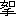
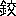

海島冐檢奇譚 海底軍艦
押川春浪
はしがき
一。太平洋の波に浮べる、この船にも似たる我日本の國人は、今や徒らに、富士山の明麗なる風光にのみ恍惚たるべき時にはあらざるべし。
光譽ある桂の冠と、富と權力との優勝旗は、すでに陸を離れて、世界の海上に移されたり。
この冠を戴き、この優勝旗を握らむものは誰ぞ。
他なし、海の勇者なり。海の勇者は即ち世界の勇者たるべし。
一。天長節の佳日に際し
子爵 伊東海軍大將
肝付海軍少將
伯爵 吉井海軍少佐
子爵 小笠原海軍少佐
上村海軍少佐
各位の清福を賀※
［＃変体仮名し、はしがき-14］、つたなき本書のために、題字及び序文を賜はりし高意にむかつて、誠實なる感謝の意を表す。
一。上村海軍少佐の懇切なる教示と、嚴密なる校閲とを受けたるは、啻に著者の幸福のみにはあらず、讀者諸君若し此書によりて、幾分にても、海上の智識を得らるゝあらば、そは全く少佐の賜なり。
一。遙かに、獨京伯林なる、巖谷小波先生の健勝を祈る。
著者※［＃変体仮名し、はしがき-20］るす
［＃改ページ］
（海島冐檢奇譚）海底軍艦目次
第一回
海外の
日本人
子ープルス港の奇遇――大商館――濱島武文［＃「濱島武文」は底本では「濱鳥武文」］――春枝夫人――日出雄少年――松島海軍大佐の待命
第二回 魔の日魔の刻
送別會――老女亞尼――ウルピノ山の聖人――十月の祟の日――黄金と眞珠――月夜の出港
第三回 怪の船
銅鑼の響――ビール樽の船長――白色檣燈――古風な英國人――海賊島の奇聞――海蛇丸
第四回 反古の新聞
葉卷煙草――櫻木海軍大佐の行衞――大帆走船と三十七名の水兵――奇妙な新體詩――秘密の發明――二點鐘カーンカン
第五回 ピアノと拳鬪
船中の音樂會――鵞鳥聲の婦人――春枝夫人の名譽――甲板の競走――相撲――私の閉口――曲馬師の虎
第六回 星火榴彈
難破船の信號――イヤ、流星の飛ぶのでせう――無稽な――三個の舷燈――船幽靈め――其眼が怪しい
第七回 印度洋の海賊船
水雷驅逐艦か巡洋艦か――往昔の海賊と今の海賊――潜水器――探海電燈――白馬の如き立浪――海底淺き處――大衝突
第八回 人間の運命
弦月丸の最後――ひ、ひ、卑怯者め――日本人の子――二つの浮標――春枝夫人の行衞――あら、黒い物が！
第九回 大海原の小端艇
亞尼の豫言――日出雄少年の夢――印度洋の大潮流――にはか雨――昔の御馳走――巨大な魚群
第十回 沙魚の水葬
天の賜――反對潮流――私は黒奴、少年は炭團屋の忰――おや／＼變な味になりました――またも斷食
第十一回 無人島の響
人の住む島か魔の棲む島か――あら、あの音は――奇麗な泉――ゴリラの襲來――水兵ヒラリと身を躱はした――海軍士官の顏
第十二回 海軍の家
南方の無人島――快活な武村兵曹――おぼろな想像――前は絶海の波、後は椰子の林――何處ともなく立去つた
第十三回 星影がちら／＼
歡迎――春枝夫人は屹度死にません――此新八が先鋒ぢや――浪の江丸の沈沒――此島もなか／＼面白いよ――三年の後
第十四回 海底の造船所
大佐の後姿がチラリと見えた――獅子狩は眞平御免だ――猛犬稻妻――秘密の話――屏風岩――物凄い跫音――鐵門の文字
第十五回 電光艇
鼕々たる浪の音――投鎗に似た形――三尖衝角――新式魚形水雷――明鏡に映る海上海底の光景――空氣製造器――鐵舟先生の詩
第十六回 朝日島
日出雄少年は椰子の木蔭に立つて居つた――國際法――占領の證據――三尖形の紀念塔――成程妙案々々――其處だよ
第十七回 冐險鐵車
自動の器械――斬頭刄形の鉞――ポンと小胸を叩いた――威張れません――君が代の國歌――いざ帝國の萬歳を唱へませう
第十八回 野球競技
九種の魔球――無邪氣な紛着――胴上げ――西と東に別れた――獅子の友呼び――手頃の鎗を捻つて――私は殘念です――駄目だんべい
第十九回 猛獸隊
自然の殿堂――爆裂彈――エンヤ／＼の掛聲――片足の靴――好事魔多し――砂滑りの谷、一名死の谷――深夜の猛獸――かゞり火
第二十回 猛犬の使者
山又山を越えて三十里――一封の書面――あの世でか、此世でか――此犬尋常でない――眞黒になつて其後を追ふた――水樽は空になつた
第二十一回 空中の救ひ
何者にか愕いた樣子――誰かの半身が現はれて――八日前の晩――三百反の白絹――お祝の拳骨――稻妻と少年と武村兵曹
第二十二回 海の禍
孤島の紀元節――海軍大佐の盛裝――海岸の夜會――少年の劍舞――人間の幸福を嫉む惡魔の手――海底の地滑り――電光艇の夜間信號
第二十三回 十二の樽
海底戰鬪艇の生命――人煙の稀な橄欖島――鐵の扉は微塵――天上から地獄の底――其樣な無謀な事は出來ません――無念の涙
第二十四回 輕氣球の飛行
絶島の鬼とならねばならぬ――非常手段――私が參ります――無言のわかれ――心で泣いたよ――住馴れた朝日島は遠く／＼
第二十五回 白色巡洋艦
大陸の影――矢の如く空中を飛走した――ポツンと白い物――海鳥の群――「ガーフ」の軍艦旗――や、や、あの旗は！ あの船は！
第二十六回 顏と顏と顏
帝國軍艦旗――虎髯大尉、本名轟大尉――端艇諸共引揚げられた――全速力――賣れた顏――誰かに似た顏――懷かしき顏
第二十七回 艦長室
鼻髯を捻つた――夢ではありますまいか――私は何より嬉しい――大分色は黒くなりましたよ、はい――今度は貴女の順番――四年前の話
第二十八回 紀念軍艦
帝國軍艦「日の出」――此虎髯が御話申す――テームス造船所の製造――「明石」に髣髴たる巡洋艦――人間の萬事は天意の儘です
第二十九回 薩摩琵琶
春枝夫人の物語――不屆な悴――風清き甲板――國船の曲――腕押し脛押と參りませう――道塲破りめ――奇怪の少尉
第三十回 月夜の大海戰
印度國コロンボの港――滿艦の電光――戰鬪喇叭――惡魔印の海賊旗大軍刀をブン／＼と振廻した――大佐來！ 電光艇來！―朝日輝く印度洋
目次終
［＃改ページ］
第一回 海外の日本人
ネープルス港の奇遇――大商館――濱島武文
［＃「濱島武文」は底本では「 島武文」］
島武文」］――春枝夫人――日出雄少年――松島海軍大佐の待命
私が世界漫遊の目的をもつて、横濱の港を出帆したのは、既に六年以前の事で、はじめ亞米利加に渡り、それから大西洋の［＃「大西洋の」は底本では「太西洋の」］荒浪を横斷つて歐羅巴に遊び、英吉利、佛蘭西、獨逸等音に名高き國々の名所古跡を遍歴して、其間に月を閲すること二十有餘箇月、大約一萬五千里の長途を後にして、終に伊太利に入り、往昔から美術國の光譽高き、其さま／″＼の奇觀をも足る程眺めたれば、之より我が懷かしき日本へ歸らんと、當夜十一時半拔錨の弦月丸とて、東洋行の 船に乘組まんがため、國の名港ネープルスまで來たのは、今から丁度四年前、季節は櫻散る五月中旬の或晴朗な日の正午時分であつた。
船に乘組まんがため、國の名港ネープルスまで來たのは、今から丁度四年前、季節は櫻散る五月中旬の或晴朗な日の正午時分であつた。
市街はづれの停車塲から客待の馬車で、海岸附近の或旅亭に着き、部室も定まり軈て晝餉もすむと最早何も爲る事がない、船の出港までは未だ十時間以上。長い旅行を行つた諸君はお察しでもあらうが、知る人もなき異境の地で、車や船の出發を待ち暮すほど徒然ぬものはない、立つて見つ、居て見つ、新聞や雜誌等を繰廣げて見たが何も手に着かない、寧そ晝寢せんか、市街でも散歩せんかと、思案とり／″＼窓に倚つて眺めると、眼下に瞰おろす子ープルス灣、鏡のやうな海面に泛んで、出る船、入る船［＃「船」は底本では「般」］停泊つて居る船、其船々の甲板の模樣や、檣上に飜る旗章や、また彼方の波止塲から此方へかけて奇妙な風の商舘の屋根などを眺め廻しつゝ、たゞ譯もなく考想へて居る内にふと思ひ浮んだ一事がある。それは濱島武文といふ人の事で。
濱島武文とは私がまだ高等學校に居つた時分、左樣かれこれ十二三年も前の事であるが、同じ學びの友であつた。彼は私よりは四つ五つの年長者で、從て級も異つて居つたので、始終交るでもなかつたが、其頃校内で運動の妙手なのと無暗に冐險的旅行の嗜好なのとで、彼と私とは指を折られ、從て何ゆゑとなく睦ましく離れがたく思はれたが、其後彼は學校を卒業して、元來ならば大學に入る可きを、他に大望ありと稱して、幾何もなく日本を去り、はじめは支那に遊び、それから歐洲を渡つて、六七年以前の事、或人が佛京巴里の大博覽會で、彼に面會したとまでは明瞭だが、私も南船北馬の身の其後の詳なる消息を耳にせず、たゞ風のたよりに、此頃では、伊太利のさる繁華なる港に宏大な商會を立てゝ、專ら貿易事業に身を委ねて居る由、おぼろながらに傳へ聞くのみ。
伊太利の繁華なる港といへば、此處は國中隨一の名港子ープルス、埠頭から海岸通りへかけて商館の數も幾百千、もしや濱島は此港で、其商會とやらを營んで居るのではあるまいかと思ひ浮んだので、實に雲を掴むやうな話だが、萬が一もと旅亭の主人を呼んで聽いて見ると、果然！ 主人は私の問を終まで言はせず、ポンと禿頭を叩いて、
『オヽ、濱島さん よく存じて居ますよ、雇人が一千人もあつて、支店の數も十の指――ホー、其お宅ですか、それは斯う行つて、あゝ行つて。』と口と手眞似で窓から首を突出して
よく存じて居ますよ、雇人が一千人もあつて、支店の數も十の指――ホー、其お宅ですか、それは斯う行つて、あゝ行つて。』と口と手眞似で窓から首を突出して
『あれ／＼、あそこに見へる宏壯な三階の家！』
天外萬里の異邦では、初對面の人でも、同じ山河の生れと聞けば懷かしきに、まして昔馴染の其人が、現在此地にありと聞いては矢も楯も堪らない、私は直ぐと身仕度を整へて旅亭を出た。
旅亭の禿頭に教へられた樣に、人馬の徃來繁き街道を西へ／＼と凡そ四五町、唯ある十字街を左へ曲つて、三軒目の立派な煉瓦造りの一構、門に T. Hamashima, と記してあるのは此處と案内を乞ふと、直ぐ見晴しのよい一室に通されて、待つ程もなく靴音高く入つて來たのはまさしく濱島！ 十年相見ぬ間に彼には立派な八字髯も生へ、其風采も餘程變つて居るが相變らず洒々落々の男『ヤァ、柳川君か、これは珍らしい、珍らしい。』と下にも置かぬ待遇、私は心から しかつたよ。髯は生へても友達同士の間は無邪氣なもので、いろ／＼の話の間には、昔倶に山野に獵暮して、※［＃「過」の「咼」に代えて「咼の左右対称」、6-5］て農家の家鴨を射殺して、辛き目に出逢つた話や、春季の大運動會に、彼と私とはおの／＼級の撰手となつて、必死に優勝旗を爭つた事や、其他さま／″＼の懷舊談も出て、時の移るのも知らなかつたが、ふと氣付くと、當家の模樣が何となく忙がし相で、四邊の部室では甲乙の語り合ふ聲喧しく、廊下を走る人の足音もたゞならず速い、濱島は昔から極く沈着な人で、何事にも平然と構へて居るから夫とは分らぬが、今珈琲を運んで來た小間使の顏にも其忙がしさが見へるので、若しや、今日は不時の混雜中ではあるまいかと氣付いたから、私は急に顏を上げ
しかつたよ。髯は生へても友達同士の間は無邪氣なもので、いろ／＼の話の間には、昔倶に山野に獵暮して、※［＃「過」の「咼」に代えて「咼の左右対称」、6-5］て農家の家鴨を射殺して、辛き目に出逢つた話や、春季の大運動會に、彼と私とはおの／＼級の撰手となつて、必死に優勝旗を爭つた事や、其他さま／″＼の懷舊談も出て、時の移るのも知らなかつたが、ふと氣付くと、當家の模樣が何となく忙がし相で、四邊の部室では甲乙の語り合ふ聲喧しく、廊下を走る人の足音もたゞならず速い、濱島は昔から極く沈着な人で、何事にも平然と構へて居るから夫とは分らぬが、今珈琲を運んで來た小間使の顏にも其忙がしさが見へるので、若しや、今日は不時の混雜中ではあるまいかと氣付いたから、私は急に顏を上げ
『何かお急がしいのではありませんか。』と問ひかけた。
『イヤ、イヤ、决して御心配なく。』と彼は此時珈琲を一口飮んだが、悠々と鼻髯を捻りながら
『何ね、實は旅立つ者があるので。』
オヤ、何人が何處へと、私が問はんとするより先に彼は口を開いた。
『時に柳川君、君は當分此港に御滯在でせうねえ、それから、西班牙の方へでもお廻りですか、それとも、更に歩を進めて、亞弗利加探險とでもお出掛けですか。』
『アハヽヽヽ。』と私は頭を掻いた。
『つい昔話の面白さに申遲れたが、實は早急なのですよ、今夜十一時半の船で日本へ皈る一方なんです。』
『えい、君も？。』と彼は眼を見張つて。
『矢張今夜十一時半出帆の弦月丸で？。』
『左樣、殘念ながら、西班牙や、亞弗利加の方は今度は斷念しました。』と、私がキツパリと答へると、彼はポンと膝を叩いて
『やあ、奇妙々々。』
何が奇妙なのだと私の審る顏を眺めつゝ、彼は言をつゞけた。
『何んと奇妙ではありませんか、これ等が天の紹介とでも云ふものでせう、實は私の妻子も、今夜の弦月丸で日本へ皈國ますので。』
『え、君の細君と御子息』と私は意外に※［＃「口＋斗」、8-11］んだ。十年も相見ぬ間に、彼に妻子の出來た事は何も不思議はないが、實は今の今まで知らなんだ、况んや其人が今本國へ皈るなどゝは全く寢耳に水だ。
濱島は聲高く笑つて
『はゝゝゝゝ。君はまだ私の妻子を御存じなかつたのでしたね。これは失敬々々。』と急はしく呼鈴を鳴らして、入來つた小間使に
『あのね、奧さんに珍らしいお客樣が……。』と言つたまゝ私の方に向直り
『實は斯うなんですよ。』と小膝を進めた。
『私が此港へ貿易商會を設立た翌々年の夏、鳥渡日本へ皈りました。其頃君は暹羅漫遊中と承つたが、皈國中、或人の媒介で、同郷の松島海軍大佐の妹を妻に娶つて來たのです。これは既に十年から前の事で、其後に生れた兒も最早八歳になりますが、さて、私の日頃の望は、自分は斯うして、海外に一商人として世に立つて居るものゝ、小兒丈けはどうか日本帝國の干城となる有爲な海軍々人にして見たい、夫につけても、日本人の子は日本の國土で教育しなければ從て愛國心も薄くなるとは私の深く感ずる所で、幸ひ妻の兄は本國で相當の軍人であれば、其人の手許に送つて、教育萬端の世話を頼まうと、餘程以前から考へて居つたのですが、どうも然る可き機會を得なかつた。然るに今月の初旬、本國から届いた郵便によると、妻の令兄なる松島海軍大佐は、兼て帝國軍艦高雄の艦長であつたが、近頃病氣の爲めに待命中の由、勿論危篤といふ程の病氣ではあるまいが、妻も唯一人の兄であれば、能ふ事なら自ら見舞もし、久ぶりに故山の月をも眺めたいとの願望、丁度小兒のこともあるので、然らば此機會にといふので、二人は今夜の十一時半の弦月丸で出發といふ事になつたのです。無論、妻は大佐の病氣次第で早かれ遲かれ歸つて來ますが、兒は永く／＼――日本帝國の天晴れ軍人として世に立つまでは、芙蓉の峯の麓を去らせぬ積です。』と、語り終つて、彼は靜かに私の顏を眺め
『で、君も今夜の御出帆ならば、船の中でも、日本へ皈つて後も、何呉れ御面倒を願ひますよ。』
此話で何事も分明になつた。それに就けても濱島武文は昔ながら壯快い氣象だ、たゞ一人の兒を帝國の軍人に養成せんが爲めに恩愛の覊を斷切つて、本國へ送つてやるとは隨分思ひ切つた事だ。また松島海軍大佐の令妹なる彼の夫人にはまだ面會はせぬが、兄君の病床を見舞はんが爲めに、暫時でも其良君に別を告げ、幼き兒を携へて、浪風荒き萬里の旅に赴くとは仲々殊勝なる振舞よと、心竊かに感服するのである。更に想ひめぐらすと此度の事件は、何から何まで小説のやうだ。海外萬里の地で、ふとした事から昔馴染の朋友に出逢つた事、それから私は此港へ來た時は、恰も彼の夫人と令息とが此處を出發しやうといふ時で、申合せたでもなく、同じ時に、同じ船に乘つて、之から數ヶ月の航海を倶にするやうな運命に立到つたのは、實に濱島の云ふが如く、之が不思議なる天の紹介とでもいふものであらう、斯う思つて、暫時或想像に耽つて居る時、忽ち部室の戸を靜かに開いて入來つた二個の人がある。言ふ迄もない、夫人と其愛兒だ。濱島は立つて
『これが私の妻春枝。』と私に紹介せ、更に夫人に向つて、私と彼とが昔おなじ學びの友であつた事、私が今回の旅行の次第、また之から日本まで夫人等と航海を共にするやうになつた不思議の縁を言葉短に語ると、夫人は『おや。』と言つたまゝいと懷かし氣に進み寄る。年の頃廿六七、眉の麗はしい口元の優しい丁度天女の樣な美人、私は一目見て、此夫人は其容姿の如く、心も美はしく、世にも高貴き婦人と思つた。
一通りの挨拶終つて後、夫人は愛兒を麾くと、招かれて臆する色もなく私の膝許近く進み寄つた少年、年齡は八歳、名は日出雄と呼ぶ由、清楚とした水兵風の洋服姿で、髮の房々とした、色のくつきりと白い、口元は父君の凛々しきに似、眼元は母君の清しきを其儘に、見るから可憐の少年。私は端なくも、昨夜ローマ府からの車の中で讀んだ『小公子』といふ小説中の、あの愛らしい／＼小主人公を聯想した。
日出雄少年は海外萬里の地に生れて、父母の外には本國人を見る事も稀なる事とて、幼き心にも懷かしとか、しとか思つたのであらう、其清しい眼で、しげ／＼と私の顏を見上げて居つたが
『おや、叔父さんは日本人！。』と言つた。
『私は日本人ですよ、日出雄さんと同じお國の人ですよ。』と私は抱き寄せて
『日出雄さんは日本人が好きなの、日本のお國を愛しますか。』と問ふと少年は元氣よく
『あ、私は日本が大好きなんですよ、日本へ皈りたくつてなりませんの［＃「なりませんの」は底本では「なりせまんの」］、でねえ、毎日／＼日の丸の旗を立てゝ、街で［＃「街で」は底本では「街て」］戰爭事をしますの、爾してねえ、日の丸の旗は強いのですよ、何時でも勝つてばつかり居ますの。』
『おゝ、左樣でせうとも／＼。』と私は餘りの可愛さに少年を頭上高く差し上げて、大日本帝國萬歳と※［＃「口＋斗」、8-11］ぶと、少年も私の頭の上で萬歳々々と小躍をする。濱島は浩然大笑した、春枝夫人は眼を細うして
『あら、日出雄は、ま、どんなにしいんでせう。』と言つて、紅のハンカチーフに笑顏を蔽ふた。
第二回 魔の日魔の刻
送別會――老女亞尼――ウルピノ山の聖人――十月の祟の日――黄金と眞珠――月夜の出港
それから談話にはまた一段の花が咲いて、日永の五月の空もいつか夕陽が斜に射すやうにあつたので、私は一先づ暇乞せんと折を見て『いづれ今夜弦月丸にて――。』と立ちかけると、濱島は周章て押止め
『ま、ま、お待ちなさい、お待ちなさい、今から旅亭へ皈つたとて何になります。久ぶりの面會なるを今日は足る程語つて今夜の御出發も是非に私の家より。』と夫人とも／″＼切に勸めるので、元來無遠慮勝の私は、然らば御意の儘にと、旅亭の手荷物は當家の馬丁を取りに使はし、此處から三人打揃つて出發する事になつた。
いろ／＼の厚き待遇を受けた後、夜の八時頃になると、當家の番頭手代をはじめ下婢下僕に至るまで、一同が集つて送別の催をする相で、私も招かれて其席へ連なつた。春枝夫人は世にすぐれて慈愛に富める人、日出雄少年は彼等の間に此上なく愛重せられて居つたので、誰とて袂別を惜まぬものはない、然し主人の濱島は東洋の豪傑風で、泣く事などは大厭の性質であるから一同は其心を酌んで、表面に涙を流す者などは一人も無かつた。イヤ、茲に只一人特別に私の眼に止つた者があつた。それは席の末座に列つて居つた一個の年老たる伊太利の婦人で、此女は日出雄少年の保姆にと、久しき以前に、遠き田舍から雇入れた女の相で、背の低い、白髮の、極く正直相な老女であるが、前の程より愁然と頭を埀れて、丁度死出の旅路に行く人を送るかの如く、頻りに涙を流して居る。
私は何故ともなく異樣に感じた。
『オヤ、亞尼がまた詰らぬ事を考へて泣いて居りますよ。』と、春枝夫人は良人の顏を眺めた。
頓て、此集會も終ると、十時間近で、いよ／＼弦月丸へ乘船の時刻とはなつたので、濱島の一家族と、私とは同じ馬車で、多の人に見送られながら波止塲に來り、其邊の或茶亭に休憇した、此處で彼等の間には、それ／＼袂別の言もあらうと思つたので、私は氣轉よく一人離れて波打際へと歩み出した。
此時にふと心付くと、何者か私の後にこそ／＼と尾行して來る樣子、オヤ變だと振返る、途端に其影は轉ぶが如く私の足許へ走り寄つた。見ると、こは先刻送別の席で、只一人で泣いて居つた亞尼と呼べる老女であつた。
『おや、お前は。』と私は歩行を止めると、老女は今も猶ほ泣きながら
『賓人よ、お願ひで厶ります。』と兩手を合せて私を仰ぎ見た。
『お前は亞尼とか云つたねえ、何の用かね。』と私は靜かに問ふた。老女は虫のやうな聲で『賓人よ。』と暫時私の顏を眺めて居つたが
『あの、妾の奧樣と日出雄樣とは今夜の弦月丸で、貴方と御同道に日本へ御出發になる相ですが、それを御延べになる事は出來ますまいか。』と恐る／＼口を開いたのである。ハテ、妙な事を言ふ女だと私は眉を顰めたが、よく見ると、老女は、何事にか痛く心を惱まして居る樣子なので、私は逆らはない
『左樣さねえ、もう延ばす事は出來まいよ。』と輕く言つて
『然し、お前は何故其樣に嘆くのかね。』と言葉やさしく問ひかけると、此一言に老女は少しく顏を擡げ
『實に賓人よ、私はこれ程悲しい事はありません。はじめて奧樣や日出雄樣が、日本へお皈りになると承つた時は本當に魂消えましたよ、然しそれは致方もありませんが、其後よく承ると、御出帆の時日は時もあらうに、今夜の十一時半……。』といひかけて唇をふるはし
『あの、あの、今夜十一時半に御出帆になつては――。』
『何、今夜の船で出發すると如何したのだ。』と私は眼を つた。亞尼は胸の鏡に手を當てゝ
つた。亞尼は胸の鏡に手を當てゝ
『私は神樣に誓つて申しますよ、貴方はまだ御存じはありますまいが、大變な事があります。此事は旦那樣にも奧樣にも毎度か申上げて、何卒今夜の御出帆丈けは御見合せ下さいと御願ひ申したのですが、御兩方共たゞ笑つて「亞尼や其樣に心配するには及ばないよ。」と仰せあるばかり、少しも御聽許にはならないのです。けれど賓人よ、私はよく存じて居ります、今夜の弦月丸とかで御出發になつては、奧樣も、日出雄樣も、决して御無事では濟みませんよ。』
『無事で濟まんとは――。』と私は思はず釣込まれた。
『はい、决して御無事には濟みません。』と、亞尼は眞面目になつた、私の顏を頼母し氣に見上げて
『私は貴方を信じますよ、貴方は决してお笑ひになりますまいねえ。』と前置をして斯う言つた。
『ウルピノ山の聖人の仰つた樣に、昔から色々の口碑のある中で、船旅程時日を選ばねばならぬものはありません、凶日に旅立つた人は屹度災難に出逢ひますよ。これは本當です、現に私の一人の悴も、七八年以前の事、私が切に止めるのも聽かで、十月の祟の日に家出をしたばかりに、終に世に恐ろしい海蛇に捕られてしまいました。私にはよく分つて居ますよ。奧樣とて日出雄樣とて今夜御出帆になつたら决して御無事では濟みません、はい、其理由は、今日は五月の十六日で魔の日でせう、爾して、今夜の十一時半といふは、何んと恐ろしいでは御座いませんか、魔の刻限ですもの。』
私は聽きながらプツと吹き出す處であつた。けれど老女は少しも構はず
『賓人よ、笑ひ事ではありませぬ、魔の日魔の刻といふのは、一年中でも一番に不吉な時なのです、他の日の澤山あるのに、此日、此刻限に御出帆になるといふのは何んの因果でせう、私は考へると居ても立つても居られませぬ。其上、私は懇意の船乘さんに聞いて見ますと、今度の航海には、弦月丸に澤山の黄金と眞珠とが積入れてあります相な、黄金と眞珠とが波の荒い海上で集ると、屹度恐ろしい祟を致します。あゝ、不吉の上にも不吉。賓人よ、私の心の千分の一でもお察しになつたら、どうか奧樣と日出雄樣を助けると思つて、今夜の御出帆をお延べ下さい。』と拜まぬばかりに手を合せた。聽いて見るとイヤハヤ無※［＃「（禾＋尤）／上／日」、22-10］な話！ 西洋でもいろ／＼と縁起を語る人はあるが、此老女のやうなのはまア珍らしからう。私は大笑ひに笑つてやらうと考へたが、待てよ、たとへ迷信でも、其主人の身の上を慮ふこと斯くまで深く、かくも眞面目で居る者を、無下に嘲笑すでもあるまいと氣付いたので、込み上げて來る可笑さを無理に怺えて
『亞尼！。』と一聲呼びかけた。
『亞尼！ お前の言ふ事はよく分つたよ、其忠實なる心をば御主人樣も奧樣もどんなにかお悦びだらう、けれど――。』と彼女の顏を眺め
『けれどお前の言ふ事は、みんな昔の話で、今では魔の日も祟の日も無くなつたよ。』
『あゝ、貴方も矢張お笑ひなさるのですか。』と亞尼はいと情なき顏に眼を閉ぢた。
『いや、决して笑ふのではないが、其事は心配するには及ばぬよ、奧樣も日出雄少年も、私が生命にかけて保護して上げる。』と言つたが、亞尼は殆んど絶望極りなき顏で
『あゝ、もう無益だよ／＼。』とすゝり泣きしながら、むつくと立上り
『神樣、佛樣、奧樣と日出雄樣の御身をお助け下さい。』と叫んだ儘、狂氣の如くに走り去つた。
丁度此時、休憩所では乘船の仕度も整つたと見へ、濱島の頻りに私を呼ぶ聲が聽えた。
第三回 怪の船
銅鑼の響――ビール樽の船長――白色の檣燈――古風な英國人――海賊島の奇聞――海蛇丸
春枝夫人と、日出雄少年と、私とが、多の身送人に袂別を告げて、波止塲から凖備の小蒸船で、遙かの沖合に停泊して居る弦月丸に乘組んだのは其夜十時※［＃「過」の「咼」に代えて「咼の左右対称」、25-2］ぎ三十分。濱島武文と、他に三人の人は本船まで見送つて來た。
此弦月丸といふのは、伊太利の東方船會社の持船で、噸數六千四百。二本の煙筒に四本檣の頗る巨大な船である、此度支那及び日本の各港へ向つての航海には、夥しき鐵材と、黄金眞珠等少なからざる貴重品を搭載して居る相で、其船脚も餘程深く沈んで見えた。
弦月丸の舷梯へ達すると、私共の乘船の事は既に乘客名簿で分つて居つたので、船丁は走つて來て、急はしく荷物を運ぶやら、接待員は恭しく帽を脱して、甲板に混雜せる夥多の人を押分るやらして、吾等は導かれて船の中部に近き一等船室に入つた。どの船でも左樣だが、同じ等級の船室の中でも、中部の船室は最も多く人の望む所である。何故かと言へば航海中船の動搖を感ずる事が比較的に少ない爲で、此室を占領する爲には虎鬚の獨逸人や、羅馬風の鼻の高い佛蘭西人等に隨分競爭者が澤山あつたが、幸にもネープルス市中で「富貴なる日本人。」と盛名隆々たる濱島武文の特別なる盡力があつたので、吾等は遂に此最上の船室を占領する事になつた。加ふるに春枝夫人、日出雄少年の部室と私の部室とは直ぐ隣合つて居つたので萬事に就いて都合が宜からうと思はるゝ。
私は元來膝栗毛的の旅行であるから、何も面倒はない、手提革包一個を船室の中へ投込んだまゝ直ぐ春枝夫人等の船室へ訪づれた。此時夫人は少年を膝に上せて、其良君や他の三人を相手に談話をして居つたが、私の姿を見るより
『おや、もうお片附になりましたの。』といつて嬋娟たる姿は急ぎ立ち迎へた。
『なあに、柳川君には片附けるやうな荷物もないのさ。』と濱島は聲高く笑つて『さあ。』とすゝめた倚子によつて、私も此仲間入。最早袂別の時刻も迫つて來たので、いろ／＼の談話はそれからそれと盡くる間も無かつたが、兎角する程に、ガラン、ガラ、ガラン、ガラ、と船中に布れ廻る銅鑼の響が囂しく聽えた。
『あら、あら、あの音は――。』と日出雄少年は眼をまん丸にして母君の優しき顏を仰ぐと、春枝夫人は默然として、其良君を見る。濱島武文は靜かに立上つて
『もう、袂別の時刻になつたよ。』と他の三人を顧見た。
すべて、海上の規則では、船の出港の十分乃至十五分前に、船中を布れ廻る銅鑼の響の聽ゆると共に本船を立去らねばならぬのである。で、濱島は此時最早此船を去らんとて私の手を握りて袂別の言葉厚く、夫人にも二言三言云つた後、その愛兒をば右手に抱き寄せて、其房々とした頭髮を撫でながら
『日出雄や、汝と父とは、之から長時の間別れるのだが、汝は兼々父の言ふやうに、世に俊れた人となつて――有爲な海軍士官となつて、日本帝國の干城となる志を忘れてはなりませんよ。』と言ひ終つて、少年が默つて點頭くのを笑まし氣に打ち見やりつゝ、他の三人を促して船室を出た。
先刻は見送られた吾等は今は彼等を此船より送り出さんと、私は右手に少年を導き、流石に悄然たる春枝夫人を扶けて甲板に出ると、今宵は陰暦十三夜、深碧の空には一片の雲もなく、月は浩々と冴え渡りて、加ふるに遙かの沖に停泊して居る三四艘の某國軍艦からは、始終探海電燈をもつて海面を照して居るので、其明なる事は白晝を欺くばかりで、波のまに／＼浮沈んで居る浮標の形さへいと明に見える程だ。
濱島は船の舷梯まで到つた時、今一度此方を振返つて、夫人とその愛兒との顏を打眺めたが、何か心にかゝる事のあるが如く私に瞳を轉じて
『柳川君、然らば之にてお別れ申すが、春枝と日出雄の事は何分にも――。』と彼は日頃の豪壯なる性質には似合はぬ迄、氣遣はし氣に、恰も何者か空中に力強き腕のありて、彼を此塲に捕へ居るが如くいとゞ立去り兼ねて見へた。之が俗に謂ふ虫の知らせとでもいふものであらうかと、後に思ひ當つたが、此時はたゞ離別の情さこそと思ひ遣るばかりで、私は打點頭き『濱島君よ、心豐かにいよ／＼榮え玉へ、君が夫人と愛兒の御身は、此柳川の生命にかけても守護しまいらすべし。』と答へると彼は莞爾と打笑み、こも／″＼三人と握手して、其儘舷梯を降り、先刻から待受けて居つた小蒸船に身を移すと、小蒸船は忽ち波を蹴立てゝ、波止塲の方へと歸つて行く、其仇浪の立騷ぐ邊海鳥二三羽夢に鳴いて、うたゝ旅客の膓を斷つばかり、日出雄少年は無邪氣である
『あら、父君は單獨で何處へいらつしやつたの、もうお皈りにはならないのですか。』と母君の纎手に依りすがると春枝夫人は凛々しとはいひ、女心のそゞろに哀を催して、愁然と見送る良人の行方、月は白晝のやうに明だが、小蒸船の形は次第々々に朧になつて、殘る煙のみぞ長き名殘を留めた。
『夫人、すこし、甲板の上でも逍遙して見ませうか。』と私は二人を誘つた。かく氣の沈んで居る時には、賑はしき光景にても眺めなば、幾分か心を慰むる因ともならんと考へたので、私は兩人を引連れて、此時一番に賑はしく見えた船首の方へ歩を移した。
最早、出港の時刻も迫つて居る事とて、此邊は仲々の混雜であつた。輕き服裝せる船丁等は宙になつて驅けめぐり、逞ましき骨格せる夥多の船員等は自己が持塲／＼に列を作りて、後部の舷梯は既に引揚げられたり。今しも船首甲板に於ける一等運轉手の指揮の下に、はや一團の水夫等は捲揚機の周圍に走せ集つて、次の一令と共に錨鎖を卷揚げん身構。船橋の上にはビール樽のやうに肥滿した船長が、赤き頬髯を捻りつゝ傲然と四方を睥睨して居る。私は三々五々群をなして、其處此處に立つて居る、顏色の際立つて白い白耳義人や、「コスメチツク」で鼻髯を劍のやうに塗り固めた佛蘭西の若紳士や、あまりに酒を飮んで酒のために鼻の赤くなつた獨逸の陸軍士官や、其他美人の標本ともいふ可き伊太利の女俳優や、色の無暗に黒い印度邊の大富豪の船客等の間に立交つて、此目醒ましき光景を見廻しつゝ、春枝夫人とくさ／″＼の物語をして居つたが、此時不意にだ、實に不意に私の背部で、『や、や、や、しまつたゾ。』と一度に※［＃「口＋斗」、32-5］ぶ水夫の聲、同時に物あり、甲板に落ちて微塵に碎けた物音のしたので、私は急ぎ振返つて見ると、其處では今しも、二三の水夫が滑車をもつて前檣高く掲げんとした一個の白色燈――それは船が航海中、安全進航の表章となるべき球形の檣燈が、何かの機會で糸の縁を離れて、檣上二十呎ばかりの所から流星の如く落下して、あはやと言ふ間に船長が立てる船橋に衝つて、燈は微塵に碎け、燈光はパツと消える、船長驚いて身を躱す拍子に足踏滑らして、船橋の階段を二三段眞逆に落ちた。水夫共は『あツ』とばかり顏の色を變た。船長は周章てゝ起上つたが、怒氣滿面、けれど自己が醜態に怒る事も出來ず、ビール樽のやうな腹に手を當てゝ、物凄い眼に水夫共を睨み付けると、此時私の傍には鬚の長い、頭の禿た、如何にも古風らしい一個の英國人が立つて居つたが、此活劇を見るより、ぶるぶると身慄して
『あゝ、あゝ、縁起でもない、南無阿彌陀佛！ 此船に惡魔が魅て居なければよいが。』と呟いた。
えい。また御幣擔ぎ！ 今日は何んといふ日だらう。
勿論、此樣事には何も深い仔細のあらう筈はない。つまり偶然の出來事には相違ないのだが、私は何となく異樣に感じたよ。誰でも左樣だが、戰爭の首途とか、旅行の首途に少しでも變な事があれば、多少氣に懸けずには居られぬのである。特に我弦月丸は今や萬里の波濤を志して、音に名高き地中海、紅海、印度洋等の難所に進み入らんとする其首途に、船が安全航行の表章となるべき白色檣燈が微塵に碎けて、其燈光は消え、同時に、此船の主長ともいふべき船長が船橋より墮落して、心の不快を抱き、顏に憤怒の相を現はしたなど、或意味からいふと、何か此弦月丸に禍の起る其前兆ではあるまいかと、どうも好い心持はしなかつたのである。無論此樣な妄想は、平生ならば苦もなく打消されるのだが、今日は先刻から亞尼が、魔の日だの魔の刻だのと言つた言葉や、濱島が日頃に似ぬ氣遣はし氣なりし樣子までが、一時に心に浮んで來て、非常に變な心地がしたので、寧ろ此塲を立去らんと、春枝夫人を見返へると、夫人も今の有樣と古風なる英國人の獨言には幾分か不快を感じたと見へ
『あの艫の方へでもいらつしやいませんか。』と私を促しつゝ蓮歩を彼方へ移した。
頓て船尾の方へ來て見ると、此處は人影も稀で、既に洗淨を終つて、幾分の水氣を帶びて居る甲板の上には、月の色も一段と冴渡つて居る。
『矢張靜かな所が宜う厶いますねえ。』と春枝夫人は此時淋しき笑を浮べて、日出雄少年と共にずつと船端へ行つて、鐵欄に凭れて遙かなる埠頭の方を眺めつゝ
『日出雄や、あの向ふに見える高い山を覺えておいでかえ。』と住馴れし子ープルス市街の東南に聳ゆる山を指すと、日出雄少年は
『モリス山でせう、私はよつく覺えて居ますよ。』とパツチリとした眼で母君の顏を見上げた。
『おゝ、それなら、あの電氣燈が澤山に輝いて、大きな煙筒が五本も六本も並んで居る處は――。』
『サンガロー街――おつかさん、私の家も彼處にあるんですねえ。』と少年は兩手を鐵欄の上に載せて
『父君はもう家へお皈りになつたでせうか。』
『おゝ、お皈りになりましたとも、そして今頃は、あの保姆や、番頭のスミスさんなんかに、お前が温順しくお船に乘つて居る事を話していらつしやるでせう。』と言葉やさしく愛兒の房々せる頭髮に玉のやうなる頬をすり寄せて、餘念もなく物語る、これが夫人の爲めには、唯一の慰であらう。かゝる優しき振舞を妨ぐるは、心なき業と思つたから、私は態と其處へは行かず、少し離れてたゞ一人安樂倚子の上へ身を横へて、四方の風景を見渡すと、今宵は月明かなれば、さしもに廣きネープルス灣も眼界到らぬ隈はなく、おぼろ／＼に見ゆるイスチヤの岬には廻轉燈明臺の見えつ、隱れつ、天に聳ゆるモリス山の頂にはまだ殘の雪の眞白なるに、月の光のきら／＼と反射して居るなど得も言はれず、港内は電燈の光煌々たる波止塲の附近からずつと此方まで、金龍走る波の上には、船艦浮ぶ事幾百艘、出る船、入る船は前檣に白燈、右舷に緑燈、左舷に紅燈の海上法を守り、停泊まれる船は大鳥の波上に眠るに似て、丁度夢にでもあり相な景色！ 私は此樣な風景は今迄に幾回ともなく眺めたが、今宵はわけて趣味ある樣に覺えたので眼も放たず、それからそれと眺めて行く内、ふと眼に止つた一つの有樣――それは此處から五百米突ばかりの距離に停泊して居る一艘の蒸船で、今某國軍艦からの探海燈は其邊を隈なく照して居るので、其甲板の裝置なども手に取るやうに見える、此船噸數一千噸位、船體は黒色に塗られて、二本煙筒に二本檣、軍艦でない事は分つて居るが、商船か、郵便船か、或は他に何等かの目的を有して居る船か夫は分らない。勿論、外形に現れても何も審しい點はないが、少しく私の眼に異樣に覺えたのは、總噸數一千噸位にしては其構造の餘りに堅固らしいのと、また其甲板の下部には數門の大砲等の搭載て居るのではあるまいか、其船脚は尋常ならず深く沈んで見える。今や其二本の烟筒から盛んに黒煙を吐いて居るのは既に出港の時刻に達したのであらう、見る／＼船首の錨は卷揚げられて、徐々として進航を始めた。私は何氣なく衣袋を探つて、双眼鏡を取出し、度を合せて猶ほよく其甲板の工合を見やうとする、丁度此時先方の船でも、一個の船員らしい男が、船橋の上から一心に双眼鏡を我が船に向けて居つたが、不思議だ、私の視線と彼方の視線とが端なくも衝突すると、忽ち彼男は双眼鏡をかなぐり捨てゝ、乾顏に横を向いた。其擧動のあまりに奇怪なので私は思はず小首を傾けたが、此時何故とも知れず偶然にも胸に浮んで來た一つの物語がある。それは忘れもせぬ去年の秋の事で、私が米國から歐羅巴へ渡る航海中で、ふと一人の英國の老水夫と懇意になつた。其［＃ルビの「その」は底本では「たの」］老水夫がいろ／＼の興味ある話の中で、最も深く私の心に刻まれて居るのは、世に一番に恐ろしい航路は印度洋だとうふ物語、亞弗利加洲の東方、マダカッスル島からも餘程離れて、世の人は夢にも知らない海賊島といふのがある相だ、無論世界地圖には見る事の出來ぬ孤島であるが、其處には獰猛鬼神を欺く數百の海賊が一團體をなして、迅速堅固なる七艘の海賊船を浮べて、絶えず其邊の航路を徘徊し、時には遠く大西洋の［＃「大西洋の」は底本では「太西洋の」］沿岸までも船を乘出して、非常に貴重な貨物を搭載した船と見ると、忽ち之を撃沈して、惡む可き慾を逞ましうして居るとの話。而して歐米の海員仲間では、此事を知らぬでもないが、如何にせん、此海賊團體の狡猾なる事は言語に絶えて、其來るや風の如く、其去るも亦た風の如く。海賊共は如何にして探知するものかは知らぬが其覬ひ定める船は、常に第一等の貴重貨物を搭載して居る船に限る代りに、滅多に其形を現はさぬ爲と、今一つには此海賊輩は何時の頃よりか、利をもつて歐洲の某強國と結托して、年々五千萬弗に近い賄賂を納めて居る爲に、却つて隱然たる保護を受け、折ふし其船が貿易港に停泊する塲合には立派な國籍を有する船として、其甲板には該強國の商船旗を飜して、傍若無人に振舞つて居る由、實に怪しからぬ話である。
私は今、二本煙筒二本檣の不思議なる船を見て、神經の作用かは知らぬがふと思ひ浮んだ此話、若しかの老水夫の言が眞實ならば、此樣な船ではあるまいか、其海賊船といふのは、兎に角氣味の惡い事だと思つて居る内に、怪の船はだん／＼と速力を増して、我弦月丸の左方を掠めるやうに※去［＃「過」の「咼」に代えて「咼の左右対称」、41-4］る時、本船より射出する船燈の光でチラと認めたのは其船尾に記されてあつた「海蛇丸」の三字、「海蛇丸」とはたしかにかの船の名稱である。見る／＼内に波を蹴立てゝ、蒼渺の彼方に消え去た。
『あゝ、妙だ／＼、今日は何故此樣に不思議な事が續くのだらう。』と私は思はず叫んだ。
『おや、貴方如何かなすつて。』と春枝夫人は日出雄少年と共に驚いて振向いた。
『夫人！』と私は口を切つたが、待てよ、今の塲合に此樣な話――寧ろ私一個人の想像に※［＃「過」の「咼」に代えて「咼の左右対称」、42-1］ぎない事を輕々しく語つて、此美はしき人の、優しき心を痛めるでもあるまい、と心付いたので
『いや、何でもありませんよ、あはゝゝゝ。』と態と聲高く笑つた。丁度此時、甲板には十一時半を報ずる七點鐘が響いて、同時にボー、ボー、ボーツと恰も獅子の吼ゆるやうな笛の響、それは出港の相圖で、吾等の運命を托する弦月丸は、遂に徐々として進航をはじめた。
第四回 反古の新聞
葉卷烟草――櫻木海軍大佐の行衞――大帆走船と三十七名の水夫――奇妙な新體詩――秘密の大發明――二點鐘カヽン々々
灣口を出づるまで、私は春枝夫人と日出雄少年とを相手に甲板上に佇んで、四方の景色を眺めて居つたが、其内にネープルス港の燈光も微かになり、夜寒の風の身に染むやうに覺えたので、遂に甲板を降つた。
夫人と少年とを其船室に送つて、明朝を契つて自分の船室に歸つた時、八點鐘の號鐘はいと澄渡つて甲板に聽えた。
『おや、もう十二時！』と私は獨語した。既に夜深く、加ふるに當夜は浪穩にして、船に些の動搖もなければ、船客の多數は既に安き夢に入つたのであらう、たゞ蒸機關の響のかまびすしきと、折々當番の船員が靴音高く甲板に往來するのが聽ゆるのみである。
私は衣服を更めて寢臺に横つたが、何故か少しも眠られなかつた。船室の中央に吊してある球燈の光は煌々と輝いて居るが、どうも其邊に何か魔性でも居るやうで、空氣は頭を壓へるやうに重く、實に寢苦しかつた。諸君も御經驗であらうが此樣な時にはとても眠られるものではない、氣を焦てば焦つ程眼は冴えて胸にはさま／″＼の妄想が往來する。
私は思ひ切つて再び起上つた。喫烟室へ行くも面倒なり、少し船の規則の違反ではあるが、此室で葉卷でも燻らさうと思つて洋服の衣袋を探りて見たが一本も無い、不圖思ひ出したのは先刻ネープルス港を出發のみぎり、濱島の贈つて呉れた數ある贈物の中、四角な新聞包は、若しや煙草の箱ではあるまいかと考へたので、急ぎ開いて見ると果然最上の葉卷！ 『しめたり。』と火を點じて、スパスパやりながら餘念もなく其邊を見廻して居る内、見ると今葉卷の箱の包んであつた新聞紙。
『オヤ、日本の新聞だよ。』と私は思はず取上げた。
本國を出でゝから二年間、旅から旅へと遍歴して歩く身は、折々日本の公使館や領事館で、本國の珍らしき事件を耳にする外は、日本の新聞などを見る事は極めて稀であるから、私は實に懷かしく感じた。急ぎ皺を延して見ると、これは既に一年半も前の東京の某新聞であつた。一年半も前といへば私がまだ亞米利加の大陸に滯在して居つた時分の事で、隨分古い新聞ではあるが、古くつても何んでもよい、故郷懷かしと思ふ一念に、眼も放たず讀んでゆく内、忽ち眼に着いた一段の記事があつた。それは本紙第二面の左の如き雜報であつた。
◎櫻木豫備海軍大佐の行衞＝＝讀者は記臆せらる可し、先年一種の強力なる爆發藥を發明し、つゞいて浮標水雷、花環榴彈等二三の軍器に有功なる改良を施したるを以て、海軍部内に其人ありと知られたる豫備海軍大佐櫻木重雄氏は一昨年英國に遊び歸朝以來深く企つる所あり、驚く可き軍事上の大發明をなして、我國々防上に貢獻する處あらんと、兼て工夫慘憺の由仄に耳にせしが、此度いよ／＼機熟しけん、或は他に慮る處ありてにや、本月初旬横濱の某商船會社より浪の江丸といへる一大帆走船を購ひ、密かに糧食、石炭、氣發油、※卷蝋［＃「渦」の「咼」に代えて「咼の左右対称」、46-5］、鋼索、化學用の諸劇藥、其他世人の到底豫想し難き幾多の材料を蒐集中なりしが、何時とも吾人の氣付かぬ間に其姿を隱しぬ。櫻木大佐が其姿を隱すと共にかの帆走船も其停泊港に在らずなり、併せて大佐が年來の部下として神の如く親の如くに氏に服從せる三十七名の水兵も其姿を失ひたりといへば、想ふに大佐は暗夜に乘じて、竊かに其部下を引連れ本邦をば立去りしものならん、此事は海軍部内に於ても極めて秘密とする處にして、何人も其行衞を知る者なし、只心當りとも云ふ可きは、昨夕横濱に入港せし英國の某郵船は四五日前の夜半、北ボル子ヲ島附近にて日本の國旗を掲げし一大帆走船を認めし由にて、其船の形状等恰も大佐の帆走船に似寄りたる處あれば、氏は其航路を取りて支那海を※［＃「過」の「咼」に代えて「咼の左右対称」、47-3］ぎ印度洋の方面に進みしにあらずやとの疑あり、元より氏が今回の企圖は秘中の秘事にして、到底測知し得可きにあらざれども、兎にも角にも非凡の智能と遠大の目的とを有する氏の事なれば、何時意外の方面より意外の大功績を齎らして再び吾人の眼前に現はれ來るやも知る可からず、刮目して待つ可きなり。＝＝ 云々。
何等の關係はなくとも、斯かる記事を讀んだ人は多少心を動かすであらう。殊に私は櫻木海軍大佐とは面識の間柄で、數年前の事、私がまだ今回の漫遊に上らぬ以前、ある夏、北海道旅行を企てた時、横濱から凾館へ赴く船の中で、圖らずも大佐と對面した事がある。其頃大佐は年輩三十二三、威風凛々たる快男子で、其眼光の烱々たると、其音聲の朗々たるとは、如何にも有爲の氣象と果斷の性質に富んで居るかを想はしめた。其人今や新聞の題目となつて世人の審る旅路に志したといふ、其行先は何地であらう、其目的は何であらう。軍事上の大發明――一大帆走船――三十七名の水兵――化學用藥品、是等から思ひ合せると朧ながらも想像の出來ぬ事はない。今や世界の各國は互に兵を練り武を磨き、特に海軍力には全力を盡して英佛露獨、我劣らじと權勢を爭つて居る、而して目今其權力爭議の中心點は多く東洋の天地で、支那の如き朝鮮の如きは絶えず其侵害を蒙りつゝある、此時に當つて、東洋の覇國ともいふ可き我大日本帝國は其負ふ處實に重く一方東洋の平和を保たんが爲め、他方少くとも我國の威信を存せんが爲めには非常の决心と實力とを要するのである。然るも我國の財源には限あり、兵船の増加にも限度あり、國を思ふの士は日夜此事に憂慮し、絶えず此點に向つて策を講じて居る。櫻木海軍大佐は元來愛國慷慨の人、甞て北海の船で面會した時も、談話爰に及んだ時、彼はふと衣袋の底を探つて、昨夜旅亭の徒然に作つたのだと言つて、一篇の不思議な新體詩を示された。猛き武人の風流の道は、また格別に可笑しいではないか。
其詩は斯うだ。
月高く、
風は
寢れる
印度洋。
鏡の
如き
海の
面に。
俄に
起る
水けぶり。
鯨
は
吼え、
龍跳る※
［＃感嘆符三つ、49-9］
見よ、
巨浪は
怒りて
天を
き。
黒雲低く
海に
埀る。
閃くは
電か、
轟くは
雷か。
砲火閃々、
砲聲殷々。
見よ、
硝煙の
裡をぬけ。
月の
光を
耻ぢ
顏に。
波濤を
蹴りて
數百の。
艨艟旗を
捲きて
北ぐ。
逃るゝ
鯨、
追ひ
行く
飛龍！。
飛龍は
勇み
鯨は。
青息ならぬ
黒烟を。
吐きて
影をば
隱しけり。
かの
鯨ぞ、
天の
涯。 はた
地の
角に
至る
迄。
凡そ
波濤の
打つところ。
凡そ
珍寳の
在るところ。
山なす
浪を
船となし。
千里の
風を
帆となして。
跳梁跋扈厭き
足らぬ。 かの
歐洲の
聯合艦隊※
［＃感嘆符三つ、50-8］
飛龍［＃ルビの「ひりう」は底本では「ひりよう」］は
何ぞ、
東洋の。
鎖鑰を
握る
日出の。
光を
海に
輝かす。
其名も
高き
日本艦隊※
［＃感嘆符三つ、50-10］
それ
日本は
東洋の。
飛龍に
似たる
一小邦。
それ
歐洲は、
鯨よりも。 はた
よりも
最猛き。
宇内を
睥睨む。
一大洲。
いぶかしや。
大は
破れて、
小は
勝つ。
何故ぞ
聽け。
敗將の
言ふところ。
彼れ
艦橋に
昇り
行き。
星を
仰ぎて
嘆ずらく。
我に
百萬の
巨艦あり。
雲霞の
如き
將士あり。
砲あり。
劔あり。
火藥あり。
何ぞ
恐れむ
日本海軍。
秋の
木の
葉の
散る
如く。
海屑となさん
勢に。
進むや、
英、
佛、
獨、
露艦。
思ひきや。
日本に
不思議の
魔力あり。
これ。
俄砲か。 あらず。
シエルブルの
水雷艇か。 あらず。
未だ
見ず。
未だ
聞かざる
大軍器※
［＃感嘆符三つ、52-6］
風のごとく
來り。
風のごとく
去り。
鯱の
魚群を
追ふ
如く。
エレキの
物を
打つごとく。
見よ、
我艦隊を
粉韲く、
電光石火の
大魔力※
［＃感嘆符三つ、52-9］
あゝ、
恐るべし。
恐るべし。
龍は
眠れる
日本海。
黒雲飛べる
東洋の。
空を
劈く
日の
光。
海に
潜める
大軍器※
［＃感嘆符三つ、53-2］
と言ふ樣な文句で、隨分奇妙な、恐らくは新派先生一派から税金を徴收に來さうな詩ではあつたが、月明に、風清き船の甲板にて、大佐軍刀の柄を後部に廻し、其朗々たる音聲にて、誦じ來り誦し去つた時には、私は思はず快哉を※［＃「口＋斗」、53-6］んだよ。勿論、其時は別に心にも留めなかつたが、今になつて初めてそれと思ひ當る節の無いでもない。
何は兎もあれ此反古新聞の記事によると、櫻木海軍大佐が此秘密なる旅行を企てたのは既に一年半も以前の事で、前にもいふ通り私がまだ亞米利加の［＃「亞米利加の」は底本では「亞利利加の」］大陸を漫遊して居つた時分の事で、其後、私は絶えず旅から旅へと遍歴して居つたので、此珍聞を知つたのも今が初てであるが、あゝ、大佐は其後如何にしたであらう、遂に其目的を達して再び日本へ歸つたであらうか。櫻木海軍大佐は其性質からいつても、かゝる擧動に出でたのは大に期する所があつたに相違ない。爾してかれは一度企てた事は其目的を達するまでは止まぬ人であるから、大佐が再び此世に現はれて來る時には必ず絶大の功績を齎らして來る事は疑もない、されば櫻木大佐が再び日本へ皈つたものとすれば、其勳功は日月よりも明かに輝きて、如何に私が旅から旅へと經廻つて居るにしても其風聞の耳に達せぬ事はあるまい、然るに今日まで幾度か各國市府の日本公使館や領事館を訪づれたが、一度もそれと覺しき消息を耳にせぬのは、大佐は其行衞を晦ましたまゝ未だ世に現はれて來ぬ何よりの證據。あゝ、大佐は其後何處に如何して居るだらうと考へるとまた種々の想像も沸いて來る。
此時第二點鐘カン、カンと鳴る。（（船中の號鐘は一點鐘より八點鐘まで四時間交代なり））
『おや、とう／＼一時になつた。』と私は欠伸した。何時まで考へて居つたとて際限のない事、且つは此樣に夜を更かすのは衞生上にも極めて愼む可き事と思つたので私は現に想像の材料となつて居る古新聞をば押丸めて部室の片隅へ押遣り、強いて寢臺に横つた。初の間は矢張頭が妙で、先刻と同じ樣にいろ／＼の妄想が消しても消しても胸に浮んで來て、魔の日魔の刻――亞尼の顏――微塵に碎けた白色檣燈――怪の船――双眼鏡などが更る／＼夢まぼろしと腦中にちらついて來たが、何時か晝間の疲勞に二時の號鐘を聽かぬ内に有耶無耶の夢に落ちた。
第五回 「ピアノ」と拳鬪
船中の音樂會――鵞鳥聲の婦人――春枝夫人の名譽――甲板の競走――相撲――私の大閉口――曲馬師の虎
翌朝、銅鑼の鳴る音に驚き目醒めたのは八時三十分で、海上の旭光は舷窓を透して鮮明に室内を照して居つた。船中八時三十分の銅鑼は通常朝食の報知である。
『や、寢※［＃「過」の「咼」に代えて「咼の左右対称」、56-7］ぎたぞ。』と急ぎ飛起き、衣服を更め、櫛髮を終つて、急足に食堂へ出て見ると、壯麗なる食卓の正面には船の規則として例のビール樽船長は威儀を正して着席し、それより左右の兩側に、英、佛、獨、露、白、伊等各國の上等船客は何れも美々しき服裝して着席せる其中に交つて、美はしき春枝夫人と可憐の日出雄少年との姿も見えた。少年は私を見るよりいと懷かし氣に倚子から立つて『おはよう。』とばかり可愛らしき頭を垂れた。『好朝。』と私も輕く會釋して其傍［＃ルビの「かたはら」は底本では「からはら」］に進み寄り、何となく物淋し氣に見えた春枝夫人に眼を轉じ
『夫人、昨夜は御安眠になりましたか。』と問ふと、夫人は微かな笑を浮べ
『イエ、此兒はよく眠りましたが、私は船に馴れませんので。』と答ふ。さもありぬべし、雪を欺く頬の邊、幾分の蒼色を帶びたるは、たしかに睡眠の足らぬ事を證して居る。船中朝の食事は「スープ」の他冷肉、「ライスカレー」、「カフヒー」それに香料の入つた美麗しき菓子、其他「パインアツプル」等極めて淡泊な食事で、それが濟むと、日出雄少年は何より前に甲板を目指して走つて行くので、夫人も私も其後に續いた。
甲板へ出て見ると、弦月丸は昨夜の間にカプリ島の沖を※［＃「過」の「咼」に代えて「咼の左右対称」、58-1］ぎ、今はリコシアの岬を斜に見て進航して居る、季節は五月の中旬、暑からず寒からぬ時※［＃「候」の「ユ」に代えて「工」、58-3］、加ふるに此邊一帶の風光は宛然たる畫中の景で、すでに水平線上に高く昇つた太陽は燦爛たる光を水に落して金波洋々たる海の面には白帆の影一點二點、其間を海鴎の長閑に群り飛んで居る有樣などは自然に氣も心も爽かになる程で、私は昨夕以來のさま／″＼の不快の出來事をば洗ひ去つた樣に忘れてしまつた。春枝夫人もいと晴々しき顏色で、そよ／＼と吹く南の風に鬢のほつれ毛を拂はせながら餘念もなく海上を眺めて居る。日出雄少年は特更に子供心の愉快で愉快で堪らない、丁度牧塲に遊ぶ小羊のやうに其處此處となく飛んで歩いて、折々私の側へ走つて來ては甲板の上に裝置された樣々の船具について疑問を起し、又は母君の腕にすがつて遙かに見ゆる島々を指し『あれは子ープルスの家の三階から見へるエリノ島にその儘です事、此方のは頭の禿げた老爺さんが魚を釣つて居る形によく似て居ますねえ。』などゝいと樂し氣に見えた。
日は漸く高く、風は凉しく、船の進行は矢のやうである。私は甲板の安樂倚子に身をよせて倩々と考へた。昨日までは經廻る旅路の幾千里、憂き時も樂しき時も語らふ人とては一人もなく、晨に明星の清しき光を望み、夕に晩照の華美なる景色を眺むるにも只一人、吾と吾心を慰むるのみであつたが、昨日は圖らずも天外萬里の地で我同胞にめぐり逢ひ、恰も天のなせるが如き奇縁にて今は優美き春枝夫人、可憐なる日出雄少年等と同じ船に乘り同じ故國に皈るとは何たる幸福であらう。今度此弦月丸の航海には乘客の數は五百人に近く船員を合せると七百人以上の乘組であるが、其中で日本人といふのは夫人と少年と私との三名のみ、此不思議なる縁に結ばれし三人は之から海原遠く幾千里、ひとしく此船に運命を托して居るのであるが、若し天に冥加といふものが在るならば近きに印度洋を※［＃「過」の「咼」に代えて「咼の左右対称」、60-3］る時も支那海を行く時にも、今日の如く浪路穩かに、頓て相共に※去［＃「過」の「咼」に代えて「咼の左右対称」、60-4］の平安を祝ひつゝ芙蓉の峯を仰ぐ事が出來るやうにと只管天に祈るの他はないのである。
ネープルス港から海路數千里、多島海を※［＃「過」の「咼」に代えて「咼の左右対称」、60-7］ぎ、地中海に入り、ポートセツトにて石炭及び飮料水を補充して、それより水先案内をとつてスエスの地峽を※［＃「過」の「咼」に代えて「咼の左右対称」、60-9］ぎ、往昔から世界第一の難所と航海者の膽を寒からしめた、紅海一名死海と呼ばれたる荒海の血汐の如き波濤の上を駛つて、右舷左舷より眺むる海上には、此邊空氣の不思議なる作用にて、遠き島は近く見え、近き船は却て遠く見え、其爲に數知［＃ルビの「かずし」は底本では「かずす」］れず不測の禍を釀して、此洋中に難破せる沈沒船の船體は既に海底に朽ちて、名殘の檣頭のみ波間に隱見せる其物凄き光景を吊ひつゝ、進み進んで遂に印度洋の海口ともいふ可きアデン灣に達し、遙かにソコトラ島を煙波縹茫たる沖に望むまで、大約二週間の航路は毎日毎日天氣晴朗で、海波平穩で、十數年來浪を枕に世を渡る水夫共も未曾有の好航海だと語つた程で、從て其間には格別に記す程の事もない。たゞ二つ三つ記臆に留つて居るのは斯る平和の間にも不運の神は此船の何處にか潜伏んで居つたと見え、船のメシナ海峽を出んとする時、一人の船客は海中に身を投げて無殘の最後を遂げた事と、下等船客の一支那人はまだ伊太利の領海を離ぬ、頃より苦しき病に犯されて遂にカンデイア島とセリゴ島との間で死亡した爲に、海上の規則で船長以下澤山の船員が甲板に集つて英國の一宣教師の引導の下に其死骸をば海底に葬つてしまつた事と、是等は極めて悲慘な出來事であるが、他に愉快な事も二つ三つ無いでもない。
何處でも長い航海では船中の散鬱にと、茶番や演劇や舞踏の催がある。殊に歐洲と東洋との間は全世界で最も長い航路であれば斯る凖備は一層よく整つて居る。此弦月丸にも屡其催があつて私等も折々臨席したが、或夜の事、電燈の光眩ゆき舞踏室では今夜は珍らしく音樂會の催さるゝ由で、幾百人の歐米人は老も若きも其處に集つて、狂氣のやうに騷いで居る。禿頭の佛蘭西の老紳士が昔日の腕前を見せて呉れんとバイオリンを採つて彈くか彈かぬに歌の曲をハツタと忘れて、頭撫で／＼罷退るなど隨分滑※的［＃「（禾＋尤）／上／日」、62-10］な事もあるが、大概は腕に覺えの歐米人の事とて、いづれも得意の曲を調べては互に天狗の鼻を高めて居る。私が春枝夫人と此席に列つた時には丁度ある年増の獨逸婦人がピアノの彈奏中であつたが、此婦人は極めて驕慢なる性質と見えて、彈奏の間始終ピアノ臺の上から聽集の顏を流盻に見て、折ふし鵞鳥のやうな聲で唱ひ出す歌の調べは左迄妙手とも思はれぬのに、唱ふ當人は非常の得色で、やがて彈奏が終ると小鼻を蠢かし、孔雀のやうに裳を飜へして席に歸つた。此次は如何なる人が出るだらうと、私は春枝夫人と語りながら一方の倚子に倚りて眺めて居つたが、暫時は何人も出ない、大方今の鵞鳥聲の婦人の爲めに荒膽を※［＃「抜」の「友」に代えて「ノ／友」、63-8］かれたのであらう。忽ち見る一個の英國人はつか／＼と私共の前へ進み寄つて。大聲に
『サア、今度は貴方等の順番です、日本の代表者として何かおやりなさい。』と喚く、滿塲は一度に拍手した。
「南無三。」と私は逡巡した。多の白晢人種の間に人種の異つた吾等は不運にも彼等の眼に留つたのである。私は元來無風流極まる男なので此不意打にはほと／＼閉口せざるを得ない。春枝夫人も頻りに辭退して居つたが彼男も一旦言ひ出した事とて仲々後へは退かぬ。幾百の人は益々拍手する。此時忽ち私の横側の倚子で頻りに嘲笑つて居る聲、それは例の鷲鳥聲の婦人だ。
『何ね、いくら言つたつて無益でせうよ、琴とか三味線とか私共は見た事もない野蠻的な樂器の他は手にした事も無い日本人などに、如何して西洋の高尚な歌が唱はれませう。』などゝ態と聽えよがしに並んで腰掛けて居る年の若い男と耳語いて居るのだ。
「不埓な女めツ」と私は唇を噛んだ、が、悲哉、私は其道には全くの無藝の太夫。あゝ此樣な事と知つたら何故倫敦邊の流行歌の一節位いは覺えて置かなかつたらうと悔んだが追付かない、餘りの殘念さに春枝夫人の顏を見ると、夫人も今の嘲罵を耳にして多少心に激したと見へ、柳の眉微かに動いて、そつと私に向ひ『何かやつて見ませうか。』といふのは腕に覺のあるのであらう、私は默つて點頭くと夫人は靜に立上り『皆樣のお耳を汚す程ではありませんが。』と伴はれてピアノ臺の上へ登つた。忽ち聽く盤上玉を轉ばすが如き響、ピアノに神宿るかと疑はるゝ、其妙なる調べにつれて唱ひ出したる一曲は、これぞ當時巴里の交際境裡で大流行の『菊の國の乙女』とて、筋は日本の美はしき乙女の舞衣の姿が、月夜にセイヌ河の水上に彷徨ふて居るといふ、極めて優美な、また極めて巧妙な名曲の一節、一句は一句より華かに、一段は一段よりおもしろく、天女御空に舞ふが如き美音は、心なき壇上の花さへ葉さへ搖ぐばかりで、滿塲はあつと言つたまゝ水を打つた樣に靜まり返つた。
其調べがすむと、忽ち崩るゝ如き拍手のひゞき、一團の貴女神士ははやピアノ臺の側に走り寄つて、今や靜かに其處を降らんとする春枝夫人を取卷いて、あらゆる讃美の言をもつて、此珍らしき音樂の妙手に握手の譽を得んと めくのである。かの鵞鳥の聲の婦人は口あんぐり、眞赤になつて眼を白黒にして居る、定めて先刻の失言をば後悔して居るのであらう。此夜のピアノの響は、今も猶ほ私の耳に殘つて、※去［＃「過」の「咼」に代えて「咼の左右対称」、66-7］の出來事の中で最も壯快な事の一つに數へられて居るのである。
めくのである。かの鵞鳥の聲の婦人は口あんぐり、眞赤になつて眼を白黒にして居る、定めて先刻の失言をば後悔して居るのであらう。此夜のピアノの響は、今も猶ほ私の耳に殘つて、※去［＃「過」の「咼」に代えて「咼の左右対称」、66-7］の出來事の中で最も壯快な事の一つに數へられて居るのである。
其他面白い事も隨分あつた。音樂會の翌々日の事で、船は多島海の沖にさしかゝつた時、多の船客は甲板に集合つて種々の遊戯に耽つて居つたが、其内に誰かの發起で徒競走が始つた。今日、世界で最大な船は長さ二百三十ヤード、即ち町にして二町を超ゆるものもある、本船の如きも其一で、競走は前部甲板から後部甲板へと、大約三百ヤード許の距離を四回往復するのであるが優勝者には乘組の貴婦人連から美はしき贈物があるとの事で、英人、佛人、獨逸人、其他伊太利、瑞西、露西亞等の元氣盛んなる人々は脛を叩いて跳り出たので、私もツイ其仲間に釣込まれて、一發の銃聲と共に無二無三に驅つたが、殘念なるかな、第一着に决勝點に躍込んだのは、佛蘭西の豫備海軍士官とか云へる悽まじく速い男、第二着は勤務のため我日本へ向はんとて此船に乘組んだ伊太利の公使館附武官の海軍士官、私は辛じて第三着、あまり面白くないので、今度は一つ日本男兒の腕前を見せて呉れんと、うまく相撲の事を發議すると、忽ち彌次連は集まつて來た。彌次連の其中から第一に私に飛掛つて來た一人は、獨逸の法學士とかいふ男、隨分腕力の逞ましい人間であつたが、此方は多少柔道の心得があるので、拂腰見事に極つて私の勝、つゞいて來る奴、四人まで投げ倒したが、第五番目にのつそりと現はれて來た露西亞の陸軍士官、身の丈け六尺に近く阿修羅王の荒れたるやうな男、力任せに私の兩腕を握つて一振に振り飛ばさんず勢、私も之には頗る閉口したが、どつこひ待てよ、と踏止つて命掛けに揉合ふ事半時ばかり、漸の事で片膝を着かしてやつたので、此評判は忽ち船中に廣まつて、感服する老人もある、切齒する若者もあるといふ騷ぎ、誰いふとなく『日本人は鐵の一種である、如何となれば黒く且つ堅固なる故に。』などゝ不思議なる賞讃をすら博して、一時は私の鼻も餘程高かつたが、茲に一大事件が出來した、それは他でもない、丁度此船に米國の拳鬪の達人とかいふ男が乘合せて居つたが、此噂を耳にして先生心安からず、『左程腕力の強い日本人なら、一番拳鬪の立合ひをせぬか。』と申込んで來た。
私は拳鬪の仕合ひは見た事はあるが、まだやつた事は一度もない、然し斯く申込まれては男の意地、どうなるものかと一番立合つて見たが馴れぬ業は仕方がない、散々な目に逢つて、氣絶する程甲板の上に投倒されて、折角高まつた私の鼻も無殘に拗折られてしまつた。春枝夫人は痛く心配して『あまりに御身を輕んじ玉ふな。』と明眸に露を帶びての諫言、私は實に殘念であつたが其儘思ひ止つた。一時は拳鬪のお禮に眞劍勝負でも申込んで呉れんかとまで腹立つたのだが。
拳鬪の翌日また一騷動が持上つた。それは興行のためにと香港へ赴かんとて、此船に乘組んで居つた伊太利の曲馬師の虎が檻を破つて飛び出した事で、船中鼎の沸くが如く、怒る水夫、叫ぶ支那人、目を暈す婦人もあるといふ騷ぎで、弦月丸出港のみぎりに檣燈の微塵に碎けたのを見て『南無阿彌陀佛、此船には魔が魅つて居るぜ。』と呟いた英國の古風な紳士は甲板から自分の船室へ逃げ込まんとて昇降口から眞逆に滑落ちて腰を※［＃「抜」の「友」に代えて「ノ／友」、70-4］かした、偶然にも船の惡魔が御自分に祟つたものであらうか。虎は漸の事で捕押へたが其爲に怪我人が七八人も出來た。
かゝる樣々の出來事の間、吾等の可憐なる日出雄少年は、相變らず元氣よく始終甲板を飛廻つて居る内に、ふとリツプとか云ふ、英吉利の極めて剽輕な老爺と懇意になつて、毎日々々面白く可笑く遊んで居る内、或日の事其老爺が作へて呉れた菱形の紙鳶を甲板に飛ばさんとて、頻に騷いで居つたが、丁度其時船橋の上で、無法に水夫等を叱付けて居つた人相の惡い船長の帽子を、其鳶糸で跳飛ばしたので、船長は元來非常に小八釜しい男、眞赤になつて此方に向直つたが、あまりに無邪氣なる日出雄少年の姿を見ては流石に怒鳴る事も出來ず、ぐと／″＼口の中で呟きながら、其ビール樽のやうな身體を轉ばして、帽子の後を追ひかけた話など、いろ／＼變つた事もあるが、餘り管々しくは記すまい。
かくて吾等の運命を托する弦月丸は、アデン灣を出でゝ印度洋の荒浪へと進入つた。
第六回 星火榴彈
難破船の信號――イヤ、流星の飛ぶのでせう――無稽な三個の船燈――海幽靈め――其眼が怪しい
荒浪高き印度洋に進航つてからも、一日、二日、三日、四日、と日は暮れ、夜は明けて、五日目までは何事もなく※去［＃「過」の「咼」に代えて「咼の左右対称」、71-12］つたが、其六日目の夜とはなつた。私は夕食後例のやうに食堂上部の美麗なる談話室に出でゝ、春枝夫人に面會し、日出雄少年には甲比丹クツクの冐瞼旅行譚や、加藤清正の武勇傳や、また私がこれ迄の漫遊中の失策談などを語つて聽かせて、相變らず夜を更かしたので、夫人と少年をば其船室に送り込み、明朝を約して其處を去つた。
印度洋中の氣※［＃「候」の「ユ」に代えて「工」、72-6］程變化の激しいものはない、今は五月の中旬、凉しい時は實に心地よき程凉しいが、暑い時は日本の暑中よりも一層暑いのである。殊に今宵は密雲厚く天を蔽ひ、四邊の空氣は變に重々しく、丁度釜中にあつて蒸されるやうに感じたので、此儘船室に歸つたとて、迚も安眠は出來まいと考へたので、喫煙室に行かんか、其處も暑し、寧ろ好奇ではあるが暗夜の甲板に出でゝ、暫時新鮮の風に吹かれんと私は唯一人で後部甲板に出た。此時時計の針は既に十一時を廻つて居つたので、廣漠たる甲板の上には、當番水夫の他は一個の人影も無かつた、船は今、右舷左舷に印度洋の狂瀾怒濤を分けて北緯十度の邊を進航して居るのである。ネープルス港を出づる時には笑めるが如き月の光は鮮明に此甲板を照して居つたが、今は日數も二週あまりを※［＃「過」の「咼」に代えて「咼の左右対称」、73-5］ぎて眞の闇――勿論先刻までは新月の微かな光は天の奈邊にか認められたのであらうが、今はそれさへ天涯の彼方に落ちて、見渡す限り黒暗々たる海の面、たゞ密雲の絶間を洩れたる星の光の一二點が覺束なくも浪に反射して居るのみである。
實に物淋しい景色※［＃感嘆符三つ、73-10］ 私は何故ともなく悲哀を感じて來た。すべて人は感情の動物で、樂しき時には何事も樂しく見え、悲しき時には何事も悲しく思はるゝもので、私は今、不圖此悽愴たる光景に對して物凄いと感じて來たら、忽然樣々な妄想が胸裡に蟠つて來た、今日までは左程迄には心に留めなかつた、魔の日、魔の刻の怪談。白色檣燈の落下、船長の憤怒の顏。怪の船の双眼鏡。さては先日反古の新聞に記されてあつた櫻木海軍大佐と其帆走船との行衞などが恰も今夜の此物凄い景色と何等かの因縁を有するかのごとく、ありありと私の腦裡に浮んで來た。
『無※［＃「（禾＋尤）／上／日」、74-7］なッ、無※［＃「（禾＋尤）／上／日」、74-7］なッ。」と私は單獨で叫んで見た。強いて斯る妄念を打消さんとて態と大手を振つて甲板を歩み出した。前檣と後檣との間を四五回も往復する内に其惡感も次第／＼に薄らいで來たので、最早船室に歸つて睡眠せんと、歩む足は今や昇降口を一段降つた時、私は不意に一種異樣の響を聽いた。
響は遙かの海上に當つて、極めて微かに――實に審かしきまで微ではあるが、たしかに砲又は爆裂發火信號の響※［＃感嘆符三つ、75-1］
私はふいと頭を左方に廻らしたが、忽ち『キヤツ』と叫んで再び甲板に跳出た。今迄は少しも心付かなかつたが、唯見る、我弦月丸の左舷船尾の方向二三海里距つた海上に當つて、また一度微な砲聲の響と共に、タール桶、油樽等を燃燒すにやあらん、 々たる猛火海を照して、同時に星火を發する榴彈二發三發空に飛び、つゞいて流星の如き火箭は一次一發右方左方に流れた。
々たる猛火海を照して、同時に星火を發する榴彈二發三發空に飛び、つゞいて流星の如き火箭は一次一發右方左方に流れた。
私は實に驚愕いたよ。
此邊は印度洋の眞中で、眼界の達する限り島嶼などのあらう筈はない、まして約一分の間隙をもつて發射する火箭及び星火榴彈は危急存亡を告ぐる難破船の夜間信號※［＃感嘆符三つ、75-11］
『やア、大變だ／＼。』と叫びつゝ私は本船の右舷左舷を眺めた。船には當番水夫あり。海上に起る千差萬別の事變をば一も見遁すまじき筈の其見張番は今や何をか爲すと見廻はすと、此時右舷の當番水夫は木像の如く船首の方に向つたまゝ、今の微な砲聲は耳にも入らぬ樣子、あらぬ方を眺めて居る。左舷の當番水夫は今や確に星火迸り、火箭飛ぶ慘憺たる難破船の信號を認めて居るには相違ないのだが、何故か平然として動ずる色もなく、籠手を翳して其方を眺めて居るのみ。
『當番水夫！ 何を茫然して居るかツ※［＃感嘆符三つ、76-8］』と叫んだまゝ、私は身を飜して船長室の方へ走つた。勿論、船に嚴然たる規律のある事は誰も知つて居る、たとへ霹靂天空に碎けやうとも、數萬の魔神が一時に海上に現出れやうとも、船員ならぬ者が船員の職權を侵して、之を船長に報告するなどは海上の法則から言つて、到底許す可からざる事である。私も其を知らぬではない、けれど今は容易ならざる急變の塲合である、一分一秒の遲速は彼方難破船のためには生死の堺界かも知れぬ、加ふるに本船右舷の當番水夫は眼あれども眼無きが如く、左舷の當番水夫は鬼か蛇か、知つて知らぬ顏の其心は分らぬが、今は瞬間も躊躇すべき塲合でないと考へたので、私は一散に走つて、船橋の下部なる船長室の扉を叩いた。
『船長閣下、起き玉へ、難破船がある！ 難破船がある！』と叫ぶと、此時船長は既に寢臺の上に横つて居つたが、『何んですか。』とばかり澁々起上つて扉を開いた。私はツト進み入り
『船長閣下、越權ながら報告します、本船左舷後方、三海里許距つた海上に當つて一個の難破船がありますぞ。』
『難破船 あはゝゝゝゝ。』と船長は大聲に笑つた。驚愕くと思ひきや、彼はいと腹立たし氣に顏を顰めて
『難船？ それは何ですか、本船には絶えず［＃「絶えず」は底本では「絶えす」］海上を警戒る當番水夫があるです、敢て貴下を煩はす筈も無いです。』
『無論です、けれど本船の當番水夫は眼の無い奴に、情の無い奴です、一人は茫然して居ます、一人は知つて知らぬ顏をして居ます。船長閣下、早く、早く、難破船の運命は一分一秒の遲速をも爭ひますぞ。』
『いけません！』と船長は冷かに笑つた。
『貴下は海上の法則を知りませんか、たとへ如何な事があらうとも船員以外の者が其に嘴を容れる權利が無いです、また私は貴下から其樣な報告を受ける義務が無いです。』と彼は右手を延して卓上の葉卷を取上た。私は迫込み
『理屈を申すぢやありません、私の越權は私が責任を負ひます。貴下は信じませんか、今現に難破船が救助を求て居るのを。』
『信じません、信ぜられません。』と船長は今取上げた葉卷を腹立たし氣に卓上に投げ返して
『當番水夫からは何等の報告の無い内は决して信じません。况んや此樣平穩な海上に難破船などのあらう筈は無い、無※［＃「（禾＋尤）／上／日」、79-6］なツ。』
『無※［＃「（禾＋尤）／上／日」、79-7］なツ。』と私は勃然としてしまつた。日頃から短氣は私の持病、疳癪玉が一時に破裂したよ。
『無い、無い、無いとは何です、私は今現に目撃して來たのです。』
『はゝゝゝゝ。何を目撃しましたか。はゝゝゝゝ。』と彼は空惚けて大聲に笑つた。私は實に腹の中から 返つたよ。序だから言つて置くが、私は初め此船に乘組んだ時から一見して此船長はどうも正直な人物では無いと思つて居つたが果して然り、彼は今、多少の勞を厭ふて他船の危難をば見殺しにする積だなと心付いたから、私は激昂のあまり
返つたよ。序だから言つて置くが、私は初め此船に乘組んだ時から一見して此船長はどうも正直な人物では無いと思つて居つたが果して然り、彼は今、多少の勞を厭ふて他船の危難をば見殺しにする積だなと心付いたから、私は激昂のあまり
『何を見たもありません、本船左舷後方の海上に當つて星火榴彈に一次一發の火箭、それが難破船の信號である位を知りませんか。』
『其樣事は承る必要もありません。』と船長は鼻で笑ひつゝ
『それは大方貴下の眼の誤りでせうよ。うふゝゝゝ。』
『眼の誤り 之は怪しからん、私にはちやんと二個の眼がありますぞ。』
『其眼が怪しい、海の上ではよく眩惑されます、貴下は屹度流星の飛ぶのでも見たのでせう。』とビール樽のやうな腹を突出して
『いや、よしんば其が眞個の難破信號であつたにしろ、此樣平穩な海上で難破するやうな船は全く我等海員の仲間以外です、何も面倒な目を見て救助に赴く義務は無いのです。』と言つて空嘯き笑つた
最早問答も無益と思つたから、私は突然船長を船室の外へ引出した
『あれが見えませんか、あれが、あの悲慘なる信號の光を見て何とも感じませんか。』とばかり、遙かに指す左舷船尾の海上。私は『あツ。』と叫んだまゝ暫時開いた［＃「開いた」は底本では「開たい」］口も塞がらなかつたよ。審かしや。今から二分三分前までは確に閃々と空中に飛んで居つた難破信號の火光は何時の間にか消え失せて、其處には海面より數十尺高く白色球燈輝き、船の右舷左舷と覺ぼしき處に緑燈、紅燈の光がぼんやりと見ゆるのみである。前檣に白燈、右舷に緑燈、左舷に紅燈は言ふ迄もない、安全航行の信號※［＃感嘆符三つ、81-11］
『はゝあ、或程、星火榴彈に一次一發の火箭、救助を求むる難破船の信號がよく見えます、貴下の眼は仲々結構な眼です。』と意地惡き船長はぢろりッと私の顏を睨んだか、私は一言も無いのである。然し實に奇怪な事ではないか、今安全信號燈の輝いて居る邊の海上には、確實に悲慘なる難破船の信號が見えて居つたのに。さては船長の言ふがごとく私の眼の誤りであつたらうか。否、否、如何考へても私は白、緑、紅の燈光を星火榴彈や火箭と間違へる程惡い眼は持つて居らぬ筈。して見ると先刻の難破船信號は、何時の間にか安全航行の信號に變つたに相違ない。さて／＼奇妙な事だと、私は暫時五里霧中に彷徨ふた。
船長は一時は毒々しく私の顏を眺めて嘲笑つて居つたが此時稍や眞面目になつて其光の方を眺めつゝ
『然し妙だぞ、今月の航海表によると、今頃此航路を本船の後を追ふて斯く進航して來る船は無い筈だが。』と小首を傾けたが忽ちカラ／＼と笑つて
『あゝ分つた／＼、畜生巧くやつてるな、此前あの邊で沈沒したトルコ丸の船幽靈めが、まだ浮び切れないで難破船の眞似なんかして此船を暗礁へでも僞引寄せやうとかゝつて居るんだな、どつこい、其手は喰はんぞ。』と呟きながら私に向ひ
『だが［＃「だが」は底本では「だか」］先刻は確實に救助を求むる難破船の信號が見えましたか。』と眉に唾した。可笑しい樣だが船乘人にはかゝる迷信を抱いて居る者が澤山ある、私は相手にせず簡單に
『左樣、確に救助を求むる難破の信號！。」と答へて、彼が『うむ、いよ／＼違ない、船幽靈メー。』と單獨でぐと／＼何事をか言つて居るのを聽き流しながら、猶よく其海上を見渡すと、今眼に見ゆる三個の燈光は、决して愚なる船長の言ふが如き、怨靈とか海の怪物とかいふ樣な世に在り得可からざる者の光ではなく、緑、紅の兩燈は確に船の舷燈で、海面より高き白色の光は海上法に從ひ甲板より二十尺以上高く掲げられたる檣燈にて、今や、何等かの船は、我が弦月丸の後を追ふて進航しつゝ來るのであつた。
第七回 印度洋の海賊
水雷驅逐艦か巡洋艦か――昔の海賊と今の海賊――海底潜水器――探海電燈――白馬の如き立浪――海底淺き處――大衝突
私が一心に見詰めて居る間に、右舷に緑燈、左舷に紅燈、甲板より二十尺以上高き前檣に閃々たる白色燈を掲げたる一隻の船は、印度洋の闇黒を縫ふてだん／″＼と接近して來た。今、我が弦月丸は一時間に十二三海里の速力をもつて進航して居るのに、其後を追ふて斯くも迅速に接近して來るとは、實に非常の速力でなければならぬ。今の世に、かくも驚く可き速力をもつて居る船は、水雷驅逐艦か、水雷巡洋艦の他はあるまい、あの燈光の主體は果して軍艦の種類であらうか。軍艦の種類ならば何も配慮するには及ばないが――若しや――若しや――と私はふと或事を想起した時、思はずも戰慄したよ。
未だ其の船の船體も認めぬ内から、斯る心配をするのは全く馬鹿氣て居るかも知れぬが、先刻からの奇怪の振舞を見ては、どうも心が安くないのである、第一に遙か／＼の闇黒なる海上に於て、星火榴彈を揚げ、火箭を飛ばして難破船の風體を摸擬つたなど、船長は單に船幽靈の仕業で御坐るなどゝ、無※［＃「（禾＋尤）／上／日」、85-11］な事を言つて居るが其實、かの不思議なる難破船の信號は、現世に存在得べからざる海魔とか船幽靈とかよりは百倍も千倍も恐怖るべき或者の仕業で、何か企圖つる所があつて、我が弦月丸を彼處の海上へ誘引き寄せやうとしたのではあるまいか、實に印度洋の航海程世に恐るべき航海はない、颶風や、大強風や、咫尺を辨ぜぬ海霧や、其他、破浪、逆潮浪の悽まじき、亂雲、積雲の物凄き、何處の航海にも免かれ難き海員の苦難ではあるが、特に此印度洋では是等の苦難の外に、今一個最も恐怖る可き『海賊船の襲撃』といふ禍がある。往昔から此洋中で、海賊船の襲撃を蒙つて、悲慘なる最後を遂げた船は幾百千艘あるかも分らぬ。人の談話では今は往昔程海賊船の横行ははげしくは無いが、其代り往昔の海賊船は一撃の下に目指［＃ルビの「めざ」は底本では「あざ」］す貨物船を撃沈するやうな事はなく、必ず其船をもつて此方に乘掛け來り、武裝せる幾多の海賊輩は手に／＼劔戟を振翳しつゝ、彼方の甲板から此方へ乘移り、互に血汐を流して勝敗を爭ふのであるから、海賊勝てば其後の悲慘なる光景は言ふ迄もないが、若し此方強ければ其賊輩を鏖殺にする事も出來るのである。けれど今日に於ては、海賊も餘程狡猾になつて、かゝる手段に出づる事は稀で、加ふるに海底潜水器の發明があつて以來、海賊船は多く其發明を應用して、若し漫々たる海洋の上に金銀財寳を滿載せる船を認めた時には、先づ砲又は衝角をもつて一撃の下に其船を撃沈し、後に潜水器を沈めて其財寳を引揚げる相である。勿論、今日に於ても潜水器の發明は未だ充分完全の度には進んで居らぬから、此手段とて絶對的に應用する事の出來ぬのは言ふ迄もない。即ち現今に於て最も精巧なる潜水器でも、海底五十米突以下に沈んでは水の壓力の爲めと空氣喞筒の不完全なる爲に、到底其用を爲さぬのであるから、潜水器を用ゆる海賊船は、常に此點に向つて深く意を用ゐ、狂瀾逆卷く太洋の面に於て、目指す貨物船を撃沈する塲所は必ず海底の深さ五十米突に足らぬ島嶼の附近か、大暗礁又は海礁の横つて居る塲所に限つて居る相だ。
今、私は黒暗々たる印度洋の眞中に於て、わが弦月丸の後を追ふかの奇怪なる船を見てふと此樣事を想ひ出した。讀者諸君よ笑ひ玉ふな、私の配慮は餘りに神經的かも知れぬが、然し以上の物語と、今から數分以前にかの船が本船右舷後方の海上に於て不思議にも難破信號を揚げた事とで考へ合せると斯る配慮の起るのも無理はあるまい。私は印度洋の海底の有樣は精密くは知らぬが此洋全面積は二千五百※方哩［＃「一／力」、88-10］、深き所は底知れぬが、處々に大暗礁又は海礁が横つて居つて、水深五十米突に足らぬ所もある相な。して見ると私でなくとも、此樣な想像は起るであらう、今、本船の後を追ふかの奇怪の船は或は印度洋の大惡魔と世に隱れなき海賊船で、先刻遙か／＼の海上で、星火榴彈を揚げ、火箭を飛して、救助を求むる難破船の眞似をしたのは、あの邊の海底は何かの理由で水深左程深からず、我が弦月丸を撃沈して後に潜水器を沈めるに便利の宜かつた爲ではあるまいか、本船の愚昧［＃ルビの「おろか」は底本では「おろな」］なる船長は『船幽靈めが、難破船の眞似なんかして、此船を暗礁へでも誘引き寄せやうとかゝつて居るのだな。』と延氣な事を言つて居つたが、其實船幽靈ならぬ海賊船が、あの邊の暗礁へ我船を誘引き寄せやうと企圖て居つたのかも知れぬ。偶然にも我が弦月丸は斯る信號には頓着なく、ずん／″＼と其進航を續けた爲め、策略破れた海賊船は、今や他の手段を廻らしつゝ、頻りに我船の後を追及するのではあるまいか、不幸にして私の想像が誤らなければ夫こそ大變、今本船とかの奇怪なる船との間は未だ一海里以上は確に距つて居るが、あの燈光のだん／＼と明亮くなる工合で見ても、其船脚の悽まじく速い事が分るから、頓て本船に切迫するのも十分か十五分の後であらう。あゝ、海賊船か、海賊船か、若しもあの船が世界に名高き印度洋の海賊船ならば、其船に睨まれたる我弦月丸の運命は最早是迄である。たとへ我船が全檣に帆を張り蒸機關の破裂するまで石炭を焚いて逃げやうとも如何で逃げ終うする事が出來やう。勿論、かの船は私の想像するが如き海賊船であつたにしろ、左樣無謀には本船を撃沈するやうな事はあるまい、印度洋の平均水深は一千八百三十尋、其樣な深い所で輕々しく本船を撃沈した處で、到底かの船の目的を達する事は出來まいから。けれど、彼方天魔鬼神を欺く海賊船ならば一度睨んだ船をば如何でか其儘に見遁すべき。事面倒と思はゞ、昔話に聞く海賊船の戰術を其儘に、鋭き船首は眞一文字に此方に突進し來つて、手に／＼劍戟を振翳せる異形の海賊輩は亂雲の如く我が甲板に飛込んで來るかも知れぬ。若し然なくば隱見出沒、氣長く我船の後を追ふ内、本船が何時か海水淺き島嶼の附近か、底に大海礁の横る波上にでも差懸かつた時、風の如く來り、雲の如く現はれ出でゝ、一撃の下に其處に我が船を撃沈する積かも知れぬ。
斯う考へると實に底氣味の惡いも／＼、私は心の底から寒くなつて來た。
兎角する程に怪の船はます／＼接近し來つて、白、紅、緑の燈光は闇夜に閃めく魔神の巨眼のごとく、本船の左舷後方約四五百米突の所に輝いて居る。
私は胸を跳らせつゝ我が甲板の前後左右を眺めた。例のビール樽船長は此時私の頭上に當る船橋の上に立つて、頻りに怪の船の方向を見詰めて居つたが、先刻遙か／＼の海上に朦乎と三個の燈光を認めた間こそ、途方も無い事を言つて居つたものゝ、最早斯うなつては其樣な無※［＃「（禾＋尤）／上／日」、92-4］な事は言つて居られぬ。
『はてさて、妙だぞ、あれは矢ツ張船だわい、して見ると今月の航海表に錯誤があつたのかしらん。』と言ひつゝ、仰いで星影淡き大空を眺めたが
『いや、いや、如何考へても今時分あんな船に此航路で追越される筈はないのだ。』と見る／＼内に不安の顏色が現はれて來た。
此時はすでに澤山の船員等は此處彼處から船橋の邊を指して集つて來た。いづれも愕いた樣な、審るやうな顏で、今やます／＼接近し來る怪の船の燈光を眺めて居る。
『實に不思議だ――あの船脚の速い事は――』と右手の時辰器を船燈の光に照して打眺めつゝ、眤と考へて居るのは本船の一等運轉手である。つゞいて
『何會社の船だらう。』
『商船だらうか、郵便船だらうか。』
『いや、軍艦に相違ない。』
『軍艦にしても、あんなに速い船脚は新式巡洋艦か、水雷驅逐艦の他はあるまい。』と二等運轉手、非番舵手、水夫、火夫、船丁に至るまで、互に眼と眼を見合せつゝ口々に罵り騷いで居る。彼等の中には、先刻の不思議な信號を見た者もあらう、また見ぬ者もあらう。
怪の船は遂に我が弦月丸と雁行になつた。船橋の船長は右顧左顧、頻りに心安からず見えた。我が一等運轉手は急はしく後部甲板に走つたが、忽ち一令を掛けると、一個の信號水夫は、右手に高く白色球燈を掲げて、左舷船尾の「デツキ」に立つた。之れは海上法に從つて、船の將に他船に追越されんとする時に表示する夜間信號である。然るに彼方怪の船は敢て此信號には應答へんともせず、忽ち見る其甲板からは、一導の探海電燈の光閃々と天空を照し、つゞいてサツとばかり、其眩ゆき光を我が甲板に放げると共に、笛一二聲、波を蹴立てゝます／＼進航の速力を速めた。
見る／＼内に怪の船の白色檣燈は我が弦月丸の檣燈と並行になつた――早や、彼方の右舷の緑燈は我が左舷の紅燈を尻眼にかけて、一米突――二米突――三米突――端艇ならば少くも半艇身以上我が船を乘越した。
此時！
私は如何にもして、かの怪の船の正體を見屆けんものをと、身を飜して左舷船首に走り、眼を皿のやうにして其船の方を見詰めたが、月無く、星影も稀なる海の面は、百米突――二百米突とは距たらぬのに黒暗々として咫尺を辨じない。加ふるに前檣々頭に一點の白燈と、左舷の紅燈は見えで、右舷に毒蛇の巨眼の如き緑色の舷燈を現せる他は、船橋にも、甲板にも、舷窓からも、一個の火影を見せぬかの船は、殆んど闇黒に全體を包まれて居つたが、私の一念の屆いて幾分か神經の鋭くなつた爲か、それとも瞳の漸く闇黒に馴れた爲か、私は辛じて其燈光の主體を認め得た途端、またもや射出す彼船の探海電燈、其邊は。パツと明るくなる、私は一見して卒倒するばかりに愕き叫んだよ
『海蛇丸※［＃感嘆符三つ、95-12］ 海蛇丸※［＃感嘆符三つ、95-12］』と。
讀者諸君は未だ御記臆だらう。我が弦月丸が將に子ープルス港を出發せんとした時、何故ともなく深く私の眼に留つた一隻の怪の船を。噸數一千噸位、二本烟筒に二本檣、其下甲板には大砲小銃等を積めるにやあらん。審かしき迄船脚の深く沈んで見えた其船が、今や闇黒なる波浪の上に朦朧と認められたのである。
『紛ふ方なき海蛇丸※［＃感嘆符三つ、96-6］』と私は再び叫んだ。あゝ、海蛇丸は前には子ープルス港にていと奇怪しき擧動をなし、其時、我が弦月丸よりは數分前に港を發して、かくも迅速なる速力を有てるにも拘らず、今や却て我が船の後を追ふて來るとは、之が單に、偶然の出來事とのみ言はれやうか？ ？ ？
然るに此時まで、海蛇丸は別に害意ありとも見えず、たゞ其甲板からは絶えず［＃「絶えず」は底本では「絶えす」］探海電燈の閃光を射出して、或は天空を照し、或は其光を此方に向け、又は海上の地理形况等を探るにやあらん、我が弦月丸が指して行く航路の海波を照しつゝ、ずん／″＼と前方に駛り去つた。本船は今は却て其後を追ふのである。
稍や十分も※［＃「過」の「咼」に代えて「咼の左右対称」、97-4］ぎたと思ふ頃二船の間は餘程距たつた。私は思はず一息ついた、『矢張無益の心配であつたか』と少しく胸撫でおろす、其時、私はふと心付いたよ、先刻までは極めて動搖平穩であつた我が弦月丸は何時の間にか甲板も傾くばかり激しき動搖を感じて居るのであつた。眺めると闇黒なる右舷左舷の海上は尋常ならず浪荒く、白馬の如き立浪の跳るのも見える。印度洋とて千尋の水深ばかりではない、斯く立浪の騷いで居るのは、確に其邊に大暗礁の横つて居るとか、今しも我が弦月丸の進航しつゝある航路の底は一面の大海礁で蔽はれて居るのであらう。
大暗礁！ 大海礁！ たとへ船を坐礁る程でなくとも、此邊の海底の淺い事は分つて居る※［＃感嘆符三つ、98-2］
はツと思つたが、此時忽ち我が弦月丸の前甲板に尋常ならぬ叫聲が聽えた。私は跳上つて眼を放つと、唯見る、本船々首正面の海上に、此時まで閃々たる光は絶えず海の八方を照しつゝ既に一海里ばかり駛り去つた海蛇丸は、此時何故か探海電燈の光パツと消えて、突然船首を轉廻すよと見る間に、さながら疾風電雷の如く此方に突進して來た。
『や、や、や、や、や。』と私の胸は警鐘を亂打するやうである。更に驚愕いたのは、船橋の船長、後甲板の一等運轉手、二等運轉手、三等運轉手［＃「三等運轉手」は底本では「三運等轉手」］、水夫、火夫、見張番、一同顏色を失つて、船首甲板の方へ走つて來た。
眞正面から突進して來る海蛇丸と、我が弦月丸との距離は最早一千米突に※［＃「過」の「咼」に代えて「咼の左右対称」、99-2］ぎない。廣い樣でも狹いのは船の航路で、千島艦とラーヴエンナ號事件の實例を引く迄もなく、少しく舵機の取方を※［＃「過」の「咼」に代えて「咼の左右対称」、99-3］つても、屡々驚怖すべき衝突を釀すのに、底事ぞ、怪の船海蛇丸は、今や我が弦月丸の指して行く同じ鍼路をば故意と此方に向て猛進して來るのである、一分、二分、三分の後は一大衝突を免かれぬ運命※［＃感嘆符三つ、99-6］
船長も一等運轉手も度を失つて、船橋を驅け上り、驅け降り、後甲板に馳せ、前甲板に跳り狂ふて、聲を限りに絶叫した。水夫。火夫、船丁等の周章狼狽は言ふ迄もない、其内に乘客も※半［＃「過」の「咼」に代えて「咼の左右対称」、99-9］睡眠より醒めて、何事ぞと甲板に走り出でんとするを、邪魔だ／＼と昇降口の邊より追返さんとく二三船員の聲も聽える。本船は連續に爆裂信號を揚げ、非常笛を鳴らし、危難を告ぐる號鐘は割るゝばかりに響き渡つたけれど、海蛇丸は音もなく、ずん／＼と接近して來るばかりである。本船の舵手は狂氣の如くなつて、鍼路を右に左に廻轉したが何の甲斐も無い。此方角短聲一發、鍼路を右舷に取れば、彼方海蛇丸も左舷の紅燈隱れて鍼路を右に取り、此方短聲二發鍼路を左舷に廻らせば、彼方も亦た左舷の紅燈現はれて鍼路を左に取る。最早疑ふ事は出來ぬ、海蛇丸は今や立浪跳つて海水淺き、此海上で我が弦月丸を一撃の下に撃沈せんと企圖てゝ居るのだ。
『衝突だ！ 衝突だ！ 衝突だ！』と百數十の船員等は夢中になつて甲板上を狂奔した。
此時既に本船を去る海蛇丸の距離は僅かに二百二三十米突以内※［＃感嘆符三つ、100-10］
一等運轉手と船長とは血眼になつて一度に叫んだ
『全速力後退！ 後退！ 後退！』
同時に角短聲三發、蒸機關の響ハッタと更まつて、逆に廻旋する推進螺旋の邊、泡立つ波は飛雪の如く、本船忽ち二十米突――三十米突も後退したと思つたが、此時すでに遲かつた、今や我が弦月丸の側面前方、約百米突以内に接迫し來つた海蛇丸は、忽然［＃ルビの「こつぜん」は底本では「こぜん」］其船首を左方に廻轉するよと見る間に、其鋭き衝角は恰も電光石火の如く、本船の中腹目撃けてドシン※［＃感嘆符三つ、101-6］
弦月丸は萬山の崩るゝが如き響と共に左舷に傾斜いた。途端に起る大叫喚。二百の船員が狂へる甲板へ、數百の乘客が一時に黒雲の如く飛出したのである。
風の如く、電光の如く來りし海蛇丸［＃ルビの「かいだまる」は底本では「かいたまる」］は、また、風の如く、電光の如く、黒暗々たる波間に隱れてしまつた。
天空には星影一點、二點、又た三點、風死して浪黒く、船は秒一秒と、阿鼻叫喚の響を載せて、印度洋の海底に沈んで行くのである。
第八回 人間の運命
弦月丸の最後――ひ、ひ、卑怯者め――日本人の子――二つの浮標――春枝夫人の行衞――あら、黒い物が！
あゝ人間の運命程不思議な者はない。此珍事のあつた翌日は私は、日出雄少年と唯二人で、長さ卅呎にも足らぬ小端艇に身を委ねて、水や空なる大海原を浪のまに／＼漂［＃ルビの「たゞよ」は底本では「たゝよ」］つて居るのであつた。言ふ迄も無く、弦月丸は其時無限の恨を飮んで、印度洋の海底に沈沒せしめられたのである。
風軟かに、草みどりなる陸上の人は、船の沈沒などゝ聞けば、恰も趣味ある出來事の樣に思はれて、或は演劇に、或は油繪に、樣々なる事をして其悲壯なる光景を胸裡に描かんとして居るが、私の如く現在其難に臨んで、弦月丸が悲慘なる最後を遂ぐるまで、其甲板に殘つて居つた身は、今更其始終を懷想しても身の毛の彌立つ程で、とても詳しい事を述立てるに忍びぬが、是非に語らねばならぬ其大略だけを茲に記して置かう。
海蛇丸が我弦月丸の右舷に衝突して、風の如く其形を闇中に沒し去つた後は、船中は鼎の沸くが樣な騷［＃ルビの「さわぎ」は底本では「さわき」］であつた。泣く聲、喚く聲、哀に救助を求むる聲は、悽まじき怒濤の音と打交つて、地獄の光景もかくやと思はるゝばかり。あらゆる防水の方便は盡されたが、微塵に打碎かれたる屹水下からは海潮瀧の如く迸入つて、其近傍には寄り附く事も出來ない。十臺の喞筒は、全力で水を吐出して居るが何の效能もない。六千四百噸の巨船もすでに半は傾き、二本の煙筒から眞黒に吐出す烟は、恰も斷末魔［＃ルビの「だんまつま」は底本では「たんまつま」］の苦悶を訴へて居るかのやうである。
『もう無益だ／＼、とても沈沒は免かれない。』と船員一同はすでに本船の運命を見捨てたのである。
私は此時まで殆んど喪心の有樣で、甲板の一端に屹立つた儘、此慘憺たる光景に眼を注いで居つたが、ハツと心付いたよ。
『春枝夫人、日出雄少年は如何して居るだらう。』と
私は宙を飛んで船室の方に向つた。昇降口のほとり、出逢ひがしらに、下方から昇つて來たのは、夫人と少年とであつた。不時の大騷動に、愕き目醒めたる春枝夫人は、かゝる焦眉の急にも其省愼を忘れず、寢衣を常服に着更へて居つた爲めに、今漸く此處まで來たのである。見るより私は
『夫人、大事變が／＼。』
『何か起りましたか、暗礁へでも？』と夫人の聲は沈んで居つた。
『暗礁どころか、ま、早く／＼。』と私は引立てるやうにして夫人を伴ひ、喫驚して眼をつて居る少年をば、ヒシと腕に抱へて甲板を走つた、餘りに人の立騷いで居る邊は、却て危險の多いので、吾等三人は全く離れて、ずつと船首の海圖室の側に身を寄せた。此塲合に第一に私の胸をうつたのは、此航海のはじめネープルス港を出づる時、濱島に堅く約して、夫人と其愛兒との身の上は、私の生命に懸けてもと堅く請合つた事、今、此危急の塲合に臨んで、私の身命は兎もあれ、此二人丈［＃ルビの「だ」は底本では「た」］けは如何しても救はねばならぬのだ。
船は秒一秒に沈んで行く、甲板の叫喚はます／＼激しくなつた。終に「端艇下せい。」の號令は響いて、第一の端艇は波上に降下つた。此時私は春枝夫人を見返つたのである。
『いざ、夫人、避難の用意を。』と。すべて海上の規則として、斯る塲合に第一に下されたる端艇は一等船客のため、第二が二等船客、第三が三等船客、總ての船客の免れ去つた後に、猶殘る端艇があれば、其時はじめて船員等の避難の用に供せらるゝのである。で私は今第一端艇の下ると共に、吾等一等船客たるの權利をもつて、春枝夫人と日出雄少年とを誘つたのである。勿論私は不束ながらも一個の日本男子であれば、其國の名に對しても、斯る［＃「斯る」は底本では「斯か」］塲合に第一に逃出す事は出來ぬのである。然し、春枝夫人と日出雄少年とは私が［＃「私が」は底本では「私か」］堅く友に保證して居る人、且は纎弱き女性と、無邪氣なる少年の身であれば、先づ此二人をば避難せしめんと頻に心を焦てたのである。
然るに私の苦心は全く無益であつた。第一端艇の波上［＃ルビの「はじやう」は底本では「はしやう」］に浮ぶや否なや、忽ち數百の人は、雪崩の如く其處へ崩れかゝつた。我先に其端艇に乘移らんと、人波うつて閙く樣は、黒雲の風に吹かれて卷返すやうである。
『夫人、とてもいけません。』と二三歩進んだ私は振返つた。とても／＼、あの狂氣のやうに立騷いで居る多人數の間を分けて、此柔弱き夫人と少年とを安全に端艇に送込む事が出來やう？ あゝ人間はいざと云ふ塲合には、恥辱も名譽もなく、斯く迄生命の惜しい者かと、嘆息と共に眺めて居ると、更に奇怪なるは、其端艇に身を投じたる一群の人、それは一等船客でもなく、二等船客でもなく、實に此船の最後まで踏止る可き筈の水夫、火夫、舵手、機關手、其他一團の賤劣なる下等船客で、自己の腕力に任せて、他を突除け蹴倒して、我先にと艇中に乘移つたのである。
『あゝ、何たる醜態ぞ。」と私はあまりの事に撫然とした。春枝夫人は私の後方に、愛兒をしかと抱きたる儘、默然として言もない、けれど流石に豪壯なる濱島武文の妻、帝國軍人松島海軍大佐の妹君程あつて、些も取亂したる姿のなきは、既に其運命をば天に任せて居るのであらう。かゝる殊勝なる振舞を見ては、私は猶默つては居られぬ。
『えゝ、無責任なる船員！ 卑劣なる外人！ 海上の規則は何の爲ぞ。』と悲憤の腕を扼すと、夫人の淋しき顏は私に向つた、沈んだ聲で
『いえ、誰人も命の助かりたいのは同じ事でせう。』と言つて、瞳を轉じ
『でも、あの樣に澤山乘つては端艇も沈みませうに。』といふ、我身の危急をも忘れて、却つて仇し人の身の上を氣遣ふ心の優しさ、私は聲を勵まして
『夫人、其樣な事處でありません、貴女と少年とは如何しても助らねばなりません、私が濟まない／＼。』と叫んで見渡すと此時第二の端艇も下りた、第三の端艇も下りた、けれど其附近は以前にも増す混雜で、私は［＃「私は」は底本では「私ば」］たゞ地團太を踏むばかり。ふと眼に入つたのは、今、此船の責任を双肩に擔へる船長が、卑劣にも此時、舷燈の光朦朧たるほとりより、天に叫び、地に泣ける、幾百の乘組人をば此處に見捨てゝ、第三の端艇に乘移らんとする處。
『ひ、ひ、卑怯者！。』と私は躍起になつた、此處には春枝夫人の如き殊勝なる女性もあるに、彼船長の醜態は何事ぞと思ふと、もう默つては居られぬ、元より無益の業ではあるが、せめての腹愈しには、吾鐵拳をもつて彼の頭に引導渡して呉れんと、驅出す袂を夫人は靜に留めた。
『もう何事も爲さりますな。妾も、日出雄も、此儘海の藻屑と消えても、决して未練に助からうとは思ひませぬ。』と白※薇［＃「薔」の「回」に代えて「面から一、二画目をとったもの」、110-1］のたとへば雨に惱めるが如く、しみ／″＼と愛兒の顏を眺めつゝ
『けれど、天の惠があるならば、波の底に沈んでも或は助かる事もありませう。」と明眸に露を湛えて天を仰いだ。
忽ち、暗澹たる海上に、不意に大叫喚の起つたのは、本船を遁れ去つた端艇の餘りに多人數［＃ルビの「たにんずう」は底本では「たにんず」］を載せたため一二艘波を被つて沈沒したのであらう。
『オー、無殘に。』と春枝夫人は手巾に面を蔽ふた。
『あれは自業自得です。』と私は冷笑を禁じ得なかつた。
弦月丸の運命は最早一分、二分、甲板には殘る一艘の端艇も無い、斯くなりては今更何をか思はん、せめては殊勝なる最後こそ吾等の望である。
『夫人！。』と私は靜に夫人を呼かけた。
『何事も天命です、然し吾等は此急難に臨んでも、我日本の譽を傷けなかつたのがせめてもの滿足です。』と語ると、夫人も微かにうち點頭き、俯伏して愛兒の紅なる頬に最後の接吻を與へ、言葉やさしく
『日出雄や、お前は今此災難に遭つても、ネープルスで袂別の時に父君の仰つしやつたお言葉を忘れはしますまいねえ。』と言へば、日出雄少年は此時凛乎たる面を擧げ
『覺えて居ます。父樣が私の頭を撫でゝ、お前は日本人の子といふ事をばどんな時にも忘れてはなりませんよ、と仰しやつた事でせう。』
夫人は思はず涙をはら／＼と流し
『其事、お前と母とは、之が永遠の別となるかも知れませんが、幸ひにお前の生命が助つたなら、之から世に立つ時に、始終其言葉を忘れず、誠實の人とならねばなりませんよ。』と言終つた時、怒濤は早や船尾の方から打上げて來た。
最早最後と、私は眼を放つて四邊を眺めたが、此時ふと眼に止つたのは、左舷の方に取亂されてあつた二三個の浮標、端艇に急いだ人々は、かゝる物には眼を留めなかつたのであらう。私は急ぎ取上げた。素早く一個を夫人に渡し、今一個を右手に捕へて『日出雄さん。』とばかり左手に少年の首筋を抱へた時、船は忽ち、天地の碎くるが如き響と共に海底に沒し去つた。
泡立つ波、逆卷く潮、一時は狂瀾千尋の底に卷込まれたが、稍暫して再び海面に浮上つた時は黒暗々たる波上には六千四百噸の弦月丸は影も形もなく、其處此處には救助を求むる聲たえ／″＼に聽ゆるのみ、私は幸に浮標を失はで、日出雄少年をば右手にシカと抱いて居つた。けれど夫人の姿は見えない『春枝夫人、々々。』と聲を限りに呼んで見たが應がない、只一度遙か／＼の波間から、微かに答のあつた樣にも思はれたが、それも浪の音やら、心の迷ひやら、夫人の姿は遂に見出す事が出來なかつたのである、私は幼少の頃から、水泳には極めて達して居つたので、容易に溺れる樣な氣遣はない、日出雄少年を抱き一個の浮標を力に、一時ばかり海中に浸つて居つたが、其内に救助を求むる人の聲も聽えずなり、其身も弦月丸の沈沒した處より餘程遠かつた樣子、不意に日出雄少年が『あら黒い物が。』と叫ぶので、愕いて頭を上げると、今しも一個の端艇が前方十四五ヤードの距離に泛んで居る、之は先刻多人數が乘つた爲に、轉覆した中の一艘であらう。近づいて見ると艇中には一個の人影もなく、海水は艇の半ばを滿して居るが、何は兎もあれ天の助と打よろこび、少年をば浮標に托し、私は舷側に附いて泳ぎながら、一心に海水を酌出し、曉の頃になつて漸く水も盡きたので、二人は其中に入り、今は何處と目的もなく、印度洋の唯中を浪のまに／＼漂流つて居るのである。
第九回 大海原の小端艇
亞尼の豫言――日出雄少年の夢――印度洋の大潮流――にはか雨――昔の御馳走――巨大な魚群
恐しき一夜は遂に明けた。東の空が白んで來て、融々なる朝日の光が水平線の彼方から、我等の上を照して來るのは昨日に變らぬが、變り果てたのは二人の境遇である。昨日までは、弦月丸の美麗なる船室に暮して、目醒むると第一に甲板に走り出て、曉天の凉しき風に吹かれながら、いと心地よく眺めた海の面も、今の身にはたゞ物凄く見ゆるのみである。眼界の達する限り煙波渺茫たる印度洋中に、二人の運命を托する此小端艇には、帆も無く、櫂も無く、たゞ浪のまに／＼漂つて居るばかりである。
今更昨夜の事件を考へると全く夢の樣だ。
『あゝ、何故此樣な不運に出逢つたのであらう。』と私は昨夜海に浸つて、全濡になつた儘、黎明の風に寒相に慄へて居る、日出雄少年をば［＃「日出雄少年をば」は底本では「日出雄少年をは」］膝に抱上げ、今しも、太陽が暫時浮雲に隱れて、何となく薄淋しくなつた浪の面を眺めながら、胸の鏡に手を措くと、今度の航海は初から、不運の神が我等の身に跟尾つて居つた樣だ。出港のみぎり白色檣燈の碎けた事、メシナ海峽で、一人の船客が海に溺れた事等、恰も天に意あつて、今回の危難を豫知せしめた樣である。イヤ其樣な無※［＃「（禾＋尤）／上／日」、116-2］な事もあるまいが、子ープルスの埠頭で、亞尼が泣いて語つた事は、不思議にも的中した。勿論、魔の日魔の刻の因縁などは信ぜられぬが、老女が最後の一言、『弦月丸には、珍らしく澤山の黄金と眞珠とが搭載されて居ます、眞珠と黄金とが夥しく海上で［＃「海上で」は底本では「海上て」］集合と屹度恐る可き祟があります。』との豫言は、偶然にも其通りになつて、是等の寳物があつたばかりに、昨夜は印度洋の惡魔と世にも恐る可き大海賊の襲撃を蒙り、船は沈み、夫人は行衞を失ひ、吾等も何時救はるゝといふ目的もなく、浪に揉まるゝ泡沫のあはれ果敢き運命とはなつた。斯う考へると益々氣が沈んで、生た心地もしなかつた。
此時、太陽は雲間を洩れて赫々たる光を射出した。
日出雄少年は頑是なき少年の常とてかゝる境遇に落ちても、昨夜以來の疲勞には堪兼ねて、私の膝に凭れた儘、スヤ／＼と眠りかけたが、忽ち可憐の唇を洩れて夢の聲
『あゝ、おつかさん／＼、貴女は私を捨てゝ何處へいらつしやるの――オ、オ、子ープルスの街と富士山との間に、ま、ま、奇麗な橋が――オヤ、おとつさんが私の名を呼んでいらつしやるよ。』と少年は、今は夢の間、懷かしき父君母君に出逢つて居るのである。
あゝ、彼が最愛の父濱島武文は、遙なる子ープルスで、今は如何なる夢を結んで居るだらう、少年が夢にもかく戀ひ慕ふ母君の春枝夫人は、昨夜海に落ちて、遂に其行方を失つたが、若し天に非常の惠があるならば萬に一つ無事に救はれぬとも限らぬが、其儘海の藻屑と消えて、其魂が天に歸つたものならば、此後吾等は運命よく無事に助かる事があらうとも、日出雄少年は夢の他は、またと懷かしき母君の顏を見る事が出來ぬであらう、斯う考へると、私は無限に哀しくなつて、はふり落つる涙が日出雄少年の顏にかゝると、少年は愕いて目を醒した。私の涙に曇る顏を見て
『あら、叔父さんは如何かして。』
私はハツと心付いたので、態と大聲に笑つて
『なに、日出雄さんが眠つてしまつて、餘り淋しいもんだから、大きな欠伸をしたんだよ。』
少年は瞼をこすりつゝ、悄然と艇の中を見廻した。誰でも左樣だが非常な變動の後、暫時夢に落ちて、再び醒めた時程、心淋しいものはないのである。少年齡漸く八歳、此悲境に落ちて、回顧してあの優しかりし母君の姿や、ネープルスで別れた父君の事などを懷ひ浮べた時は、まあどんなに悲しかつたらう、今、一片のパンも一塊の肉もなき此みじめな艇中を見廻して、再び［＃「再び」は底本では「再ひ」］私の顏を眺めた姿は、不憫とも何とも言はれなかつた。
懷中時計は海水に濡されて、最早物の用には足らぬが、時は午前の十時と十一時との間であらう、此時不圖心付くと、今迄は、たゞ浪のまに／＼漂つて居るとのみ思つて居つた端艇が、不思議にも矢のやうな速力で、東北の方から西南の方へと流れて居るのであつた。（（磁石は無いが方角は太陽の位置で分る））私は一時は喫驚したが、よく考へると、これは何も不思議でない、今迄それと心付かなかつたのは、縹渺たる大洋の面で、島とか舟とか比べて見る物がなかつたからで、これはよく有る事だ。して見ると、我が端艇は、何時の間にか印度洋で名高い大潮流に引込まれたのであらう。私は何となく望のある樣に感じて來たよ。思ふに此潮流はラツカデヴ群島の方面から、印度大陸の西岸を※［＃「過」の「咼」に代えて「咼の左右対称」、120-2］ぎて、マダカツスル諸島の附近より、亞弗利加の南岸に向つて流れて行くものに相違ない、すると其間には船に見出されるとか、何國かの貿易港へ漂着するとか、兎角して救助を得られぬ事もあるまいと考へたのである。然し、世の中の萬事は左樣幸運く行くかどうだか。此潮流の指して行く、亞弗利加の沿岸及び南太平洋邊には、隨分危險な所が澤山ある、却て食人國とか、海賊島の方へでも押流されて行つたら、夫こそ大變！ 然し、何と考へたからとて奈何なるものか。たゞ天命！ 天命！
此時今迄は晴朗であつた大空［＃ルビの「おほぞら」は底本では「おほそら」］は、見る／＼内に西の方から曇つて來て、熱帶地方で有名な驟雨が、車軸を流すやうに降つて來た。海の面は瀧壺のやうに泡立つて、酷いも酷くないも、私と少年とは、頭を抱へて、艇の底へ踞つてしまつたが、其爲に、昨夜海水に浸されて、今漸く乾きかけて居つた衣服は、再びびつしよりと濡れてしまつた。あゝ天は何とて斯く迄無情なると、私は暫時眞黒な雲を睨んで、只更怨んだが、然し後に考へると、世の中の萬事は何が禍となり、何が幸福となるか、其時ばかりでは分らぬのである。
此驟雨があつたばかりに、其後深く天の恩惠を感謝する時が來た。
頓て雨が全く霽れると共に、今度は赫々たる太陽は、射る如く吾等の上を照して來た。印度洋中雨後の光線はまた格別で、私は炒り殺されるかと思つた。其時第一に堪難く感じて來たのは渇の苦、茲だ禍變じて幸となると言つたのは、普通ならば、漂流人が、第一に困窮するのは淡水を得られぬ事で、其爲に十中八九は斃れてしまうのだが、吾等は其難丈けは免かれた。先刻瀧のやうに降注いだ雨水は、艇底に一面に溜つて居る、隨分生温い、厭な味だが［＃「味だが」は底本では「味だか」］、其樣事は云つて居られぬ。兩手に掬つて、牛のやうに飮んだ。渇の止まると共に次には飢の苦、あゝ此樣な事と知つたら、昨夜海中に飛込む時に、「ビスケツト［＃「ビスケツト」は底本では「ピスケツト」］」の一鑵位いは衣袋にして來るのだつたにと、今更悔んでも仕方がない、斯うなると昨夜の暖な「スープ」や、狐色の「フライ」や、蒸氣のホカ／＼と立つて居る「チツキンロース」などが、食道の邊にむかついて來る。そればかりか、遠い昔に、燒肉が少し焦げ※［＃「過」の「咼」に代えて「咼の左右対称」、122-8］ぎて居るからと怒鳴つて、肉叉もつけずに犬に喰はせてしまつた一件や、「サンドウイツチ」は職工の辨當で御坐るなどゝ贅澤を云つて、車の窓から投出した事などを懷想して、つくづくと情なくなつて來た。然し此日は、無論空腹の儘に暮れて、夜は夢の間も、始終食物の事を夢て居るといふ次第、翌日になると苦さは又一倍、少年と二人で色青ざめて、顏を見合はして居るばかり、果は艇舷の材木でも打碎いて、粉にして飮まんかとまで、馬鹿な考も起つた程で、遂に日は暮れ、船底を枕に横つたが、其夜は空腹の爲に終夜眠る事が出來なかつた。
苦しき夜は明けて、太陽はまたもや現はれて來たが、私は最早起直つて朝日の光を拜する勇氣も無い、日出雄少年は先刻より半身を擡げて、海上を眺めて居つたが、此時忽ち大聲に叫んだ。
『巨大な魚が！ 巨大な魚が！』
第十回 沙魚の水葬
天の賜――反對潮流――私は黒奴、少年は炭團屋の忰――おや／＼變な味になりました――またも斷食
少年の聲に飛起き海上を眺めた私は叫んだ。
『沙魚の領海！ 沙魚の領海！』
沙魚の領海とは隨分奇妙な名稱だが、實際印度洋中マルダイブ群島から數千里南方に當つて、斯る塲所のあるといふ事は、甞て或地理書で讀んだ事があるが、今、吾等の目撃したのは確かにそれだ。小は四五尺より大は二三丈位いの數※［＃「一／力」、124-5］の沙魚が、群をなして我端艇の周圍に押寄せて來たのである。此魚族は、極めて性質の猛惡なもので、一時に斯く押寄せて來たのは、疑もなく、吾等を好き餌物と認めたのであらう。私も其群を見て忽ち野心が［＃「野心が」は底本では「野心か」］起つた。今かく空腹を感じて居る塲合に、あの魚を一尾捕へたらどんなに嬉しからうと考へたが、網も釣道具も無き身のたゞ心を焦つばかりである。此時不意に、波間から跳つて、艇中に飛込んだ一尾の小魚、日出雄少年は小猫の如く身を飜して、捕つて押へた。『に、逃しては。』と私も周章てゝ、其上に轉びかゝつた。此時の嬉しさ！ 見ると一尺位いの鰺で、巨大なる魚群［＃ルビの「ぎよぐん」は底本では「ぎよぐく」］に追はれた爲［＃ルビの「ため」は底本では「た」］に、偶然にも艇中に飛込んだのである。天の賜と私は急ぎ取上げた。實は、少年と共に、只一口に、堪難き空腹を滿したきは山々だが、待てよ、今此小さい魚を、周章てゝ平げたとて何になる、農夫は如何に飢ても、一合の麥［＃ルビの「むぎ」は底本では「むき」］を食はずに地に播いて一年の策をする、私も此小さい魚を百倍にも二百倍にもする工夫の無いでもない、よし此小鰺で、あの巨大な沙魚を釣つてやらうと考へたので、少年に語ると少年も大賛成、勿論釣道具は無いが、幸にも艇中には端艇を本船に引揚げる時に使用する堅固なる鐵鎖と、それに附屬して鉤形の「Hook」が殘つて居つたので、それを外して、鉤に只今の小鰺を貫いてやをら立上つた。天涯渺茫たる絶海の魚族は、漁夫の影などは見た事もないから、釣れるとか釣れぬとかの心配は入らぬ、けれど餘りに巨大なるは、端艇を覆へす懼があるので今しも右舷間近に泳いで來た三四尺の沙魚、『此奴を。』と投込む餌の浪に沈むか沈まぬに、私は『やツ。しまつた。』と絶叫したよ。海中の魚族にも、優勝劣敗の數は免かれぬと見へ、今小い沙魚の泳いで［＃「泳いで」は底本では「泳いて」］居つた波の底には、驚く可き巨大の一尾が居りて、稻妻の如く躰を跳らして、只一口に私の釣ばりを呑んでしまつたのだ。忽ち、潮は泡立ち、波は逆卷いて、其邊海嘯の寄せた樣な光景、私は一生懸命に鐵鎖を握り詰めて、此處千番に一番と氣を揉んだ。もとより斯る巨魚の暴れ狂ふ事とてとても、引上げる［＃「引上げる」は底本では「引上ける」］どころの騷でない、※［＃「過」の「咼」に代えて「咼の左右対称」、126-10］てば端艇諸共海底に引込まれんず有樣、けれど此時此鐵鎖が如何して放たれやうぞ、沙魚が勝つか、私が負けるか、釣れると釣れぬは生死の分れ目、日出雄少年は眼をまんまるにして、此凄まじき光景を眺めて居つたが、可憐の姿は後から私を抱き
『オヽ、危い事！ 危い事！。』と叫ぶ。
『なに、なに、大丈夫！ 大丈夫！。』と私は眞赤になつて仁王の如く屹立つた。兎角する間に今迄は、其邊を縱横に暴廻つて居つた沙魚は、其氣味惡き頭を南方に向けて、恰も矢を射るやうに駛り出した。端艇も共に曳かれて、疾風のやうに駛るのである。私はいよ／＼必死だ。
『さあ、斯うなつたら逃す事でないぞ。』と最早腹の空しい事も、命の危險な事も、悉皆忘れてしまつた。兎角して約三時間ばかりは、狂ひ走る沙魚のために曳かれて、いつしか潮の流をも脱し、沙魚の領海からはすでに十四五海里も距つたと思ふ頃、流石に猛惡なる魚も遂に疲勞れ斃れて、其眞白なる腹部を逆に海面に泛んだ。ほつと一息、引上げて見ると、思つたより巨大な魚で、殆んど端艇の二分の一を塞いでしまつた。
『まあ、醜い魚です事。』と少年は氣味惡相に、其堅固なる魚頭を叩いて見た。
『はゝゝゝゝ。酷い目に逢つたよ。然しこれで當分餓死する氣遣はない。』と私は直ちに小刀を取出した。勿論沙魚といふ魚は左程美味なものではないが、此塲合にはいくら喰つても喰足らぬ心地。
『日出雄さん、餘りやると胃を損じますよ。』と氣遣顏の私さへ、其生臭い肉を口中充滿に頬張つて居つたのである。
此大漁獲があつたので、明日からは餓死の心配はないと思ふと、人間は正直なもので、其夜の夢はいと安く、朝の寢醒も何時になく胸穩であつた。
其翌日は、漂流以來はじめて少し心が落付いて、例の雨水を飮み、沙魚の肉に舌皷打ちつゝ、島影は無きか、船の煙は見へぬかと始終氣を配る、けれど此日は何物も眼を遮るものとてはなく、其翌日も、空しく蒼渺たる大海原の表面を眺むるばかりで、たゞ我端艇は沙魚の爲に前の潮流を引出だされ、今は却て反對流とて、今度は西南から東方に向ひ、マルヂヴエ群島の邊から南方に向つて走るなる、一層流勢の速い潮流に吸込まれて居ると覺つた時、思はず驚愕の聲を發した事と、甞て物の本で讀んだ夥しき鯨の群を遙の海上に眺めた事の他は、何の變つた事もない。勿論、今の境涯とて决して平和な境涯ではないが、すでに腹に充分の力があるので、※［＃「過」の「咼」に代えて「咼の左右対称」、129-11］る日よりは餘程元氣もよく、赫々たる熱光の下、日出雄少年は私の顏を見詰めて『おや／＼、叔父さんは何時の間にか、黒奴になつてしまつてよ。』と自分の顏は自分には見えず、昨日の美少年も、今は日に燒け、潮風に吹かれて、恰も炭團屋の長男のやうになつた事には氣の付かぬ無邪氣さ、只更私の顏を指し笑つたなど、苦しい間にも隨分滑※［＃「（禾＋尤）／上／日」、130-5］な話だ。其日も暮れ、翌日は來つたが矢張水や空なる大洋の面には、一點の島影もなく、船の煙も見えぬのである。
然るに茲に一大事件が起つた。それは他でもない、吾等が生命の綱と頼む沙魚の肉がそろ／＼腐敗し始めた事である。最初から多少此心配の無いでもなかつたが、兎に角、世に珍らしき巨大の魚の、左樣容易に腐敗する事もあるまいと油斷して居つたが、其五日目の朝、私はふとそれと氣付いた。然し今の塲合何も言はずに辛抱して喰つたが、印度洋の炎熱が、始終其上を燒く樣に照して居るのだから堪らない、其晝食の時、一口口にした無邪氣の少年は、忽ち其肉を海上に吐き出して、
『おや／＼、どうしたんでせう、此魚は變な味になつてよ。』と叫んだのは、實に心細い次第であつた。
夕方になると、最早畢世の勇氣を振つても、とても口へ入れる心は出ぬ。さりとて此大事な生命の綱を、むさ／″＼海中に投棄てるには忍びず、なるべく艇の隅の方へ押遣つて、またもや四五日前のあはれな有樣を繰返して一夜を明したが、翌朝になると、ほと／＼堪えられぬ臭氣、氣も、魂も、遠くなる程で、最早此腐つた魚とは一刻も同居し難く、無限の恨を飮んで、少年と二人で、沙魚の死骸をば海底深く葬つてしまつた。
サア、これからは又々斷食、此日も空しく暮れて夜に入つたが、考へると此後吾等は如何になる事やら、絶望と躍氣とに終夜眠らず、翌朝になつて、曉の風はそよ／＼と吹いて、東の空は白んで來たが、最早起上る勇氣もない、『えい、無益だ／＼、糧食は盡き、船は見えず、今更たよる島も無い。』と思はず叫んだが、不圖傍に日出雄少年が安らかに眠つて居るのに心付き、や、詰らぬ事をと、急ぎ其方を見ると少年は、今の聲に驚き目醒め、むつと起きて、半身を端艇の外へ出したが、忽ち驚き悦の聲で
『島が！ 島が！ 叔父さん、島が！ 島が！。』
『島がツ。』と私も蹴鞠のやうに跳起きて見ると、此時天全く明けて、朝霧霽れたる海の面、吾が端艇を去る事三海里ばかりの、南方に當つて、椰子、橄欖の葉は青 と茂つて、磯打つ波は玉と散る邊、一個の島が横つて居つた。
と茂つて、磯打つ波は玉と散る邊、一個の島が横つて居つた。
第十一回 無人島の響
人の住む島か、魔の棲む島か――あら、あの音は――奇麗な泉――ゴリラの襲來――水兵ヒラリと身を躱した――海軍士官の顏
此島は、遠くから望むと、恰も犢牛の横つて居る樣な形で、其面積も餘程廣い樣だ。弦月丸の沈沒以來十數日間は、青い空と、青い波の外は何一つも眺めた事のない吾等が、不意に此島を見出した時の嬉しさ、翅あらば飛んでも行きたき心地、けれど悲しや、心付くと吾端艇には帆もなく、櫂も無い。近い樣でも海上の三里は容易でない、無限の大海原に漂つて居つた間こそ、島さへ見出せば、直ちに助かる樣に考へて居つたが、仲々左樣は行かぬ。まご／＼して居れば再び何處へ押流されてしまうかも分らぬ。今は躊躇しては居られぬ塲合、私は突如眞裸になつて海中へ跳込んだ［＃「跳込んだ」は底本では「跳込んた」］、隨分覺束ない事だが、泳ぎながらに、端艇をだん／″＼と島の方へ押して行かんとの考、艇中からは日出雄少年、楓のやうな手で頻りに波を掻分けて居る、此樣事で、舟は動くか動かぬか、其遲緩さ。けれど吾等の勞力は遂に無益とならで、漸の事で島に着いたのは、かれこれ小半日も※［＃「過」の「咼」に代えて「咼の左右対称」、134-5］てから後の事、僅か三里の波の上を、六時間以上とは甚だ遲い速力ではあるが、それでも私は死ぬ程辛苦かつた。
※［＃「過」の「咼」に代えて「咼の左右対称」、134-7］る十有餘日の間、よく吾等の運命を守護して呉れた端艇をば、波打際にとゞめて此島に上陸して見ると、今は五月の中旬すぎ、翠滴らんばかりなる樹木は島の全面を蔽ふて、遙か向ふは、野やら、山やら、眼界も屆かぬ有樣。吾等の上陸した邊は自然の儘なる芝原青々として、其處此處に、名も知れぬ紅白さま／″＼の花が咲亂れて、南の風がそよ／＼と吹くたびに、陸から海までえならぬ香氣を吹き送るなど、たゞさへ神仙遊樂の境、特に私共は、極端なる苦境から、此極端なる樂境に上陸した事とて、初めは自ら夢でないかと疑はるゝばかり。さあ斯うなると今迄張詰めて居つた氣も幾分か緩んで來て、疲勞も飢も感じて來る。斯程の島だから、何か食物の無い事もあるまいと四方を見渡すと、果して二三町距つた小高い丘の中腹に、一帶の椰子、バナヽの林があつて、甘美しき果實は枝も垂折れんばかりに成熟して居る。二人は宙飛ぶ如く驅付けて、喰ふた喰はぬは言ふ丈け無益、頓て腹も充分になると、次に起つて來た問題は、一躰此島は如何なる島だらう、見渡す處、隨分巨大な島の樣だが、世界輿地圖の表面に現はれて居るものであらうか、矢張印度洋中の孤島だらうか、それともズツト東方に偏して、ボル子オ群島の一つにでも屬して居るのではあるまいか。氣※［＃「候」の「ユ」に代えて「工」、135-12］の工合や、草木の種類などで觀ると、亞弗利加の沿岸にも近い樣な氣持もする。然し此樣な事は如何に考へたとて分る筈のものでない、それよりは此島は元來無人島か、否かゞ一大問題だ、無人島ならばそれ／＼別に覺悟する處もあるし、よし人の住居して居る島にしても、懼る可き野蠻人の巣窟でゞもあればそれこそ一大事、早速遁出す工夫を廻らさねばならぬ、それを知るには兎も角も此島を一周して見なければならぬと考へたので、少年と手を携へてそろ／＼と歩み出した。島の一周といつて、此島はどの位い廣いものやら、また道中に如何なる危險があるかも分らぬが、此處に漠然として居つて、島の素性も分らず氣味惡く一夜を明すよりは勝だと考へたので、之より足の續かん限り日の暮るゝ迄進んで見る積りだ。
先づ進行の方向を定めねばと、吾等は林の間を※［＃「過」の「咼」に代えて「咼の左右対称」、136-12］ぎて丘の絶頂に登つた。眺望すると、北の一方は吾等が渡つて來た大洋で、水天髣髴として其盡る所を知らず、眼下に瞰おろす海岸には、今乘捨てゝ來た端艇がゆらり／＼と波に揉まれて、何時の間に集つて來たか、海鳥の一簇が物珍らし相に其周圍を飛廻つて居る。東と西と南の三方は此島の全面で、見渡す限り青々とした森つゞき、處々に山もある、谷も見える、また か／＼の先方に銀色の一帶の隱見して居るのは、其邊に一流の河のある事が分る。
か／＼の先方に銀色の一帶の隱見して居るのは、其邊に一流の河のある事が分る。
私は此光景を見て實に失望した、見渡した所此島の模樣は疑もなき無人島！ かく全島が山と、森と、谷とで蔽はれて居つては、今更何處へと方向を定める事も出來ぬのである、之からあんな深山幽谷に進入するのは、却て危險を招くやうなものだから、島の探險は一先づ中止して、兎も角も再び海岸に皈らんと踵を廻らす途端、日出雄少年は急に歩を停めて
『あら、あの音は？。』と眼をつた。
『音？。』と私も思はず立止つて耳を濟すと、風が傳て來る一種の響。全く無人島と思ひきや、何處ともなく、トン、トン、カン、カン、と恰も谷の底の底で、鐵と鐵とが戞合つて居るやうな響。
『鐵槌の音！。』と私は小首を傾けた。此樣な孤島に鍛冶屋などのあらう筈はない、一時は心の迷かと思つたが、决して心の迷ではなく、寂莫たる空にひゞひて、トン、カン、トン、カンと物凄い最早疑はれぬ。けれど私は心付くと、響の源は决して近い所ではなく、四邊がシーンとして居るので斯く鮮かに聽えるものゝ、少くも三四哩の距離は有るだらう、何は兎もあれ斯る物音の聽ゆる以上は、其處に何者かゞ居るに相違ない、人か、魔性か、其樣な事は考へて居［＃ルビの「を」は底本では「をら」］られぬ、兎に角探險と覺悟したので、そろ／＼と丘を下つた。丘を下つて耳を澄すと、響は何んでも、島の西南に當つて一個の巨大な岬がある、其岬を越えての彼方らしい。
いよ／＼探險とは决心したものゝ、實は薄氣味惡い事で、一體物音の主も分らず、また行く道にはどんな災難が生ずるかも分らぬので、私は萬一の塲合を慮つて、例の端艇をば波打際にシカと繋止め、何時危險に遭遇して遁げて來ても、一見して其所在が分るやうに、其處には私の白シヤツを裂いて目標を立て、勢を込めて少年と共に發足した。
海岸に沿ふて行く事七八町、岩層の小高い丘がある、其丘を越ゆると、今迄見えた海の景色も全く見えずなつて、波の音も次第／＼に遠く／＼。
此時少年は餘程疲勞れて見えるので、私は肩車に乘せて進んだ。誰でも左樣だが、餘りにシーンとした處では、自分の足音さへ物凄い程で、とても談話などの出來るものでない。斯る島の事とて、路などのあらう筈はなく、熊笹の間を掻分けたり、幾百千年來積り積つて、恰も小山のやうになつて居る落葉の上を踏んだり、また南半球に特有の黄乳樹とて、稍にのみ一團の葉があつて、幹は丁度天幕の柱のやうに、數百間四方規則正しく並んで居る奇妙な林の下を つたりして、道の一里半も歩んだと思ふ頃、一個の泉の傍へ來た。清らかな水が滾々と泉み流れて、其邊の草木の色さへ一段と麗はしい、此處で一休憩と腰をおろしたのは、かれこれ午後の五時近く、不思議なる響は漸く近くなつた。
つたりして、道の一里半も歩んだと思ふ頃、一個の泉の傍へ來た。清らかな水が滾々と泉み流れて、其邊の草木の色さへ一段と麗はしい、此處で一休憩と腰をおろしたのは、かれこれ午後の五時近く、不思議なる響は漸く近くなつた。
日出雄少年は、其泉の流に美麗なる小魚を見出したとて、魚を追ふに餘念なき間、私は唯ある大樹の蔭に横つたが、いつか睡魔に襲はれて、夢となく現となく、いろ／＼の想に包まれて居る時、不意に少年は私の膝に飛皈つた。『大變よ／＼、叔父さん、猛獸が／＼。』と私の肩に手を掛けて搖り醒す。
『猛獸がツ。』と私は夢から飛起きた。
少年の指す方を眺めると如何にも大變！ 先刻吾等の通※［＃「過」の「咼」に代えて「咼の左右対称」、141-6］して來た黄乳樹の林の中より、一頭の猛獸が勢鋭く現はれて來たのである。
『猛狒！。』と私の身の毛は一時に彌立つたよ。
世に獅子が猛烈だの、狼が兇惡だのといつて、此猛狒ほど恐ろしい動物はまたとあるまい、動物園の鐵の檻の中に居る姿でも、一見して戰慄する程の兇相、それが此深林の中で襲來したのだから堪らない。私はハツト思つて一時は遁出さうとしたが、今更遁げたとて何の甲斐があらう、もう絶體絶命と覺悟した時、猛狒はすでに目前に切迫した。身長七尺に近く、灰色の毛は針の如く逆立ち、鋭き爪を現はして、スツと屹立つた有樣は、幾百十年の星霜を此深林に棲暮したものやら分らぬ。猛惡なる猴の本性として、容易に手を出さない、恰も嘲る如く、怒るが如く、其黄色い齒を現はして、一聲高く唸つた時は、覺悟の前とはいひ乍ら、私は頭から冷水を浴びた樣に戰慄した、けれど今更どうなるものか。私は日出雄少年を背部に庇護つて、キツと猛狒の瞳孔を睨んだ。すべて如何なる惡獸でも、人間の眼光が鋭く其面に注がれて居る間は、决して危害を加へるものでない、其眼の光が次第々々に衰へて、頓て茫乎とした虚を窺つて、只一息に飛掛るのが常だから、私は今喰殺されるのは覺悟の前だが、どうせ死ぬなら徒は死なぬぞ、斯く睨合つて居る間に、先方に卯の毛の虚でもあつたなら、機先に此方から飛掛つて、多少の痛さは見せて呉れんと考へたので、眼を放たず睥睨して居る、猛狒も益々猛く此方を窺つて居る、此九死一生の分れ目、不意に、實に不意に、何處ともなく一發の銃聲。つゞいて又一發［＃ルビの「いつぱつ」は底本では「いつはつ」］、猛狒は思ひがけなき二發の彈丸に射られて、蹴鞠のやうに跳上つた。
吾等も喫驚して其方を振向くと、此時、吾等の立てる處より、大約二百ヤード許離れた森の中から、突然現はれて來た二個の人がある。
『や、や、日本人！ 日本人！。」と少年も私も驚愕と喜悦に絶叫したよ。
實に夢ではあるまいか。現はれ來つた二個の人は紛ふ方なき日本人で、一人［＃ルビの「ひとり」は底本では「ひいり」］は色の黒々とした筋骨の逞ましい水兵の姿、腰に大刀を横へたるが、キツと此方を眺めた、他の一人は、威風凛々たる帝國海軍士官の服裝、二連銃の銃身を握つて水兵を顧見ると、水兵は勢鋭く五六歩此方へ走り近づく、此時二發の彈丸を喰つた猛狒は吾等を打捨てゝ、奔馬の如く馳せ向ひ、一聲叫ぶよと見る間に、電光の如く水兵の頭上目掛けて飛掛つた。水兵ヒラリと身を躱すよと見る間に、腰の大刀は※手［＃「抜」の「友」に代えて「ノ／友」、144-5］も見せず、猛狒の肩先に斬込んだ。猛狒怒つて刀身を双手に握ると、水兵は焦つて其胸先を蹴上げる、此大奮鬪の最中沈着なる海軍士官は靜かに進み寄つて、二連銃の筒先は猛狒の心臟を狙ふよと見えしが、忽ち聽ゆる一發の銃聲。七尺有餘の猛狒は苦鳴をあげ、鮮血を吐いて地上に斃れた。私と少年とは夢に夢見る心地。韋駄天の如く其傍に走り寄つた時、水兵は猛獸に跨つて止めの一刀、海軍士官は悠然として此方に向つた。私は餘りの嬉しさに言もなく、其人の顏を瞻めたが、忽ち電氣に打たれたかの如く愕き叫んだよ。
『やあ、貴方は櫻木海軍大佐 。』
。』
大佐も愕然として私の顏を見詰めたが
『や、貴下は――。』と言つた儘、暫時言葉もなかつたのである。
櫻木海軍大佐！ 々々々。此人の名は讀者諸君の御記臆に存して居るか否か。私が子ープルス港を出港のみぎり、圖らずも注意を引いた反古新聞の不思議なる記事中の主人公で、既に一年半以前に或秘密を抱いて、部下卅七名の水兵等と一夜奇怪なる帆走船に乘じて、本國日本を立去つた人、其人に今や斯かる孤島の上にて會合するとは、意外も、意外も、私は暫時五里霧中に彷徨したのである。
第十二回 海軍の家
南方の無人島――快活な武村兵曹――おぼろな想像――前は絶海の波、後は椰子の林――何處ともなく立去つた
櫻木海軍大佐は暫時して口を開いた。
『實に意外です、君が此樣な絶島へ――。』といひつゝ、染々と吾等兩人の姿を打瞻め
『此處は印度洋もズツト南方に偏した無人島で、一番に近いマダカツスル群島へも一千哩以上、亞細亞大陸や、歐羅巴洲までは、幾千幾百哩あるか分らぬ程で、到底尋常では人の來るべき島ではありませんが。』といと審かし氣なる顏。
『イヤ、全く意外です。』と私は進寄つた。斯る塲合だから、勿論委しい事は語らぬが、船の沈沒から此島へ漂着までの大略を告げると、大佐も始めて合點の色、
『其樣な事だらうとは想ひました、實に酷い目にお逢になりましたな。』と、今しも射殺したる猛狒の死骸に眼を注いで
『實は先刻急に思ひ立つて、此兵曹と共に遊獵に出たのが、天幸にも君等をお助け申す事になつたのです。』と言ひながら、大空を仰ぎ見て。
『いろ／＼委しい事を承りたいが、最早暮るゝにも近く、此邊は猛獸の巣窟ともいふ可き處ですから、一先づ我が住家へ。』と銃の筒を擡げた。私は話の序に、日出雄少年の事をば一寸語つたので、大佐は凛たる眼を少年の面に轉じ
『おゝ、可愛らしい兒ですな。』と親切に其頭を撫でつゝ、吾等の傍に勇ましき面して立てる水兵を顧み
『これ、武村兵曹、此少年を撫恤つてあげい。』
言下に武村と呼ばれたる兵曹は、つと進寄り威勢よく少年を抱上げて
『ほー、可愛らしい少年だ、サア私の頭へ乘つた／＼。』と肩車に乘せて、ズン／＼と前へ走り出［＃ルビの「だ」は底本では「た」］した。
櫻木海軍大佐等の住へる家までは、此處から一哩程ある相だ。此時ふと心に思つたのは、先刻から鐵の響の發する處は其處ではあるまいか、行く道中、大佐はさま／″＼の事を私に問ひかけた。けれど、私は大佐の今の境遇に就いては、一言も問を發しなかつた。差當つて尋ねる必要も無く、また容易ならざる大佐の秘密をば、輕率に問ひかけるのは、却て禮を失すると思つたからで。然し先夜の反古新聞の記事から推及して、大佐が今現に浮世の外なる此孤島に在る事、また今も聽ゆる鐵の響などから考へ合はせると朧ながらもそれと思ひ當る節の無いでもない。櫻木海軍大佐は今［＃ルビの「いま」は底本では「いは」］や此島中に身を潜めて［＃「身を潜めて」は底本では「身をを潜めて」］兼て企つるといふ、軍事上の大發明に着手して居るのではあるまいか。讀者諸君も恐らく此邊の想像は付くだらう。
猛狒と大奮鬪の塲所から凡そ七八町も歩んだと思ふ頃、再び海の見える所へ出た。それから、丘陵二つ越え、一筋の清流を渡り、薄暗い大深林の間を※［＃「過」の「咼」に代えて「咼の左右対称」、149-7］ぎ、終に眼界の開くる所、大佐の家を眺めた。
大佐の家は、海面より數百尺高き斷崖の上に建られ、前は果しなき印度洋に面し、後は美麗なる椰子の林に蔽はれて居る。勿論、此樣な絶島の事だから、决して立派な建築ではない、けれど可なり巨大な板家で、門には海軍の家と筆太に記され、長き、不恰好な室が何個も並んで見へるのは、部下卅七名の水兵等と同居の爲だらう。二階に稍や體裁よき三個の室、其一室の窓に、白い窓掛が風に搖いで居る所は、確に大佐の居間と思はるゝ。
吾等が其家に近づいた時、日出雄少年を肩にした武村兵曹は一散に走つて行つて、快活な聲で叫んだ。
『サア、皆の水兵出た／＼、大佐閣下のお皈りだよ、それに、珍らしい賓人と、可愛らしい少年とが御坐つた、早く出て御挨拶申せ／＼。』
聲に應じて、家に殘つて居つた一團の水兵は一同部室から飛んで出た。いづれも鬼神を挫がんばかりなる逞ましき男が、家の前面に一列に並んで、恭しく敬禮を施した。武村兵曹は彼等の仲間でも羽振りよき男、何か一言二言いふと、勇ましき水兵の一團は、等しく帽を高く飛して、萬歳を叫んだ、彼等は其敬愛する櫻木大佐の知己たる吾等が、無事に此島に上陸したる事を祝して呉れるのであらう。大佐は此樣を見て微笑を泛べた。
『實に感謝に堪えません。』と私は不測に涙の流るゝを禁じ得なかつた。無邪氣なる日出雄少年は眼をまんまるにして、武村兵曹の肩上で躍ると。快活なる水兵の一群は其周圍を取卷いて、『やあ、可愛らしい少年だ、乃公にも借せ／＼。』と立騷［＃ルビの「たちさわ」は底本では「ちちさわ」］ぐ、櫻木大佐は右手を擧げて
『これ、水兵、少年は痛く疲勞て居る、あまり騷いではいかぬ』と打笑みつゝ
『それより急ぎ新客の部室の仕度をせよ、部室は二階の第二號室――余の讀書室を片付けて――。』と。
斯く命じ終つた大佐は、武村兵曹の肩から日出雄少年を抱き寄せ、私に向つて
『一先づ私の部室へ。』と前に立つた。
導かるゝまゝに入込んだのは、階上の南端の一室で、十疊位いの部室、中央の床には圓形のテーブルが据へられ、卓上には、地球儀や磁石の類が配置され、四邊の壁間には隙間も無く列國地圖の懸けられてあるなど、流石に海軍士官の居室と見受けられた。
大佐の好遇にて、此處で、吾等は水兵等が運んで來た珈琲に咽を霑ほうし、漂流以來大に渇望して居つた葉卷煙葉も充分に喫ひ、また料理方の水兵の手製の由で、極めて形は不細工ではあるが、非常に甘味い菓子に舌皷打ちつゝ、稍や十五分も※［＃「過」の「咼」に代えて「咼の左右対称」、152-10］たと思ふ頃、時計は午後の六時を報じて、日永の五月の空も、夕陽西山に舂くやうになつた。
此時大佐は徐かに立上り、私に向ひ
『吾等は之より一定の職務があるので、暫時失敬、君等は後に靜に休息し玉へ、私は八時※［＃「過」の「咼」に代えて「咼の左右対称」、153-3］再び皈つて來て、晩餐をば共に致しませう。』と言ひ殘して何處ともなく立去つた。
後へ例の快活なる武村兵曹がやつて來て、武骨なる姿に似ず親切に、吾等の海水に染み、天日に焦されて、ぼろ／＼になつた衣服の取更へやら、洗湯の世話やら、日出雄少年の爲には、特に小形の「フランネル」の水兵服を、裁縫係の水兵に命ずるやら、いろ／＼取計らつて呉れる、其間に、大佐より命令のあつた吾等の居室の準備も出來たので、其處に導かれ、久々にて寢臺の上へ横つた。はじめの間は日出雄少年も私も互に顏を見合せては此不思議なる幸運をよろこび、大佐等の懇切なる待遇を感謝しつゝ、いろ／＼と物語つて居つたが、何時か十數日以來の烈しき疲勞の爲めに、知らず／＼深き夢に落ちた。
第十三回 星影がちら／＼
歡迎――春枝夫人は屹度死にません――此新八が先鋒ぢや――浪の江丸の沈沒――此島もなか／＼面白いよ――三年の後
それから幾時間眠つたか知らぬが、不意に私の枕邊で
『サア、賓客、もう暗くなりましたぜ、大佐閣下もひどくお待兼で、それに、夕食の御馳走も悉皆出來て、料理方の浪三めが、鳥の丸燒が黒焦になるつて、眼玉を白黒にして居ますぜ。』と大聲に搖醒すものがあるので、愕いて目を醒すと、此時日は全く暮れて、部室の玻璃窓を透して、眺むる海の面には、麗はしき星影がチラ々々と映つて居つた。
私を呼醒したのは快活なる武村兵曹であつた。其右手に縋つて、可憐なる日出雄少年はニコ／＼しながら
『叔父さん、私はもう顏を洗つて來ましてよ。』と、睡醒に澁る私の顏を仰いだ。オヤ／＼、少年にまで寢太郎と見られたかと、私は急ぎ清水に顏を淨め、兵曹の案内に從つて用意の一室へ來て見ると、食卓の一端には、櫻木大佐は二三の重立つた水兵を相手に、談話に耽つて居つたが、吾等の姿を見るより、笑を此方に向け
『武村が、とう／＼御安眠を妨害しましたね。』と、水兵に命じて二個の倚子を近寄せた。
食卓の對端には、武村兵曹他三名の水兵が行儀よく列び、此方には、日出雄少年を中に挿んで、大佐と私とが右と左に肩を並べて、頓て晩餐は始まつた。洋燈の光は煌々と輝いて、何時の間にか、武骨なる水兵等が、優しい心で飾立てた挿花や、壁間に『歡迎』と巧妙に作られた橄欖の緑の葉などを、美くしく照して居る。かゝる孤島の事だから、御馳走は無いがと大佐の言譯だが、それでも、料理方の水兵が大奮發の由で、海鼈の卵子の蒸燒や、牡蠣の鹽や、俗名「イワガモ」とかいふ此島に澤山居る鴨に似て、一層味の輕い鳥の丸燒などはなか／＼の御馳走で、今の私の身には、世界第一のホテルで、世界第一の珍味を供せられたよりも百倍もしく感じた。晩餐後、喫茶がはじまると、櫻木大佐をはじめ同席の水兵等は、ひとしく口を揃へて『御身が此島へ漂着の次第を悉しく物語り玉へ。』といふので、私は珈琲を一口飮んで、徐ろに語り出した。
先づ、私が世界漫遊の目的で、横濱の港を出港した事から、はじめ米國に渡り、それより歐羅巴諸國を遍歴した次第。伊太利の國子ープルス港で、圖らずも昔の學友、今は海外貿易商會の主人として、巨萬の富を重ねて居る濱島武文に邂逅ひ、其處で、彼が妻なる春枝夫人と其愛兒日出雄少年とに對面なし、不思議なる縁につながれて、三人は日本へ皈らんと、弦月丸に同船した事、出帆前、亞尼といへる御幣擔ぎの伊太利の老女が、船の出帆が魔の日魔の刻に當るとて、切に其夜の出發を止めた事。怪の船の双眼鏡一件、印度洋上の大遭難の始末、其時春枝夫人の殊勝なる振舞、さては吾等三人が同時に、弦月丸の甲板から海中に飛込んだのに拘らず、春枝夫人のみは行方知れずなつた事、それより漂流中いろ／＼の艱難を經て、漸く此島へ漂着した迄の有樣を脱漏もなく語ると、聽く人、或は驚き、或は嘆じ、武村兵曹は木像のやうになつて、眼を巨大くして、息をも吐かず聽いて居る、其他の水兵も同じ有樣。
語り終つた時、櫻木海軍大佐は靜かに顏を上げた。
『實に、君の經歴は小説のやうです。』と言つた儘、暫時私の顏を瞻めて居つたが、物語の中でも、春枝夫人の殊勝なる振舞には、少［＃ルビの「すく」は底本では「すな」］なからず心を動かした樣子。特に櫻木大佐は、春枝夫人の令兄なる松島海軍大佐とは、兄弟も及ばぬ親密なる間柄で、大佐がまだ日本に居つた頃は始終徃來して、其頃、乙女であつた春枝孃とは、幾度も顏を合した事もある相で、今其美はしく殊勝なる夫人が、印度洋の波間に見えずなつたと聞いては、他事と思はれぬと、そゞろに哀を催したる大佐は、暫時して口を開いた。
『けれど、私は常に確信して居ます、天には一種の不思議なる力があつて、身も心も美くしき人は、屡々九死の塲合に瀕しても、意外の救助を得る事のあるものです。』と言ひながら今しも懷かしき母君の噂の出でたるに、逝にし夜の事ども懷ひ起して、愁然たる日出雄少年の頭髮を撫でつゝ
『私はどうも春枝夫人は、其後無事に救はれた樣に想はれる。此樣な事を云ふと妙だが、人は［＃「人は」は底本では「人はは」］一種の感應があつて、私の如きは昔からどんな遠方に離れて居る人でも、『あの人は未だ無事だな』と思つて居る人に、死だ例はないのです。それで、私は今、春枝夫人が波間に沈んだと聞いても、どうも不幸なる最後を遂げられたとは思はれない、或は意外の救助を得て、子ープルスなる良君の許へ皈つて、今頃は却て、君等の身の上を憂慮て居るかも知れませんよ。』と言葉を切つて、淋し相に首項垂れて居る日出雄少年の項に手を掛け
『それに就けても、惡む可きは海賊船の振舞、かゝる惡逆無道の船は、早晩木葉微塵にして呉れん。』と、明眸に凛乎たる光を放つと、聽く日出雄少年は、プイと躍立つて。
『眞個に／＼、海軍の叔父さんが海賊船を退治するなら、私は敵の大將と勝負を决しようと思ふんです。』
『其處だツ、日本男兒の魂は――。』と木像のやうに默つて居つた武村兵曹は不意に叫んだ。
『其時は、此武村新八郎が先鋒ぢや／＼。』と威勢よくテーブルの上を叩き廻すと、皿は跳つて、小刀は床に落ちた。それから、例の魔の日魔の刻の一件に就いては、水兵一同は私と同じ樣に、無※［＃「（禾＋尤）／上／日」、160-9］な話だと笑つてしまつたが、獨櫻木大佐のみは笑はなかつた。無論、縁起的には、其樣な事は信ぜられぬが、かの亞尼とかいへる老女は、何かの理由で、海賊船が弦月丸を狙つて居る事をば、豫め知つて居つたのかも知れぬ。それが或事情の爲めに明言する事も出來ず、さりとて主家の大難を知らぬ顏に打※［＃「過」の「咼」に代えて「咼の左右対称」、161-2］るにも忍びで、かくは縁起話に托言けて、其夜の出發を止めたのかも知れぬ。と語つた。成程斯う聽いて見れば、私も思ひ當る節の無いでもない。また、海賊船海蛇丸の一條については、席上いろ／＼な話があつた。大佐の語る處によると、海賊島云々の風聞も實際の事で、其海賊仲間と或強國との間に、一種の密約の存して居る事も、海事に審しき船員社會には、殆ど公然の秘密となつて居る由。かゝる惡魔はどうしても塵殺しなければならぬと、水兵等一同の意氣組。
さてまた、弦月丸沈沒の間際に、船長をはじめ船員一同の醜態は、聽く人愕き怒らざるなく、短氣の武村兵曹は眼を光らして
『やあ／＼、呆れた人間共だ、其樣な臆病な船長なんかは、逃げたとてどうせ六な事はあるまい、波でも喰つて斃死つてしまつたらうが、※一［＃「一／力」、162-2］生きてゞも居やうものなら、此武村新八が承知しねえ、世間の見懲に、一ツ横ツ腹でも蹴破つて呉れようかな。』と怒鳴る。大佐は笑ひ、水兵等は腕を叩き、日出雄少年と私とは爽快に顏を見合はした。
斯る物語に不知不測夜を更し、頓て私の遭難實談も終ると、櫻木大佐は、此時稍や面を改めて私に向つた。
『今迄のお話で、君が此島へ漂着の次第は分つたが、さて此後は如何になさる御决心です。』
决心如何といふのは、吾等兩人かゝる絶島に漂着した今、無理にも本國へ皈りたいか、又は或便宜を得るまで、大佐等と此島に滯在する覺悟があるかとの問だと私は考へたので、無論、一日も速かに日本へ皈りたいのは山々だが、前後の事情を察すると、今此人に向つて、其樣な我儘は言はれぬのである。で私は簡單に
『たゞ天命と、大佐閣下とに、吾等の運命を委ぬるのみです。』と答へると、大佐は暫時小首を傾けたが
『然らば、君等は或時期まで、此島に滯在せねばなりません。』と斷乎と言放つた。
私は默つて點頭いた。
大佐は言をつゞけ
『實に致し方が無いのです。勿論君が御决心で、運命を全く天に任せて、再び小端艇で、印度洋の波を越えて、本國へお皈りにならうと仰つしやれば、仕方がありませんが、私は决して、其樣な無法な事を望みません、其他の手段では、到底今日や明日に、此島を出發する方法もありませんから、止むを得ず、或時期までは、吾等の一行と共に、此絶島に御滯在の外はありません。』
『それは覺悟の前です。』と私は答へて
『たゞ無用なる吾等が、徒らに貴下等を煩はすのを憂ふるのみです。』と語ると、大佐は急ぎ其言を遮り
『いや／＼、私は却て、天外※里［＃「一／力」、164-6］の此樣な島から、何時までも、君等に故郷の空を望ませる事を情なく感ずるのです。』と嘆息しつゝ
『あゝ、此樣な時に、せめて浪の江丸が無難であつたらば。』と武村兵曹の顏を見た。
浪の江丸とは、例の反古新聞に記されて居つた名で、はじめ、大佐の一行を此島へ搭せて來た一大帆前船、あゝ、あの船も、今は何かの理由で、此海岸にあらずなつたかと、私は窓の硝子越しに海面を眺めると、星影淡き波上には、一二艘淋し氣に泛んで居る小端艇の他には、此大海原を渡るとも見ゆべき一艘の船もなかつた。
武村兵曹は腕を組んで
『さあ、斯うなると惜しい事をした。浪の江丸さへ無事であつたら、私が巧く舵をとつて、直ぐに日本まで送つてあげるのだが、此前の大嵐の晩に、とうとう磯に打上げられて、めちや／＼になつて仕舞つたから、今更何といふても仕方が無い。』と言ひつゝ少年に向ひ
『だが、此島も仲々面白いよ、魚も澤山釣れるし、獅子狩も出來るし、今に皈りたく無くなるよ。』
大佐は苦笑しながら
『誰が、此樣な離れ島に永住を望むものか。』とばかり、私に向ひ
『然し、何事も天命です。けれど君よ、决して絶望し玉ふな。吾等は何時か、非常の幸福を得て、再び芙蓉の峯を望む事が出來ませう――イヤ確信します、今より三年の後は屹度其時です。』と言放つて、英風颯々、逆浪岩に碎くる海邊の、唯ある方角を眺めた。
第十四回 海底の造船所
大佐の後姿がチラリと見えた――獅子狩は眞平御免だ――猛犬稻妻秘密の話――屏風岩――物凄い跫音――鐵門の文字
其翌朝日出雄少年と私とが目醒めたのは八時※［＃「過」の「咼」に代えて「咼の左右対称」、166-10］で櫻木海軍大佐は、武村兵曹をはじめ一隊の水兵を引卒れて、何處へか出去つた後であつた。朝餉を運んで來た料理方の水兵は、大佐が外出の時の言傳だとて、左の如く語つた。
『大佐は、今朝も定れる職務に參るが、昨夜は取紛れて語らず、今朝は猶ほ御睡眠中なれば、此水兵を以て申上げるが、此住家の十町以内なれば、何處へ行かるゝも御自由なれど、其以外は、猛獸毒蛇等の危害極めて多ければ、决して足踏みし玉ふな、大佐は夕刻に皈つて、再び御目にかゝる可し。』との注意。私も少年も、今猶ほ十數日以來の疲勞を感じて居るので、其樣に高歩きする氣遣はないが、まして此注意があつたので、一層心を配り、食後は、日記を書いたり、少年と二人で、海岸の岩の上から果しなき大海原を眺めたり、家の後の椰子林で、無暗に美しき果實を叩き落したり、または家に殘つて居つた水兵に案内されて、荒磯のほとりで、海鼈を釣つたりして、一日を暮してしまつた。
夕日の沈む頃、櫻木大佐も武村兵曹も、痛く疲れて皈つて來たが、終日延氣に遊んだ吾等兩人の顏の、昨日よりは餘程勝れて見へるとて、大笑ひであつた。此夜も夜更まで色々の快談。
翌朝、私はまだ大佐の外出前だらうと思つて、寢床を離れたのは六時頃であつたが、矢張大佐等は、今少し前に家を出たといふ後、また※［＃「抜」の「友」に代えて「ノ／友」、168-6］かつたりと、少年と二人で、二階の窓に倚つて眺めると、此時、朝霧霽るゝ海岸の景色。此家を去る事十數町の彼方に、一帶の灣がある、逆浪白く岩に激して居るが、其灣中、岩と岩とが丁度屏風のやうに立廻して、自然に坩※［＃「堝」の「咼」に代えて「咼の左右対称」、168-9］の形をなして居る處、其處に大佐の後姿がチラリと見えた。
『あら、海軍の叔父さんは、あの岩の後へ隱れておしまいになつてよ。』と、日出雄少年は審かし氣に私を瞻めた。私は默然として、猶も其處を見詰めて居ると、暫時して其不思議なる岩陰から、昨日も一昨日も聽いた、鐵の響が起つて來た。
午前十時※［＃「過」の「咼」に代えて「咼の左右対称」、169-3］になると、武村兵曹丈け一人ヒヨツコリと皈つて來て
『サア、之から獅子狩だ／＼。』と勇勸めるのを、私は漸の事で押止めたが、然らば此島の御案内をといふので、それから、山だの、河だの、谷の底だの、深林の中だの、岩石が劍のやうに削立つて居る荒磯の邊だのを、兵曹の元氣に任せて引廻はされたので、酷く疲れてしまつた。此遊歩の間、武村兵曹の命ずる儘に、始終吾等の前になり、後になつて、豫め猛獸毒蛇の危害を防いで呉れた、一頭の猛犬があつた。名は稻妻といつて、櫻木大佐の秘藏の犬の由、形は犢牛程巨大く、毛の眞黒な、尾のキリヽと卷上つた、非常に逞ましき犬で、それが痛く日出雄少年の氣に入つて、始終『稻妻や／＼。』と、一處になつて走廻つて居る内に、いつか仲がよくなつて、夕刻、家に歸つた時も、稻妻は此可憐なる少年と戯れつゝ、思はず二階まで驅上つて、武村兵曹に箒で追出された程で、日出雄少年は此犬の爲めに、晩餐の美味しい「ビフステーキ」を、其儘窓から投げてやつてしまつた。
さて、其翌日になると、日出雄少年は、稻妻といふ好朋友が出來たので、最早私の傍にのみは居らず、朝早くから戸外に出でゝ、波青く、沙白き海岸の邊に、犬の脊中に跨つたり、首に抱着いたりして、餘念もなく戯れて居るので、私は一人室内に閉籠つて、今朝大佐から依頼された、或航海學の本の飜譯にかゝつて一日を暮してしまつた。此飜譯は、仕事の餘暇、水兵等に教授の爲にと、大佐が餘程以前から着手して居つたので、殘り五分の一程になつて居つたのを、徒然なるまゝ、私が無理に引受けたので、其飜譯の全く終つた頃、大佐は例の樣に、夕暮の海岸を一隊の水兵と共に歸つて來た。
昨夜も、一昨夜も、夕食果てゝ後は部室の窓を開放して、海から送る凉しき風に吹かれながら、さま／″＼の雜談に耽るのが例であつた。今宵もおなじ樣に、白い窓掛の搖ぐほとりに倚子を並べた時、櫻木大佐は稍や眞面目に私に向つて。
『今夜は更つて、少しお話し申す事がある。』と私の顏を凝視めた。
更つての話とは何事だらうと、私も俄かに形を改めると、大佐は吸殘りの葉卷をば、窓の彼方に投げやりて、靜かに口を開いた。
『柳川君、私は※［＃「過」の「咼」に代えて「咼の左右対称」、171-12］る日黄乳樹の林の邊で、圖らずも君等の急難をお助け申した時から、左樣思つて居つたのです。稀にも人の來べき筈のない此樣な離れ島へ、偶然とはいへ、昔馴染の君の見へたのは、全く天の導のやうなもので、之から數年間、同じ家に、同じ月を眺めて暮すやうな運命になつたのも、何かの因縁でせう。私に一個の秘密がある、此秘密は私と、私の腹心の三十七名の水兵と、帝國海軍部内の某々有司の他には、誰も知つて居る者は無いのです、また、决して、他に洩すまじき秘密ですが、今斯くなつて同じ境遇に、長き月日を暮す間には、何時か君等の前に、其事の表顯ずには終るまい。』斯く言ひかけて、大佐は靜かに眼をあげ
『君も私が何んの爲に此島へ來たか、今や何を爲しつゝあるやに就いて、多少の御考察はあるでせう。』
さてこそ、と、私は片唾を飮んだ。
『朧ながら、或想像を描いて居ります。』と答へると、大佐は打點頭き
『此秘密は、實に私の生命です。今は數年の昔、君は御記臆ですか、船の甲板で、私が奇妙なる詩を吟じ、また、歐洲列國の海軍力の増加と、我國の現况とを比較して、富の度より、機械學の進歩上より、我國は今日の如く、啻に數艘の軍艦の多くなつた位や、區々たる軍器の製造にも、多く彼等の後を摸傚して居る樣では、到底東洋の平和を維持し、進んで外交上の一大權力を握る事は覺束ない、一躍して、歐の上に、米の上に、位する樣になるには、茲に一大决心を要する。即ち震天動地の軍事上の大發明をなして、其發明は軍機上の大秘密として、我國にのみ特にあり、他邦には到底見るべからず、歐米諸國も之ある限りは、最早日本に向つて不禮を加ふる可からずとまで、戰慄恐懼する程の大軍器の發明を要すると申した事を、かの時は、君も單に快哉と叫んだのみ、私も一の希望として、深く胸の奧に潜めて居つたが、其後幾年月の間、苦心に苦心を重ねた結果、一昨年の十一月三十日、私が一艘の大帆走船に、夥しき材料と、卅七名の腹心の部下とを搭載て、はる／″＼日本を去り、今や此無人島に身を潜めて居るのは、全く、兼て企つる、軍事上の一大發明に着手して居るのです――。左樣、不肖ながら、此櫻木が畢世の力を盡して、我帝國海軍の爲めに、前代未聞の或有力なる軍器の製造に着手して居るのです。』
果然！ 果然！ と私は胸を跳らせた。大佐は言をつゞけ
『此邊の事は、本國でも人の風評に上り、君にも幾分の御想像は付いたらうが、果して如何なる發明であるかは、其物の全く竣成する迄は、誰も知つて居る者はない、私は外國の軍事探偵や、其他利己心多き人々の覬覦から、完全に其秘密を保たんが爲めに、自ら此樣な孤島に身を忍ばせて、其製造をも極めて内密にして居る次第だが――。』と言ひかけて、言葉に一段の力を込め
『けれど柳川君よ、君は不思議にも、天の導のやうに、我等の仲間に入つて來ました。今前後の事情より考へ、また君の人物を信ずるので、若し、君に確固たる約束があるならば、今日に於て、此大秘密を、君に明言して置く事の、寧ろ得策なるを信ずるのです。』
『え、私に、其大秘密を――。』と、私は倚子から立上つた。大佐は沈重なる聲で
『左樣、私は君を確信します、若し君は我等の同志の士として、永久に此の秘密を守る事を約束し玉はゞ、請ふ誠心より三度天に誓はれよ。』
私は猶豫もなく、堅き誓を立てると、大佐はツト身を起して私の手を握り
『誓は形式です。けれど愛國の情深き君は、※［＃「過」の「咼」に代えて「咼の左右対称」、176-4］つても此秘密をば、無用の人に洩し玉ふな。』
『斷じて／＼、たとへ此唇が裂かるゝとも。』と私は斷乎として答へた。大佐は微笑を帶びて私の顏を眺めた。さて其秘密は如何なる物にや、此夜はたゞ誓に終つて、詳密なる事は、明日、其秘密の潜められたる塲所に於て、實物に就て、明白に示さるゝとの事、此夜は其儘寢床に横つたが、いろ／＼の想像に驅られて、深更まで夢に入る事が出來なかつた。
人間は勝手なもので、私は前夜は夜半まで眠られなかつたに係らず、翌朝は暗い内から目が醒めた。五時三十分頃、櫻木大佐は武村兵曹を伴つて、私の部室の戸を叩いた。之より其秘密なる塲所へ出掛けるのである。
三人は家を出で、朝霧深き海岸を北へと進んだ。武村兵曹は猛犬の稻妻を從へて、常に十歩ばかり前へ進むので、私と大佐とは相並んで歩んだが、一言も無い。あゝ、其秘密なる發明とは何であらう。有力なる軍器と云へば、非常なる爆發力を有する彈丸の種類かしら、それとも、一種の魔力を有する大砲の發明であらうか。イヤ／＼、大佐の口吻では、もつと有力なる發明であらうと、樣々の想像を描いて居る内に、遂に到着したのは、昨曉、大佐の後影をチラリと認めた灣中の屏風岩の邊、此處で、第一に不思議に感じたのは、此屏風形の岩は、遠方から見ると、只一枚丈け孤立して居るやうだが、今、其上へ登つて見ると、三方四方に同じ形の岩がいくつも重り合つて、丁度羅馬古代の大殿堂の屋根のやうな形をなし、其下は疑もなき大洞窟で、逆浪怒濤が隙間もなく四邊に打寄するに拘らず、洞窟の中は極めて靜謐な樣子で、吾等の歩む毎に、其跫音はボーン、ボーン、と物凄く響き渡つた。
屏風岩の上を二十ヤードばかり進むと、正面に壁のやうに屹立つたる大巖石の中央に、一個の鐵門があつて、其鐵門の前には、武裝せる當番の水兵が嚴肅に立つて居つたが、大佐等の姿を見るより、恭しく敬禮を獻げた。近づいて見ると、鐵門の上部には、岩に刻まれて「秘密造船所」の五字が意味あり氣に現はれて居つた。
第十五回 電光艇
鼕々たる浪の音――投鎗に似た形――三尖衝角――新式魚形水雷――明鏡に映る海上海底の光景――空氣製造器――鐵舟先生の詩
武村兵曹は腰なる大鍵を索つて、鐵門の扉と開いた。
『此處が秘密の塲所の入口です。』と櫻木海軍大佐は私を顧見た。此時はまだ工事も始まらぬと見へ、例の鐵の響も聽えず、中はシーンとして、凄い程物靜かだ。私は二人の案内に從つて、鐵門をつたが、はじめ十歩ばかりの間は身を屈めて歩む程で、稍や廣くなつたと思ふと、直ぐ前には、岩に刻んで設けられた險しい階段がある、其階段を降り盡すと、眞暗になつて、恰も墜道のやうに物淋しい道を、武村兵曹が即座に點じた球燈の光に照して、右に折れ、左に轉じて、凡そ百四五十ヤードも進むと、岩石が前と後に裂け離れて、峽をなし、其間を潮が矢の如く洞外から流れ入り、流れ去つて居る。峽上には一筋の橋があつて、それを渡ると又た鐵の扉だ。武村兵曹は前と同じ樣に其扉を押開くと、同時にサツと射込む日の光、疑もない、扉の彼方は明るい所だ、兵曹はプツと球燈を吹消す、途端に、櫻木大佐は私に向ひ
『此處です。』と一言を殘して、先づ鐵門をつた、私もつゞいて其中に入ると、忽ち見る、此處は、四方數百間の大洞窟で、前後左右は削つた樣な巖石に圍まれ、上部には天窓のやうな、巨大な岩の裂目があつて、其處から太陽の光は不足なく洞中を照してをるのである。耳を傾けると、何處ともなく鼕々と浪の音の聽ゆるのは、此削壁の外は、怒濤逆卷く荒海で、此處は確に海底數十尺の底であらう。此塲の光景のあまりに天然に奇體なので、私は暫時、此處は人間の境か、それとも、世界外の或塲所ではあるまいかと疑つた程で、更に心を落付けて見ると、總ての構造は全く小造船所のやうで、宏大なる洞窟の中は數部に分たれ、船渠、起重機、製圖塲等の整備はいふ迄もなく、錬鐵塲には鎔解爐あり、大鐵槌あり、鑄物塲には造型機、碎砂機を具へ、旋盤塲には縱削機、横削機、平鉋盤、鑽孔機の配置よろしく、製罐塲には水壓打鋲機あり、工作塲には屈撓器、剪斷機あり。圓鋸機、帶形鋸機のほとりには、角材、鐵材山の如く、其他、空氣壓搾喞筒、電氣力發機等の緻密なる機械より、銀鑞、白鑞、タール綱、マニラ綱、帆縫糸、撚糸、金剛砂布、黒鉛、氣發油、白絞油、ラジーン塗具、錆色塗具、銅板、鐵板、鋼板、亞鉛塊、ガツタバーカー板、エボナイト板、硝子板、硝子管、舷窓用厚硝子、螺旋鋲、鋼鋲、眞鍮鑄鋲、石絨衞帶、彈心衞帶等に至るまで、よくも斯る絶島にかく迄整然たる凖備の出來た事よと怪しまるゝばかりで、これ等の諸機械諸材料は、すべて二年以前に、櫻木大佐が大帆船浪の江丸に搭載して、此島に運搬し來つたもので、今はそれ／″＼適當の位置に配置されて、すでに幾度の作用をなした形跡は歴然と見える。
此時忽ち私の眼に留つたのは此不思議なる洞中造船所の中央に位して、凹凸の岩の形が自然に船臺をなしたる處、其處に今や工事中の、一種異樣の船體が認められたのである。
『これが、私の秘密に製造しつゝある、海底戰鬪艇です。』と、櫻木海軍大佐は徐ろに右手を擧げて、其船體を指した。さてこそ、と私は胸を跳らしつゝ其船躰を熟視したが、あゝ、世に斯くも不思議なる、斯くも強堅なる、船艦がまたとあらうか、私は其外形を一見したばかりで、實に其船形の巧妙不思議なるに愕いたが、更に大佐に導かれて、今は既に二年有餘の歳月を費して、船體半ば出來上つた海底戰鬪艇の内部に入り、具に上甲板、下甲板、「ウオター、ウエー」、「ウ井ング、パツセージ」、二重底、肋骨材等諸般の構造を眺め、また千變萬化なる百種の機關の説明を聽いた時は、殆んど之が人間の業かと疑はるゝばかりで、吾知らず驚嘆の叫聲を發する事を禁じ得なかつた。あゝ、かくも神變不可思議なる海底戰鬪艇は、今や此秘密なる洞中の造船所に於て、櫻木海軍大佐の指揮の下に、夜を日に繼いで製造されつゝあるのであるが、此猛烈なる戰艇が、他日首尾よく竣工して、我大日本帝國の海軍の列に加つた時には、果して如何なる大影響を世界の海軍に及ぼすであらうか。私は斷言する、鷲の如く猛く、獅子の如く勇ましき列國の艦隊が百千舳艫を並べて來るとも、日章旗の向ふ處、恐らくば風靡せざる處はあるまいと。
敬愛する讀者諸君よ、私は今、此驚く可く懼る可き海底戰鬪艇の構造について、詳しき説明を試みたいのだが、それは櫻木海軍大佐の大秘密に屬するから出來ぬ。たゞ、其秘密を侵さゞる範圍内に於て略言すると、此海底戰鬪艇は全艇の長さ百三十呎六吋、幅員は中部横斷面に於て二十二呎七吋、艇の形は、恰も南印度の蠻人が、一撃の下に巨象を斃し、猛虎を屠るといふ投鎗の形に髣髴として、其兩端は一種［＃ルビの「いつしゆ」は底本では「しつしゆ」］奇妙の鋭角をなして居る、此鋭角の度が、艇の速力に關して、極めて緊要なる特色の相である。艇の上部艇首の方に位して、一個の橢圓形の觀外塔が設けられて、塔上には、一本の信號檣の他には何物も無く、其一端には自動開閉の鐵扉が設けられて、艇の將に海底に沈まんとするや、其扉は自然に閉ぢ、艇の再び海面に浮ばんとするや、其扉は忽然として自ら開くやうになつて居る。艇の全體は盡く金屬を以て構成せられ、觀外塔、上甲板、兩舷側はいふ迄もなく、舵機室、發射室、艇員居室等、すべて一種堅強なる裝甲をもつて保護されて居る、此裝甲は現今專ら行はれて居るハーベー式の堅硬法を施したる鋼板若くは白銅鋼板等よりは、數層倍の彈力性と抵抗力を有する或新式裝甲板にて、櫻木海軍大佐が幾星霜の間、苦心に苦心を重ねた結果、六種の或金屬の合成は、現世紀に於ける如何なる種類の彈丸又は水雷等をもつて突撃し來るとも、充分之に抵抗し得て餘りありと信じて、其新式合成裝甲板を、此海底戰鬪艇の各要部に應用したのである。
此艇の外形は以上の如くであるが、さて海底戰鬪艇が敵艦を轟沈するには、如何なる方法に依るかといふに、それは二種の異つたる軍器の作用に依るのである。今は工事中であるから、明瞭に知る事は出來ぬが、其一種は艇の前端に裝置されたる極めて強硬なる、また極めて不思議なる「衝角」一名「敵艦衝破器」と呼ばれたる軍器で、此衝角は世の常の甲鐵艦又は巡洋艦等に裝置されたものとは痛く異りて、其形は三尖形の極めて鋭利なる角度を有し、艇の前方十七呎以上に突出して、其鋭利なる三尖衝角は艇内發動機の作用にて、一秒時間に三百廻轉の速力をもつて、絞車の如く廻旋するのであるから、此衝角の觸るゝ所、十四吋半以上の裝甲を有する鐵艦の他は、殆んど粉韲せられざるものは有るまいと思はるゝ、然し此三尖衝角は、此海底戰鬪艇に左程著るしい武器ではない、更に驚く可きは、艇［＃ルビの「てい」は底本では「てん」］の兩舷に裝置されたる「新式併列旋廻水雷發射機」で、此水雷發射機の構造の、如何に巧妙不可思議なるやは、細密なる機械製圖等をもつて説明しなければとても解らぬが、先づ此發射管の裝置されたる秘密室には、一面の明鏡があつて、電流の作用と、二百三十個の反射鏡の作用とによつて、居ながら海上海底の光景を觀測する事を得べく、自動照凖器をもつて潮流の速力を知り、波動の方向を定め、海戰既に始まらは、艇は逆浪怒濤の底を電光の如く駛る、其間に立つて、明鏡に映る海上海底の光景を眺めつゝ、白晝ならば單に水雷方位盤を動かすのみ、夜戰ならば發火電鑰を一牽して、白色、緑色の強熱電光を射出し、照星照尺を定めて、旋廻輪を一轉すると、忽ち電鈴鳴り、發射框動いて、一分間に七十八個の魚形水雷は、雨の如く、霰の如く發射せらるゝのである。此魚形水雷は、其全長僅かに二呎三吋、最大直徑三吋に※［＃「過」の「咼」に代えて「咼の左右対称」、178-12］ぎず、之を今日の海戰に專ら行はるゝ保氏魚形水雷に比すると、其大さは七分の一にも足らぬが、氣室、浮室、尾片等の設備整然として、殊に其頭部に裝填せられたる爆發藥は、普通魚形水雷の頭部綿火藥百七十五斤に相當して、千四百碼の有效距離を四十一節の速力をもつて駛行する事が出來るのであるから、砲聲轟々、硝煙朦朧たる海洋の戰に、海底戰鬪艇龍の如く、鯱の如く、怒濤を蹴つて駛走しつゝ、明鏡に映る海上の光景を展眸して、發射旋廻輪の一轉又一轉、敵艦右舷に來れば右舷の水雷之を轟沈し、敵艦左舷に見ゆれば左舷の水雷之を粉韲するの有樣は、殆んど眼にも留らぬ活景であらう。
新式水雷發射管の構造と、其猛烈なる作用とは略右の如くであるが、更に海底戰鬪艇の全部を見渡すと、艇は中央の軍機室より前後十敷個に區劃されて、海圖室もある、操舵室もある、探海電燈室もある。殊に浮沈室と機關室とは此艇の最も主要なる部分ではあるが、此事に就いては殘念ながら私の誓に對して一言も明言する事は出來ぬ。たゞ一寸洩して置くが、此艇百種の機關の作用を宰る動力は世の常の蒸氣力でもなく電氣力でもなく、現世紀には未だ知られざる一種の化學的作用で、櫻木大佐が幾年月の間苦心に苦心を重ねたる結果、或秘密なる十二種の化學藥液の機密なる分量の化合は、普通の電氣力に比して、殆んど三十倍以上の猛烈なる作用を起す事を發見し、其を此艇の總の機關に適用したので、艇の進行も、三尖衝角の廻旋も、新式水雷發射機の運轉も、すべて此秘密なる活動力によつて支配されて居るのである。
以上で、吾が敬愛する讀者諸君は髣髴として、此艇の構造と其驚くべき戰鬪力について、或想像を腦裡に描かれたであらう。最早煩縟しくいふに及ばぬ、此不思議なる海底戰鬪艇は、今日世界萬國の海軍社會に於て、互に其改良と進歩とを競ひつゝある海底潜行艇の一種である。然り、海底潜行艇の一種には相違ないが、然し私は單に此軍艇をば潜行艇と呼ぶのみを以ては滿足しない、何となれば現今歐米諸國の發明家等は、毎年のやうに新奇なる潜行艇を發明したと誇大に吹聽するものゝ、其多數は、「水バラスト」とか、横舵、縱舵の改良とか、其他排氣啣筒や、浮沈機等に尠少ばかりの改良を加へたのみで、其動力は常に石油發動力にあらずば、電氣力と定まり、艇形は葉卷烟草形に似て、推進螺旋の翅の不思議に拗れたる有樣など、例もシー、エヂスン氏等の舊套を摸傚するばかりで、成程海中を潜行するが故に潜水艇の名は虚僞ではないにしても、從來の實例では、是等の潜行艇は海水の壓力の爲めと空氣の缺乏の爲に海底六呎以下に沈降するものは稀で、一時間以上の潜行を持續するものは皆無といふ有樣。されば今世紀に於て最も進歩發達［＃ルビの「はつたつ」は底本では「はつだつ」］して居ると稱せらるゝ佛國シエルブル造船所の一等潜行艇でも、此二個の缺點のある爲に充分の働作も出來ず、首尾よく敵艦に接近しながら、屡々速射砲等をもつて反對に撃沈される程で、とても、我が櫻木海軍大佐の破天荒なる、此海底戰鬪艇とは比較する事も出來ぬのである。今、此新奇なる海底戰鬪艇は、艇底に設けられたる自動浮沈機の作用で、海底三十呎乃至五十呎迄の深さに沈む事を得べく、空氣は、普通の氣蓄器又は空氣壓搾喞筒等に依る事なく、艇の後端に裝置されたる或緻密なる機械の作用にて、大中小幾百條とも知れず、兩舷より海中に突出されたる、亞鉛管及銅管を通じて、海水中より水素酸素を分析して大氣［＃ルビの「たいき」は底本では「だいき」］筒中に導き、吸鍔棹に似たる器械の上下するに隨つて、新鮮なる空氣は蒸氣の如く一方の巨管から艇内に吹出され、艇内の惡分子は、排氣喞筒によつて始終艇外に排出せられるから、艇は些も空氣の缺乏を感ずる事なく、十時間でも二十時間でも、必要に應じて海底の潜行を繼續する事が出來るのである。速力は一時間に平速力五十六海里、最速力百〇七海里。かくも驚くべき速力を有するのは全く艇の形體と、蒸氣力よりも電氣力よりも數十倍強烈なる動力による事は疑を容れぬが、殊に艇尾兩瑞に裝置されたる六枚の翅を有する推進螺旋の不思議なる廻轉作用の與つて力ある事を記臆して貰はねばならぬ。
讀者諸君、私は此秘密なる海底戰鬪艇の構造については、最早説明の筆を止めるが、今の世は愚か、後の世にも稀にも見出し難き此軍艇が他日其船渠を離れて世界の海上に浮んだ時には、果して如何なる驚愕と恐怖とを※國［＃「一／力」、193-1］の海軍社會に與へるであらうか。世に若し怪物といふ者があるならば、此軍艇こそ確に地球の表面に於て、最も恐るべき大怪物として、永く歐米諸國の海軍社會の記臆に留るであらう。私は斷言する、此海底戰鬪艇が一度逆浪怒濤を蹴つて縱横無盡、隱見出沒の魔力と逞しうする時には、たとへ百の艦隊、千の大戰鬪艦が彈丸の雨を降らして對つたとて、とても此艇の活動を妨げる事は出來ぬのである。少し海軍の事に通じた人は誰でも知つて居る、すでに海水中十四呎以下に沈んだる或物に向つては、世界最強力のガツトリング機砲でも、カ子ー砲でも、些少の打撃をも加ふる事が出來ぬのである。况んや此海底戰鬪艇は、波威に沈降する事三十呎乃至五十呎、其潜行を持續し得る時間は無制限であるから、一度此軍艇に睥睨まれたる軍艦は、恰も昔物語の亞剌比亞の沙漠の大魔神に魅られたる綿羊のごとく、遁れんとして遁るゝ能はず、鬪はんか、速射砲もガツトリング砲も到底力及ばぬ海底の此大怪物を奈何せん。此方海底戰鬪艇は、我に敵抗する艦隊ありと知らば、戰鬪凖備を整ふる間も疾しや遲しや、敵艦若し非裝甲軍艦ならば、併列水雷發射機を使用する迄もなく、かの驚くべき三尖衝角を絞車の如く廻旋して、一撃突進、敵艦を粉韲する事を得可く、敵艦若し十四吋以上の裝甲軍艦ならば、艇は逆浪怒濤の底を電光の如く駛航しつゝ、鏡に映る敵情を察して、發射廻旋輪の一轉又一轉右舷左舷より發射する新式魚形水雷は一分時間に七十八發。今三十隻［＃ルビの「せき」は底本では「きせ」］の一等戰鬪艦をもつて組織されたる一大艦隊と雖も、日出でゝ鳥鳴かぬ内に、滅盡する事が出來るであらう。
あゝ、海底戰鬪艇！ 海底戰鬪艇！ 此驚くべく、恐るべき一軍艇は今や我が大日本帝國の海軍の列に加はらんが爲めに、此絶島の不思議なる海底の造船所内に於て、櫻木海軍大佐の指揮の下に、秘かに製造［＃ルビの「せいざう」は底本では「せいさう」］されつゝあるのである。讀者諸君！ 私は此海底戰鬪艇［＃ルビの「かいていせんとうてい」は底本では「かていせんとうてい」］が他日首尾よく竣工して、翩飜［＃「翩飜」は底本では「翻飜」］たる帝國軍艦旗［＃ルビの「ていこくぐんかんき」は底本では「ていこぐんかんき」］を艇尾に飜しつゝ、蒼波漫々たる世界の海上に浮んだ時、果して如何なる戰爭に向つて第一に使用され、また如何に目醒ましき奮鬪をなすやは多く言ふ必要もあるまいと考へる。
さても、私が櫻木海軍大佐と武村兵曹の案内に從つて、海底戰鬪艇の縱覽を終つて後、再び艇外に出でたのは、かれこれ二時間程後であつた。それより洞中の造船所内を殘る隈なく見物したが、ふと見ると、洞窟の一隅に、岩が自然に刳られて、大なる穴倉となしたる處、其處に、嚴重なる鐵の扉が設けられて、扉の表面には黄色のペンキで「海底戰鬪艇の生命」なる數字が記されてあつた。
『之は何ですか。』と私が問ふと大佐は言葉靜かに
『此倉庫には前申した、海底戰鬪艇の動力の原因となるべき重要の化學藥液が、十二の樽に滿されて藏められてあるのです。實に此藥液の樽こそ、海底戰鬪艇の生命ともいふべき物です。』と答へた。此他猶ほ、見もし聞もしたき事は澤山あつたが、時刻は既に八時に近く、艇の邊には既に夥多の水兵が集つて來て、最早工作の始まる模樣、且つは、海岸の家には、日出雄少年は只一人で定めて淋しく、待兼て居る事だらうと、思つたので、私は大佐に別を告げて、此處を立去る事に决した。たゞ此秘密造船所を出づる前に、一言聽きたきは、海底戰鬪艇の竣成の期日と、此艇の如何に命名されるかとの點である。大佐は私の問に對して、悠々と鼻髯を捻りつゝ
『若し不時の天變が無ければ、今より二年九ヶ月目、即ち之から三度目の記元節を迎ふる頃には、試運轉式を擧行し、引續いて本島を出發して、懷かしき芙蓉の峯を望む事が出來ませう。』と答へ、艇の名に就いては斯う言つた。
『實［＃ルビの「じつ」は底本では「じ」］は、電光艇と命名する積です。』
電光艇！ 電光艇［＃ルビの「でんくわうてい」は底本では「でんこくうてい」］！ 如何に其實に相應しき名よと、私は感嘆すると、大佐は言をつゞけ
『此艇名は、我が敬慕する山岡鐵舟先生の詩より採つたのです。』
『鐵舟先生の詩？。』と私は小首を傾けたが、忽ち心付いた。
『電光影裏斬春風、此詩ですか。』
『それです』と大佐は莞爾と打笑みつゝ
『他日我が海底戰鬪艇が、帝國軍艦旗を飜して、千艇※艦［＃「一／力」、197-12］の間に立つの時、願［＃ルビの「ねがは」は底本では「ねがほ」］くば其名の如く、神速に、且つ猛烈ならん事を望むのです。』
此談話が叔ると、私は大佐に別を告げ、武村兵曹に送られて、前の不思議なる道を※［＃「過」の「咼」に代えて「咼の左右対称」、198-4］ぎて、秘密造船所の外へ出た。
第十六回 朝日島
日出雄少年は椰子の木蔭に立つて居つた――國際法――占領の證據――三尖形の記念塔――成程妙案／＼――其處だよ
秘密造船所を出た私は、鐵門のほとりで武村兵曹に別れ、猛犬の稻妻を從へて一散走り、頓て海岸の家へ皈つて見ると、日出雄少年は只一人で、淋し相に門口の椰子の樹の木蔭に立つて居つたが、私の姿を見るより走り寄り
『あゝ、叔父さん、私はどうせうかと思つたのです、起床て見ると、叔父さんは居ないし、稻妻も何處かへ行つてしまつたんですもの。』と不平顏。
『おゝ、可愛相に／＼。』と私は胸に抱寄せた。成程私が今朝未明に櫻木大佐等と共に家を去つたのは、未だ少年が安らかなる夢を結んで居つた間で、其後に目醒めた彼は、例とちがひ私の姿も見えず、また最愛の稻妻も居らぬので、定めて驚き且つ淋しく感じた事であらうと私は不測に不憫になり
『あのね、日出雄さん、叔父さんは故意と日出雄さんに淋しい目を見せたのでは無いのだよ。今朝行つた處は暗い道だの危ない橋だのが澤山あつて、大佐の叔父さんや此叔父さんのやうに、成長な人でなければ行けない處、日出雄さんの樣に小さい人［＃ルビの「ひと」は底本では「ひど」］が行くと、屹度泣きたくなる程恐い處なんだから、默つて行つたのだよ。』と言ふと、日出雄少年は眼を擦つて
『私は、どんな恐い處でも泣かなくつてよ。』
『泣かない それは強い！ けれど今は危いからいけません、追付け成長なつたら、大佐［＃ルビの「たいさ」は底本では「たいた」］の叔父さんも喜んで連れて行つて下さるでせう。サ、サ、それよりは稻妻も歸つて來たから、例の樣に海濱へでも行つて、面白く遊んでお出で。』といふと日出雄少年は忽ち機嫌麗はしく、今私の話した眞暗な道や、危い橋の事について聞きた相に顏を上げたが、此時、丁度猛犬稻妻が耳を垂れ尾を掉つて、其傍へ來たので、忽ち犬の方に氣を取られて
『稻妻！ お前何處へ行つたの、さあ、之から競走だよ。』と、私の膝から跳つて、犬の首輪に手をかけて、一散に磯打つ浪の方へ走り出した。
私は家に歸り、それより終日室内に閉籠つて、兼てより企てゝ居つた此旅行奇譚の、今迄の部分の編輯に着手して本書第三回の「怪の船」の邊まで認めかけると、日は暮れ、日出雄少年も稻妻と、一日四方八方を走り歩いた爲に酷く疲れて歸つて來て、私の膝［＃ルビの「ひざ」は底本では「ひだ」］に恁れた儘、二人暮れ行く空の景色を眺めて居る頃、櫻木大佐、武村兵曹、他一隊の水兵は今日の業を終つて、秘密造船所から皈つて來た。
例の事だが、此日の晩餐は特に私の爲には愉快であつたよ。何故となれば昨日までは、如何に重要な事にしろ、櫻木大佐が或秘密をば其胸に疊んで私に語らぬと思ふと、多少不快の感の無いでもなかつたが、今は秘密造船所の事も、海底戰鬪艇の事も盡く分り、且つは我が敬愛する大佐は、斯る大秘密をも明に洩す程、私を信任して居るかと思ふと、嬉しさは胸に滿ち溢れて、其知遇を感ずる事益々深きと共［＃ルビの「とも」は底本では「とき」］に、私の心を苦しめるのは、たゞ如何にして此厚意に酬いんかとの一念。たとへ偶然とはいへ、此離れ島に漂着して、斯く大佐の家に住み、大佐をはじめ武村兵曹其他の水兵等に一方ならず世話になつて居る身は、彼等が毎日／＼其職務のために心身を碎いて居るのを、徒らに手を拱いて見て居るに忍びぬ。如何なる仕事でも、私の力に叶ふ相當の義務を盡したいと考へたので、私は膝を進めた。
『大佐よ、私も既に此島の仲間となつた今は、貴下等の毎日／＼の勞苦をば、徒らに傍觀して居るに忍びません、何んでもよい。鐵材の運搬役でも、蒸機關の石炭焚きでも何んでもよいから、海底戰鬪艇の竣成するまで、私を然るべき役に遠慮なく使つて下さい。』と熱心に語つたが、大佐は輕く點頭くのみで
『ナニ、ナニ、决して其樣な心配は御無用です、君と日出雄少年とは此島の賓客であれば、たゞ食つて寢て、自由な事をして、電光艇の竣成する日まで、氣永く待つて居れば夫れでよいのです。』と微笑を帶びて
『海底戰鬪艇の製造には、極めて細密なる設計が出來て、一人の不足をも許さぬ代りに、一人も増加する必要がないのです、ちやんと三十三名の水兵が或年月の間働いて、豫定通りに竣功する手續になつて居ますから、君も少年もたゞ遊んで居ればよいのです。』といふ。大佐の心では、吾等兩人が意外の椿事の爲めに、此樣な孤島へ漂着して、之から或年月の間、飛ぶに羽なき籠の鳥、空しく故國の空をば眺めて暮すやうな運命になつたのをば、寧ろ不憫と思つて居るのであらう。けれど私は默つては居られぬ。
『イヤ、左樣では無いです、若し秘密造船所の仕事に私の必要が無いなら、料理方でもやります／＼。』と决然言放つと、此時まで食卓の一方に、默つて私の顏を眺めて居つた武村兵曹は、突然顏を突出して。
『うむ、恰好事がある／＼。』と例の頓狂聲
『貴方に料理方だなんて、其樣な馬鹿らしい事が出來ますか。』と言ひかけて櫻木大佐に眼を轉じ
『大佐閣下、好機會です、例の一件、此島に紀念塔を建てる事を依頼しては如何でせう。』
大佐はポンと掌［＃ルビの「たなごゝろ」は底本では「たなじゝろ」］を叩いた。
『其事！ 余も丁度考へて居つた處だ。』と私に向ひ
『若し、君が強いて或仕事を望み玉ふならば。』と徐ろに語り出す大佐の言によると。元來此孤島は前にも云ふ樣に、未だ、世界輿地圖の表面には現はれて居らない程で、櫻木大佐の一行が、初めて發見した迄は全くの無人島で、何國の領地とも定つて居らぬ處だから、國際法上から言つても「地球上に、新に發見されたる島は、其發見者が屬する國家の支配を受く」との原則で、當然大日本帝國の新領地となるべき處である。そこで、大佐は今より二年以前、其一行と共に此海岸［＃ルビの「かいがん」は底本では「がいがん」］に上陸した時に、先づ第一に此島の名を「朝日島」と命じ、永久に大日本帝國の領土たる可き事を宣言し、それより以來、朝日輝く日の御旗は、絶えず海岸の一方の岬頭に飜て居るが、さて熟々と考へるに、大佐等が此島に上陸したそも／＼の目的は、秘密なる海底戰鬪艇を製造するが爲で、艇の竣成と共に、早晩此處を立去らねばならぬのである［＃「立去らねばならぬのである」は底本では「去立らねばならぬのである」］。無論、立去つた後でも、永久に日本帝國の領土であるべき事は疑を容れぬが、茲に頗る憂慮に堪えぬのは、今や、眼を放つて天下の形勢を眺むるに、歐米諸國は寸尺の土地と雖も自己の領分となさんと競爭ひ、若し茲に、一個の無人島でもあつて、些かにても國家の支配權が完全に及んで居らぬと見るときは最早國際法の原則も何もあつたもので無い、知つても知らぬ顏［＃ルビの「かほ」は底本では「なほ」］に、先占の人が立てたる旗をば押倒して、自國の國旗を飜し、詰る所は大紛爭を引起して、其間に多少の利益を占めんと企てゝ居る、實に其狡猾なる事言語に絶する程だから、今櫻木大佐は公明正大に此島を發見し、名けて朝日島［＃ルビの「あさひとう」は底本では「ちさひとう」］と呼び、之よりは我大日本帝國の領地である事を表示する爲に、幾本の日章旗を海岸に飜して置いても、一朝此處を立去つた後の事は、少からず氣遣はれるのである。無論、絶海の孤島であれば、三年や五年の間に他國の侵犯を、蒙るやうな事はあるまいが、安心のならぬは現に弦月丸の沈沒の結果、偶然にも此島に漂着した吾等兩人の實例に照しても、櫻木大佐の一行が、功成り此處を立去つた後に、何時他國人が入替つて、此島に上陸せまいものでもない、貪慾飽く事を知らぬ歐米人が、※一［＃「一／力」、207-4］にも其後此處に上陸したなら夫こそ大變、何百本の日章旗が立つて居つたにしろ、其樣な事には はぬ、忽ち日章旗は片々に引裂かれて、代つて獅子や鷲章の旗が、我物顏に此島を占領する事であらう。元より紛議も葛藤も恐るゝ所でない、正理は我にあるのだが、然し※里［＃「一／力」、207-8］の波濤を距てたる絶島に於て、既に唯一の確證たる可き日章旗を徹去されたる後は、我に十二分の道理があつても、一個の證據なく、天下の承認を得る事は餘程困難であらうと思ふ。
はぬ、忽ち日章旗は片々に引裂かれて、代つて獅子や鷲章の旗が、我物顏に此島を占領する事であらう。元より紛議も葛藤も恐るゝ所でない、正理は我にあるのだが、然し※里［＃「一／力」、207-8］の波濤を距てたる絶島に於て、既に唯一の確證たる可き日章旗を徹去されたる後は、我に十二分の道理があつても、一個の證據なく、天下の承認を得る事は餘程困難であらうと思ふ。
今は左迄に有要とも見えぬ此孤島も、今より三十年若くば五十年の後、我日本が世界に大權力を振はんとする時、西方歐羅巴に對する軍略上、如何に得易からざる要鎭となるかは、追て分る時もあらう。兎も角も、决して他國には渡すまじき此朝日島の占領をば、今より完全に繼續して、櫻木大佐等の立去つた後と雖も、動かし難き確證を留め、※一［＃「一／力」、208-5］他國の容嘴する塲合には、一言の下に、大日本帝國の領地である事を明示し得る計畫を立てゝ置かねばならぬ。
斯く語りかけた櫻木大佐は一息つき
『そこで一個の妙案を考へ出したのです。』と言ひながら、頭を廻らし
『實は、此妙案の發明者は、武村兵曹と云つてもよい。』と打笑ひつゝ
『武村兵曹、悉しく汝から語つてあげい。』
聲に應じて、快活なる兵曹は進み出た。
『私は喋る事が下手だから、分らなかつたら、何度でも聽返して下さい。』と例の口調で
『其妙案といふのは斯うなんです。貴下も御存じの通り、此朝日島は、此家の附近を除いては、到る處皆危險な塲所で、深山へ十里以上も進んで行くと、天狗が居るか魔性が居るか分らない、イヤ、正歟、其樣な者は居まいが、毒蛇や、猛狒や、獅子や、虎の類が數知れず棲んで居つて、私の樣な無鐵砲な人間でも、とても恐ろしくつて行けぬ程だから、誰人だつて足踏は出來ませない。そこでね、私の考へるには、今一個の堅固な紀念塔を作へて、其深山へ持つて行つて建てゝ來るのだ、紀念塔の表面には、ちやんと朝日島と刻んで、此處は日本帝國の領地で御坐る、何年、何月、何日、櫻木海軍大佐之を發見すと記して置くのだ。すると、吾等が此島を立去つた後で、外國人共がやつて來ても大丈夫です。何、海岸邊の日の丸の旗を押倒して、獅子だの、鷲印の旗なんか立てた處で無益／＼。此紀念塔の建てられた深山までは、危險だから誰も行けない、行かなければ其樣な證據物のある事は知らないで居る。※一［＃「一／力」、210-5］行けば忽ち猛獸毒蛇に喰殺されてしもうから、死んだ人間は無いも同然。そこで、外國人が吾等の立去つた後で、此島へ上陸して、此處は自分が、第一に發見した島だなんかと、管を卷ひたつて無益と申すのだ。此方にはちやんと證據物件が厶る、そんなに八釜しく言ふなら、サア來て見なせいと云つて、山奧へ連れて行つて、其紀念塔を見せてやるのだ、どうだい此字が讀めぬか「明治何年、何月、何日、大日本帝國海軍大佐櫻木重雄本島を發見す、今は大日本帝國の占領地なり、後れて此島に上陸する者は、速かに旗を卷いて立去れ」なんかと記してあるでせう、奴輩は喫驚して卒倒るだらう。其處を横面でも張飛して追拂らつてやるのだ。』
『あはゝゝゝゝ。』と私は聲高く笑つた。成程妙案／＼。武骨な武村兵曹の考へ出し相な事だ。けれど、第一に、其樣危險な深山へ如何して紀念塔を建てるか、外國人の行かれぬ程危險な處へは、吾等だつて行かれぬ筈では無いかと、隙さず一本切込むと、武村兵曹ちつとも驚かない。
『其處が奇々妙々の發明だよ。』
第十七回 冐險鐵車
自動の器械――斬頭刄形の鉞――ポンと小胸を叩いた――威張れません――君が代の國歌――いざ、帝國の萬歳を唱へませう
『其處が、奇々妙々の發明だよ。』と武村兵曹は澄ました顏で
『私だつて、其樣に無鐵砲な事は言はない、此工夫は、大佐閣下も仲々巧妙と感心なすつたんです。』と意氣昂然として
『冐險鐵車――左樣自動仕掛けの鐵檻の車を製造して、其れに乘つて、山奧へ出掛けやうといふんです。』
『む、鐵檻の車？。』と私は額を叩いた。
武村兵曹は此時大佐の許可を得て、次の室から一面の製圖を携へて來て、卓上に押廣げ
『これです、自動冐險鐵車の設計といふのは――先づ此鐵檻の車の恰形は木牛に似て、長さ二十二尺、幅員十三尺、高さは木牛形の頭部に於て十二尺、後端に於て十尺半、四面は其名の如く、堅牢なる鐵の檻をもつて圍繞まれ、下床は彈力性を有するクロー鋼板で、上部は半面鐵板に蔽はれ、半面鐵檻をもつて作られ、鐵車は都合十二の車輪を備へ、其内六個は齒輪車で、此車輪を運轉する動力は、物理學上の種々なる原則を應用せる、極めて巧緻なる自轉の仕組にて、車内前部の機械室には「ノルデン、インヂン」に髣髴たる、非常に堅牢緻密なる機械の設けありて、大、中、小、三十七種の齒輪車は互に噛合ひ、吸鍔桿、曲肱、方位盤に似たる諸種の器械は複雜を極め、恰も聯成式の蒸氣機關を見るやうである。今一個の人あり、車臺に坐して、右手に柄子を握つて旋廻輪を廻しつゝ、徐々に足下の踏臺を踏むと忽ち傍に備へられたる號鈴器はリン／＼と鳴り出して、下方の軸盤の靜かに回轉を始むると共に、其動力は第一の大齒輪に及び、第二の齒輪車に移り、同時に吸鍔桿は上下し、曲肱の活動は眼にも留らず、かくて其動力が第三十七番目の齒輪車に及ぶ頃には、其廻轉の速度と、實力とは、非常に強烈になつて、殆んど四百四十馬力の蒸機關に匹敵し得る由、此猛烈なる動力が、接合桿をもつて車外十二個の車輪を動かし、遂に此堅固なる鐵檻の車は進行を始めるのである。勿論かゝる構造で、極めて重量のある鐵車の事だから、速力の點に於ては餘り迅速には行かぬ、平野ならば、一時間平均五哩以上進行する事が出來るであらうが、極く勾配の激しい坂道では、辛じて一時間一哩位の速力に終る事もあらう。然し、此冐險鐵車の特色は水中の他は如何なる險阻の道でも進行し得ぬといふ事はなく、險山を登るには通常の車輪［＃ルビの「しやりん」は底本では「しやり」］の他に六個の強堅なる齒輪車と、車室の前方に裝置されたる螺旋形の揚上機、及び後方に設けられたる遞進機とを使用して、登る山道の大木巨巖等を力に、螺旋形の尖端は先づ螺釘の如く前方の大木に捩れ込み、車内の揚上機の運轉と共に、其螺旋は自然に收縮して、次第／＼に鐵車を曳上げ、遞進機は螺旋形揚上機とは反對に、後方の巖石を支臺として、彈力性の槓桿の伸張によつて、無二無三に鐵車を押上げるのである。鐵車深林を行くには、一層巧妙なる器械がある、それは鐵車の前方木牛頭の上下より突出して、二十一の輪柄を有する四個の巨大なる旋廻圓鋸機と、むかし佛蘭西の革命時代に、日に一萬三千人の首を刎ねたりと呼ばるゝ、世にも恐るべき斬頭刄の形に髣髴たる、八個の鋭利なる自轉伐木鉞との仕掛けにて、行道に塞がる巨木は幹より鋸き倒し、小木は枝諸共に伐り倒して猛進［＃ルビの「まうしん」は底本では「ほうしん」］するのであるから、如何なる險山深林に會しても、全く進行を停止せらるゝやうな患はないのである。
鐵檻の車の出入口は、不思議にも車室の頂上に設けられて、鐵梯を傳つて屋根から出入する樣になつて居る。それは四面の鐵檻の堅牢なる上にも堅牢ならん事を望んで、如何に力強き敵が襲來ても、决して車中の安全を害せられぬ爲の特別の注意である相な。乘組の人員は、五人が定員で、車内には機械室の外に、二個の區劃が設けられ、一方は雨露を凌ぐが爲めに厚さ玻璃板を以て奇麗に蔽はれ、床上には絨壇を敷くもよし、毛布位いで濟ますもよし、其處は乘組人の御勝手次第、他の區劃は彈藥や飮料や鑵詰や乾肉や其他旅行中の必要品を貯へて置く處で、固定旅櫃の形をなして居る。
『斯う出來上つたら立派なもんでせう。』と武村兵曹は鼻を蠢めかしつゝ私を眺めた。
『見事！ 見事！ イヤ實に驚く可き大發明だよ。』と私は膝の進むを覺えなかつた。兵曹は猶も威勢よく
『ね、此自動鐵檻車が出來て見なさい、如何な危險な塲所だつて平氣なもんです、猛狒や獅子が行列を立てゝ襲つて來た所で、此方は鐵檻車の中から猛獸共の惡相を目掛けて、鐵砲玉の御馳走でもしてやるばかりだ。其處で此鐵車に乘つて、朝日島の名を刻んだ紀念塔を携へて、此處から三十里位いの深山に踏入つて、猛獸毒蛇の眞中へ、其紀念塔を建てゝ來るのだ、何んと巧妙い工夫ではありませぬか。』とポンと小胸を叩いて
『此樣な工夫をやるのだもの、此武村新八だつてあんまり馬鹿にはなりますまい。』と眼を眞丸にして一同を見廻したが、忽ち聲を低くして
『だが［＃「だが」は底本では「だか」］、あんまり威張れないて、此樣な車を製造ては如何でせうと、此處まで工夫したのは此私だが、肝心の機械の發明は悉皆大佐閣下だよ。』と苦笑したので、櫻木海軍大佐をはじめ、一座の面々、餘りの可笑しさに、一時にドツと笑崩るゝ間に、武村兵曹は平氣な顏で私に向ひ
『其處で、貴方に勸めるのです貴方は石炭焚きだの、料理方だのつて、其樣な馬鹿な眞似が出來るもので無いから、それよりは、此鐵檻車の製造にお着手なすつては如何です、大佐閣下も餘程前から此企はあつたので、すでに製圖まで出來て居るのだが、海底戰鬪艇の方が急がしいので、力を分ける事が出來ず、何れ艇の竣成後、製造に着手らうと仰しやつて居るのだが、海底戰鬪艇が出來上つた上は、一日も速く日本へ歸つた方がいゝ、それで、なんと、貴方はやつて見る御决心はありませんか、若し貴方が主任者となつて、一生懸命にやる積なら、私共も二三人宛は休息時間を廢しても、交る／″＼行つて働きますぞ、すると海底戰鬪艇の竣工する頃には、鐵檻の車も出來上つて、私共は直ぐ其れに乘込んで、深山の奧へ行つて、立派に紀念塔を建てゝ來るのだ。』
『愉快々々。』と私は兩手を擧げた。櫻木海軍大佐は微笑を帶びて私に向ひ
『君は進んで、此任務を擔當しますか。』
『やります。』と私は斷言した。
自動冐險鐵車！ あゝ此前代未聞なる鐵車の製造は、隨分容易な事ではあるまい。然し、私も一個の男子である。之から二年九ヶ月の間、大佐等はかの驚く可き海底戰鬪艇の工作に着手して居る間、私の心身を込めて從事したら、何んの出來ぬ事があらう。やるやる見事にやつて見せる。
櫻木大佐は痛く打悦び、
『君に其决心があるなら屹度出來ます、鐵車の製造所は、我が秘密造船所内の何處かに設け、充分の材料は私の方から供給し、また君の助手としては、毎日午前午後に交代に、四名宛の水兵を遣はす事に致しませう。私も及ばずながら※事［＃「一／力」、220-8］に就いて助言を致しますよ。』といふ。
『斯うなつたら、生命掛けでやります。』と私は腕を叩いた。
『面白ろい／＼。』と武村兵曹は頬鬚を撫でた。
日出雄少年は先刻から、櫻木大佐の傍に、行儀よく吾等の談話を聽いて居つたが、幼き心にも話の筋道はよく分つたと見へ、此時可愛らしき眼を此方に向け
『あの、叔父さんが、鐵の車をお製になるんなら、私も同一に働かうと思ふんです。』
『こいつは愈々面白くなつて來た。』と武村兵曹は突如少年を抱上げた。
櫻木海軍大佐は打笑［＃ルビの「うちえ」は底本では「うみえ」］みながらも、聲爽かに
『日出雄少年は鐵工となるより、立派な海軍士官となる仕度をせねばならんよ。』と武村兵曹の膝なる少年の房々した頭髮を撫でやりつゝ、私に向ひ
『兼て承る、彼の父なる濱島武文氏と、春枝夫人との志に代つて、不肖ながら日出雄少年の教育の任をば、之から此櫻木重雄が引受けませう。』といふ。
私は此一言で、忽ち子ープルスの親友や、春枝夫人の事を回想した。日出雄少年をば眞個の海軍々人の手に委ねんとせし彼の父の志が、今や意外の塲所で、意外の人に依て達せらるゝ此嬉しき運命に、思はず感謝の涙は兩眼に溢れた。暫時室内はシンとなると、此時何處とも知れず「君が代［＃「君が代」は底本では「君か代」］」の唱歌が靜かなる海濱の風につれて微かに聽える。オヤと思つて、窓外を眺めると、今宵は陰暦の十三夜、月明かなる青水白沙の海岸には、大佐の部下の水兵等は、晝間の疲勞を此月に慰めんとてや、此處に一羣。彼處に一群、詩吟するのもある。劍舞するのもある。中に一團七八人の水兵等は、浪に突出されたる磯の上に睦しく輪をなして、遙かに故國の天を望みつゝ、節おもしろく君が代の千代八千代の榮を謳歌して居るのであつた。
『あゝ、壯快、壯快！。』と私は絶叫したよ。櫻木海軍大佐は徐かに立上り
『いざ、吾等も彼處に行いて、共に大日本帝國の※歳［＃「一／力」、223-3］を唱へませうか。』
＊ ＊ ＊ ＊
＊ ＊ ＊ ＊
其翌日から、私は朝は東雲の薄暗い時分から、夕は星影の海に落つる頃まで、眞黒になつて自動鐵檻車の製造に從事した。洞中の秘密造船所の中では、海底戰鬪艇の方でも、私の方でも、鎔鐵爐、冶金爐等から々と吹き出す熱火の光は魔神の紅舌のごとく、互に打おろす大鐵槌の響は、寂寞たる洞窟を鳴動して、朝日島の海の神樣も、定めて膽を潰した事であらう。
第十八回 野球競技
九種の魔球――無邪氣な紛着――胴上げ――西と東に別れた――獅子の友呼び――手頃の鎗を捻つて――私は殘念です――駄目だんべい
それから、一年、二年、三年と、月日の車は我等の仕事の進行と同じ速力に※去［＃「過」の「咼」に代えて「咼の左右対称」、224-5］つて、櫻木海軍大佐が兼て豫定した通りに、世にも驚く可き海底戰鬪艇も、今は九分九厘まで竣成し、いよ／＼今二月の十一日、即ち大佐等の爲には此朝日島に上陸してから五度目の――私と日出雄少年とのためには三度目の、紀元節の祝日を迎ふると共に、目出度き試運轉式を擧行し得る迄の、歡ばしき運びに到つた頃、私の擔任の自動鐵車も全く出來上つた。
今になつて回想ると、三年の月日もさて／＼速いものだ。本國から數千里距たつた此印度洋中の孤島にあつて、隨分故郷の空の懷かしくなつた事も度々あつた――昔の友人の事や――品川灣の朝景色や――上野淺草邊の繁華な町の事や――新橋の停車塲の事や――回向院の相撲の事や――神樂坂の縁日の事や――萬朝報の佛蘭西小説の事や――錦輝舘の政談演説の事や――芝居の事や浪花節の事や、それから又た自分が學校時代によく進撃した藪そばや梅月の事や、其他樣々な事を懷想して、翼あらば飛んでも行きたいまで日本の戀しくなつた事も度々あつたが、然し比較的に※去［＃「過」の「咼」に代えて「咼の左右対称」、225-7］の三年は私の爲には凌ぎ易かつたよ、イヤ、其間には隨分、諸君には想像も出來ない程、面白い事も澤山あつた。獅子狩は何んでも十幾遍か催されたが例も武村兵曹の大功名であつた。また或時は海岸の家の直ぐ後の森へ、大鷲が巣を營んで居るのを見付けて、其卵子を捕りに行つて酷い目に遭遇した事もある。毎日／＼晨に星を戴いて大佐等と共に家を出で、終日海底の造船所の中で汗水を流して、夕暮靜かな海岸を歸つて來ると、日出雄少年と猛犬の稻妻とは屹度途中まで迎に來て居る、それから暑い時には家の後を流れて居る清流で身體を清め、凉しい時には留守居の水兵や日出雄少年が凖備して呉れる此孤島には不相應に奇麗な浴湯へ入つて、頓て樂しい夕食も終ると、此邊は熱帶國の常とて、年中日が長いので、食後一時間ばかりは大佐をはじめ一同海邊に出でゝ戸外運動に耽るのである。庭球もある、「クリツケツト」もある、射的塲もある、相撲の土俵もある、いづれも櫻木大佐が日本を出づる前から、かゝる孤島の生活中、一同の無聊を慰めんが爲めに凖備して來た事とて「テニス、コード」も射的塲も仲々整頓したものである、然し、此島で一番流行るのは端艇競漕と野球競技とであつた。端艇競漕は本職の事だから流行るのも無理は無いが、大事の端艇は甞て起つた大颶風の爲めに大半紛失［＃ルビの「ふんしつ」は底本では「ふんじつ」］してしまつたので、今殘つて居るのは「ギク」一隻、「カツター」二隻で、櫂も餘程不揃［＃ルビの「ふぞろひ」は底本では「ぶぞろひ」］なので、とても面白い競漕などは出來ない、時々やつて見たが、「ハンデー」やら其他樣々の遣繰やらで、いつも無邪氣な紛着が起つて、墨田川の競漕の樣に立派には行かぬのである。野球は其樣な災難が無いから、毎日／＼盛んなものだ［＃「盛んなものだ」は底本では「盛んなものた」］、丁度海岸の家から一町程離れて、不思議な程平坦な芝原の「ゲラウンド」があるので、其處で「アウト」「ストライキ」の聲は夕暮の空に響いて、審判者の上衣の一人黒いのも目立つて見える。櫻木大佐は今年三十三歳、身は海軍大佐であるが、日本人には珍らしい迄かゝる遊戯を嗜好んで、また仲々達者である、昔は投手の大撰手として、雄名其仲間には隱れもなかつた相な、今も其面影が殘つて、此朝日島中、武村兵曹と私とを除いたら其次の撰手と云つてもよからう、私は世界漫遊以來久しく「ボール」を手にせぬから餘程技倆も落ちたらうが、それでも遊撃手の位置に立たせたら本國横濱のアマチユーア倶樂部の先生方には負けぬ積で御坐る。武村兵曹の技倆はまた格別で、何處で練習したものか、鐵の樣な腕から九種の魔球を捻り出す［＃「捻り出す」は底本では「捻り出ず」］工合は悽まじいもので、兵曹を投手にすると敵手になる組はなく、また打棒が折れて／＼堪らぬので、此頃では大概左翼の方へ廻して居るが、先生其處からウンと力を込めて熱球を投げると、其球がブーンと捻り聲を放つて飛んで來る有樣、イヤ其球が頭へでも當つたら、此世の見收めだと思ふと、氣味が惡くて仲々手も出せない程である。大佐等一行が此島へ來たのは私より餘程前で、其留守中、米國軍艦「オリンピヤ」號が横濱へやつて來て、音に名高き、チヤーチの熱球、魔球が、我國野球界の覇王ともいふ可き第一高等學校の撰手を打破つた事は、私が此島へ漂着する半年程前、英國倫敦でちらと耳にした、之れはもう今から三四年も前の事だが、實に殘念な次第である。其後一高軍は物の見事に復讎を遂げたであらうが、若し未だならば私は竊かに希望して居るのである、他日我等が此孤島を去つて日本へ歸つた後、武村兵曹若し軍艦に乘じ、又は大佐の電光艇と共に世界の各港を廻り、一度北亞米利加の沿岸に到つたならば、晩香坡の南街公園に於て、若くば黄金門の光輝く桑港の廣野に於て――何處にてもよし、其處に米艦「オリンピヤ」號の投錨せるを見ば、此方武村兵曹を投手として、彼方音に名高きチヤーチの一軍と華々しき勝敗を决せんことを。敵は米國軍艦、我は帝國軍艦、水雷砲火ならぬ陸上の運動をもつて互に挑み鬪ふも亦た一興であらうと思ふ。
日出雄少年は如何に！ 少年も亦た我等の遊仲間である。何時でも第一に其運動塲に驅けて行くのは彼だ、其身體の敏捷に動く事とどんな痛い目にも痛い顏をせぬ事と、それから極く記臆力が強く、規則［＃ルビの「ルール」は底本では「レール」］などは直ぐ覺えてしまうので、武村兵曹は此兒將來は非常に有望な撰手であると語つたが啻に野球ばかりではなく彼は※去［＃「過」の「咼」に代えて「咼の左右対称」、230-6］三年の間、櫻木海軍大佐の嚴肅なる、且つ慈悲深き手に親しく薫陶された事とて、今年十二歳の少年には珍らしき迄に大人似て、氣象の凛々しい、擧動の沈着な、まるで、小櫻木大佐を茲に見るやうな、雄壯しき少年とはなつた。少年は端艇、野球等の他、暇があると石を投げる、樹に登る、猛犬稻妻を曳つれて野山を驅けめぐる、其爲に體格は非常に見事に發達して、以前には人形のやうに奇麗であつた顏の、今は少しく色淺黒くなつて、それに口元キリ、と締り、眼のパツチリとした樣子は、何とも云へず勇ましい姿、此後機會が來て、彼が父君なる濱島武文に再會した時、父は如何に驚くだらう。またかの天女の如き春枝夫人が、萬一にも無事であつて、此勇ましい姿を見たならば、どんなに驚き悦ぶ事であらう。
今や本島の主人公なる櫻木海軍大佐の健康は言ふ迄もなく、此頃では殆ど終日終夜を、秘密造船所の中で送つて居る。武村兵曹は相變らず淡白［＃ルビの「たんぱく」は底本では「たぱく」］で、慓輕で、其他三十有餘名の水兵等も一同元氣よく、大なる希望の日を待望みつゝ、勤勉に働いて居る。
かゝる喜ばしき境遇の間に、首尾よく竣成した自動鐵檻車は、終に洞中の工作塲を出た。例の屏風岩の上から直ちに運轉を試みて見ると最良の結果で、號鈴リン／＼と鳴りひゞき、不思議なる機關の活溌なる運轉に從つて十二個の外車輪が、岩を噛み、泥を蹴つて疾走する有樣は、吾ながら見事に思はるゝばかり、暫時喝采の聲は止まなかつた。忽ち何人の發聲にや、一團の水兵等はバラ／＼と私の周圍に走寄つて『鐵車萬歳々々々々。』と私の胴上げを始めた。萬歳は難有いが、鬼とも組まんず荒男が、前後左右からヤンヤヤンヤと揉上げるので、其苦しさ、私は呼吸が止まるかと思つた。
斯うなると、一刻も眤として居られぬのは武村兵曹である。腕拱いて、一心に鐵檻車の運轉を瞻めて居つたが、忽ち大聲に
『やあ、うまい／＼、でも［＃「でも」は底本では「ても」］よく動くわい、もう遲々しては居られない。』と急に走つて行つて、此時既に出來上つて居つた紀念塔を引擔いで來た。塔は高さ三尺五寸、三尖方形の大理石で、其滑なる表面には「大日本帝國新領地朝日島」なる十一字が深く刻まれて、塔の裏面には、發見の時日と、發見者櫻木海軍大佐の名とが、明に記銘されて居るのだ。塔を擔いで來た武村兵曹は息を切らしながら大佐に向ひ
『大佐閣下、鐵車も見事に出來ましたれば、善は急げで今から直ぐと紀念塔を建てに出發しては如何でせう、すると氣も晴々しますから。』
大佐は滿面に笑を堪へつゝ
『無論躊躇する必要はない、我が海底戰鬪艇も、今日から十日目の紀元節の當日には、試運轉式を行ひ、其後一週間以内には、總ての凖備を終つて、本島を出發する豫定だから、紀念塔の建立も其以前に終らねば――。』と言ひかけて私に向ひ
『其處で、明日午前六時を以て、鐵檻車の出發の時刻と定めませう、之から三十里の深山に達するに、鐵車の平均速力が一時間に二里半として、往途に二日、建塔の爲めに一日、歸途二日、都合五日目には、鐵車再び此處へ皈つて、共に萬歳を唱へる事が出來ませう。』
『あゝ。明朝まで待つのですか。』と武村兵曹は口をむくつかせたが、忽ちポンと掌を叩いて
『おゝ、それも左樣だ、私の考通りにも行かないな、之から糧食を積入れたり、飮料水の用意をしたりして居ると、矢張出發は明朝になるわい。』と獨言つ、此男例もながら慓輕な事よ。
鐵車が、いよ／＼永久紀念塔を深山の頂に建てんが爲めに、此處を出發するのは明朝午前六時と定つたが、櫻木海軍大佐は、海底戰鬪艇の運轉式も間近に迫つて居るので、一日も此塲を立去る事叶はねば、そこで私と、日出雄少年と、武村兵曹と、他に二名の水兵とが、鐵車に乘組む事になつた。猛犬稻妻も日出雄少年の懇望で、此冐險旅行に隨ふ事になつた。
それより、鐵車に紀念塔を積入れ、小銃、彈藥、飮料水、糧食等の用意に日を暮して、さて其翌日となると、吾等撰任されたる五名は未明に起床でゝ鐵車へ乘組んだ。頓て鐵車は勢よく進行を始めると、櫻木大佐をはじめ三十餘名の水兵共は歡呼を擧げて、十數町の間吾等の首途を見送つて呉れたが、遂に、唯ある丘陵の麓で別を告げ、吾等は東へ、彼等は西へ、其丘の中腹にて、櫻木大佐等が手巾を振り、帽子を動かして居る姿も、頓て椰子や橄欖の葉がくれに見えずなると、それから鐵車は全速力に、野と云はず山と云はず突進む、神變不思議なる自動鐵車の構造は、今更管々しく述立てる必要もあるまい、森林を行く時は、旋廻圓鋸機と、自動鉞との作用で、路を切開き、山を登るには、六個の齒輪車と揚上機、遞進機の働で、地を噛み、石を碎いて進行するのだ。大約道の四五里も進んだと思ふ處から山は益々深くなり、路はだん／＼と險阻［＃ルビの「けんそ」は底本では「けそ」］になつたが、元氣なる武村兵曹は、何んでも日沒までには二十里以上を進まねばならぬと勇み立つ。
山に入ると、直ちに猛獸毒蛇の襲撃に出逢ふだらうとは兼ての覺悟であつたが、此時まで其樣な模樣は少しも見えなかつた。四隣は氣味の惡い程物靜で、たゞ車輪の輾る音と、折ふし寂寞とした森林の中から、啄木鳥がコト／＼と、樹の幹を叩く音とが際立つて聽ゆるのみであつたが、鐵車は進み進んで、今や唯ある深林の邊に差掛つた時、日出雄少年［＃ルビの「ひでをせうねん」は底本では「びでをせうねん」］は急に私の袖を引いた。
『獅子が／＼。』
『獅子が？ 何處に？。』と一同は屹となつて、其指す方を眺めると、果して百ヤード許離れたる日當りのよき草の上に、一頭の巨大なる雄獅子が横つて居つたが、鐵車の響に忽ちムツクと起上り、一聲高く吼えた。
『獅子の友呼び！。』と一名の水兵は いた。成程遠雷の如き叫聲が野山に響渡ると、忽に其處の森からも、彼處の岩陰からも三頭五頭と猛獸は群をなして現はれて來た。獅子、虎、猛狒等いづれも此不思議なる鐵檻の車に一時は喫驚したのであらう、容易に手を出さない。
いた。成程遠雷の如き叫聲が野山に響渡ると、忽に其處の森からも、彼處の岩陰からも三頭五頭と猛獸は群をなして現はれて來た。獅子、虎、猛狒等いづれも此不思議なる鐵檻の車に一時は喫驚したのであらう、容易に手を出さない。
日出雄少年は壯快なる聲を擧げて
『叔父さん／＼、獅子なんかの方では、屹度私共を怪物だと思つて居るんでせうよ。』と叫んだが全く左樣かも知れぬ 暫時は其處此處の木の間かくれに、脊を高くし、牙を鳴らして此方を睨んで居つたが、それも僅かの間で、獅子は百獸の王と呼ばるゝ程あつて、極めて猛勇なる動物で、此時一聲高く叫んで、三頭四頭鬣を鳴らして鐵車に飛掛つて來た。鐵車は其樣な事ではビクともしない、反對に獸を彈飛すと、百獸の王樣も團子のやうに草の上を七顛八倒。吾等一同はドツと笑つた。虎は比較的愚な動物で、憤然身を躍らして、鐵車の前方から飛付いたから堪らない、恐る可き旋廻圓鋸機のために、四肢や、腹部を引裂かれて、苦鳴をあげて打斃れた。最も狡猾なるは猛狒である。古木の樣な醜き腕を延して、鐵車の檻を引握み、力任せに車を引倒さんとするのである。猛犬稻妻は猛然として其手に噛み付いた。
『此奴、生意氣！。』と水兵は叫んだ。
『それ發射！。』と私が叫ぶ瞬間、日出雄少年は隙さず三發まで小銃を發射したが、猛狒は平氣だ。武村兵曹大に怒つて
『此畜類、まだ往生しないか。』と、手頃の鎗を捻つて其心臟を貫くと、流石の猛獸も堪らない、雷の如く唸つて、背部へドツと倒れた。
『愉快々々、世界一の王樣だつて、此樣な面白い目は見られるものでない。』と水兵共は雀躍した。日出雄少年は猛狒の死骸を流盻に見やりて
『それでも、私は殘念です、猛狒は私の鐵砲では死にませんもの。』と不平顏。
『何、左樣でない、此獸は泥土と、松脂とで、毛皮を鐵のやうに固めて居るのだから、小銃の彈丸位では容易に貫く事が出來ないのさ。』と私は慰めた。
此大騷動の後は、猛獸も我等の手並を恐れてか、容易に近づかない、それでも此處を立去るではなく、四五間を距てゝ遠卷に鐵檻の車を取圍きつゝ、猛然と吼えて居る。慓輕なる武村兵曹は大口開いてカラ／＼と笑ひ
『ヤイ、ヤイ、畜類、其樣に吾等の肉が美味相に見えるのか。』とつか／＼鐵檻の近くに進み寄り
『それ此拳骨でも喰へ。』と大膽にも鐵拳を車外に突出し、猛獸怒つて飛付いて來る途端ヒヨイと其手を引込まして
『だ、だ、駄目だんべい。』
第十九回 猛獸隊
自然の殿堂――爆裂彈――エンヤ／＼の掛聲――片足の靴――好事魔多し――砂滑りの谷、一名死の谷――深夜の猛獸――かゞり火
暫時して、吾等はまた奇妙なものを見た。それは此深山に棲んで居る白頭猿と呼ばるゝ、極めて狡猾な猴の一種で、一群凡そ三十疋ばかりが、數頭の巨大な象の背に跨つて、丁度アラビヤの大沙漠を旅行する隊商のやうに、彼方の山背からぞろ／＼と現はれて來たが、我が鐵車を見るや否や非常に驚愕いて、奇聲を放つて、向ふの深林の中へと逃げ失せた。かくて當日は、二十里近く進んで日が暮れたので、夜は鐵車をば一大樹の下蔭に停めて、終夜篝火を焚き、二人宛交代に眠る積であつたが、怒り叫ぶ猛獸の聲に妨げられて、安らかな夢を結んだ者は一人も無かつた。翌朝は薄暗い内から此處を出發した。初の間は矢張昨日と同く、數百頭の猛獸は隊をなして、鐵車の前後に隨つて追撃して來たが、其中には疲勞のために逃去つたのもあらう、また吾等が絶えず發射する彈丸のために、傷き斃れたのも少くない樣子で、此日も既に十二三里許進みて、海岸なる櫻木大佐の住家からは、確かに三十里以上距つたと思はるゝ一高山の絶頂に達した時には、其數も餘程減じて、まだ執念深く鐵車の四邊を徘徊して居るのは、二十頭許の雄獅子と、三頭の巨大なる猛狒とのみであつた。
此高山は、風景極めて美はしく、吾等の達したる頂は、三方巖石が削立して、自然に殿堂の形をなし、かゝる紀念塔を建つるには恰好の地形だから、遂に此處に鐵車を停めた。時は午後二時四十五分、今から紀念塔を建立するのである。
『用意！。』と武村兵曹が叫ぶと、二名の水兵は車中の大旅櫃の中から、一個の黒色の函を引出して來た。此函の中には、數十個の爆裂彈が入つて居るのである。
爆裂彈！ 何の爲に？ と讀者諸君は審るであらうが、之には大に考慮のある事である、今、其目的地に達し、いざ建塔といふ塲合に、斯く獅子や猛狒が、一頭でも、二頭でも、其邊に徘徊して居つては、到底車外に出でゝ其仕事にかゝる事が出來ない、そこで、此爆裂彈を飛ばして、該獸等を斃し且つ追拂ひ、其間に首尾よくやつて退けやうといふ企だ。そこで用意が整ふと、吾等は手に／＼一個宛の爆裂彈を携へて立上つた。兼て用意の鳥の肉を、十斤ばかり鐵檻の間から投出すと、食に飢ゑたる猛獸は、眞黒になつて其上に集る。
それといふ合圖の下に、一、二、三、同時に五個の爆裂彈は風を切つて落下した。忽ち山岳［＃ルビの「さんがく」は底本では「さくがく」］鳴動し、黒烟朦朧と立昇る、其黒烟の絶間に眺めると、猛狒は三頭共微塵になつて碎け死んだ、獅子も大半は打斃れた、途端に水兵が
『あれ／＼、あの醜態よう。』と指す彼方を見渡すと、生殘つたる獅子の一團は、雲を霞と深林の中へ逃失せた。
『それ、此間に。』と武村兵曹は紀念塔を擔いで走り出たので、一同も續いて車外に跳り出で、日出雄少年は見張の役、私は地を掘る、水兵は石を轉ばす、武村兵曹は無暗に叫ぶ、エンヤ／＼の懸聲と共に、束の間に塔の建立は成就した。實に此間、時を費す事十分か、十五分、人間も一生懸命になると、隨分力量の出るものだよ。
紀念塔の建立は終つて、吾等は五六歩退いて眺めると、麗はしき大理石の塔の表面には、鮮明に『大日本帝國新領地朝日島』。あゝ之れで安心々々、一同は帽を脱して大日本帝國の萬歳を三呼した。
此時、車中に殘して置いた猛犬稻妻が急に吼立てるので、頭を廻らすと、今しも爐裂彈で逃出したる獅子の一群が、今度は非常な勢で、彼方の森から驀直に襲撃して來たのである。『それツ。』と一聲吾等は周章狼狽て鐵檻の車の中へ逃込んだが、危機一髮、最後に逃込んだ武村兵曹はまだ其半身が車外にあるのに、殆んど同時に飛付いて來た雄獅子のために、ズボンは滅茶苦茶に引裂かれ、片足の靴は無殘に噛取られて、命から／″＼車中に轉び込んだ。つゞいて飛込まんとする獅子を目掛けて、私は一發ドガン、水兵は手鎗て突飛ばす、日出雄少年は素早く身を跳らして、入口の扉をピシヤン。
『おつ魂消えた／＼、危なく生命を棒に振る處だつた。』と流石の武村兵曹も膽をつぶして、靴無き片足を撫でゝ見たが、足は幸福にも御無事であつた。
既に塔の建立も終つたので、最早歸途に向ふ一方である。往復五日の豫定が、其二日目には首尾よく歸終に就くやうになつたのは、非常な幸運である。此幸運に乘じて、吾等は温順に昨日の道を皈つたならば、明日の今頃には再び海岸の櫻木大佐の家に達し、此旅行も恙なく終るのであるが、人間は兎角いろ／＼な冐險がやつて見たい者だ。
好事魔多しとはよく人の言ふ處で、私も其理屈を知らぬではないが、人間の一生に此樣な旅行は、二度も三度もある事でない、其上大佐と約束の五日目までは、未た三日の間がある、そこで、此深山を少しばかり迂回して皈つたとて、左程遲くもなるまい、また極めて趣味ある事だらうと考へたので、私は發議した。
『どうだ、最早皈途に向ふのだが、之から少し道を變じて進んでは、舊き道を皈るより、新しい方面から皈つたら、またいろ／＼珍奇い事も多からう。』と話しかけると、好奇の武村兵曹は一も二もなく賛成だ。
『私も今、左樣考へて居つた處だ、大佐閣下だつて私共が、其樣に早く歸らうとは思つて居なさるまいし、それにね、約束の五日目の晩には、海岸の家では、水兵共が澤山の御馳走を作へて待つて居る筈だから、其以前にヒヨツコリと皈つては興が無い、行く可し／＼。』と勇み立つ。二名の水兵も日出雄少年も大賛成なので、直ちに相談は纏つたが、さて何處の方面へと見渡すと、此處を去る事數里の西方に一個の高山がある、火山脉の一つと見え、山の半腹以上は赤色の燒石の物凄い樣に削立して居るが、麓は限りもなき大深林で、深林の中央を横斷して、大河滔々と流れて居る樣子、其邊を進行したら隨分奇しき出來事もあらうと思つたので、直ちに水兵に命じて、鐵車を其方向に進めた、猛獸は矢張其處此處に隱見して居るのである。
時は午後の六時間近で、夕陽は西山に臼いて居る。隨分無謀な事だ、今頃から斯る深林に向つて探險するのは、けれど興に乘じたる吾等の眼中には、向ふ處敵なしといふ勢で、二三里進んで、其深林の漸く間近になつた時分日は全く暮れた。すると、鎌のやうな新月が物凄く下界を照して來たが、勿論道の案内となる程明るくはない、加ふるに此邊は道いよ／＼險しく、尖つた岩角、蟠る樹の根は無限に行方に横つて居るので、鐵車の進歩も兎角思はしくない、運轉係の水兵も、此時餘程疲勞れて見えたので、私は考へた、人間の精力には限がある、今からかゝる深林に突進するのは、少し無謀には※［＃「過」の「咼」に代えて「咼の左右対称」、249-2］ぎはせぬかと氣付いたので、寧ろ此邊に一泊せんと、此事を武村兵曹に語ると、武村兵曹は仲々聽かない
『今から其樣に弱つては駄目だ、何んでも今夜はあの深林の眞中で夜を明す覺悟だ。』と元氣よく言放つて立上り、疲れたる水兵に代つて鐵車の運轉を始めた。鐵車は再び猛烈なる勢をもつて木の根を噛み、岩石を碎いて突進する。あゝ好漢、此男は實に壯快な男兒だが、惜むらくば少しく無鐵砲に※［＃「過」の「咼」に代えて「咼の左右対称」、249-8］ぎるので、萬一の※失［＃「過」の「咼」に代えて「咼の左右対称」、249-8］が無ければよいがと思ふ途端、忽ち
『しまつたツ。』と一聲、私も、日出雄少年も、水兵も稻妻も、一度にドツと前の方へ打倒れて、運轉臺から眞逆に跳ね落された武村兵曹が『南無三、大變！。』と叫んで飛起きた時は、無殘や、鐵車は、擂盆［＃「擂盆」は底本では「盆」］のやうな形をした巨大な穴の中へ陷落して居つた。
漸の事で起上つた水兵は、新月の微なる光に其穴を眺めたが忽ち絶叫した。
『砂すべりの谷！ 砂すべりの谷！。』
讀者諸君は或は御存じだらう、亞弗利加の内地や、又は印度洋中の或島には、かゝる塲所のある事はよく冐險旅行記等に書いてあるが、此「砂すべりの谷」程世に恐る可き所は多くあるまい、砂すべりの谷、一名を死の谷と呼ばるゝ程で、一度此穴の中へ陷落したるものは、到底免がれ出る事は出來ないのである。此穴は外見は左迄巨大なものではない。廣さは直徑三十ヤード位、深さは僅か一丈にも足らぬ程だから、鐵檻車の屋根へ上つたら、或は穴の外へ飛出す事も出來るやうだが、前にも云つた樣に擂盆の形をなした穴の四邊は實に細微なる砂で、此砂は啻に細微なるばかりではなく、一種不可思議の粘着力を有して居るので、此處に陷落した者は掻き上らうとしては滑り落ち、滑り落ちては砂に纒はれ、其内に手足の自由を失つて、遂に非業の最後を遂げるのである。だから吾等が海岸の家を出發する時も、櫻木大佐は繰返して『砂すべりの谷を注意せよ。』と言はれたが、吾等は遂に※［＃「過」の「咼」に代えて「咼の左右対称」、251-6］つて、此恐る可き死の谷へ陷込んだのである。
『あゝ、大變な事をやつてしまつた。』と武村兵曹は自分の失策に切齒した。
我が鐵車は、險山深林何處でも活動自在だが、此砂すべりの谷だけでは如何する事も出來ぬのである、萬一を期して、非常な力で、幾度か車輪を廻轉して見たが全く無效だ。砂に喰止まる事の出來ぬ齒輪車は、一尺進んではズル／″＼、二三尺掻上つてはズル／″＼。其内に車輪も次第々々に砂に埋もれて、最早一寸も動かなくなつた。
『絶體絶命！。』と一同は嘆息した。之が普通の塲所なら、かゝる死地に落ちても、鐵車をば此處に打棄てゝ、其身だけ免れ出る工夫の無いでもないが、千山萬峰の奧深く、數十里四方は全く猛獸毒蛇の巣窟で、既に此時數十の獅子、猛狒の類は此穴の周圍に牙を鳴し、爪を磨いて居るのだから、一寸でも鐵檻車の外へ出たら最後、直ちに無殘の死を遂げてしまうのだ。イヤ出なくても、人の弱點に乘ずる事の早い猛狒は、忽ち彼方の崖から此方の鐵車の屋根に飛移つて、鐵檻の間から猿臂を延して、吾等を握み出さんず氣色、吾等は一生懸命に小銃を發射したり、手鎗を廻したりして、辛じて其危害を防いで居るが、それも何時まで續く事か、夜が更けるに從つて、猛獸の勢は益々激烈になつて來た、かゝる時には盛んに火を焚くに限ると、それから用意の篝火をどん／″＼燃して、絶えず小銃を發射し、また時々爆裂彈の殘れるを投飛しなどして、漸く一夜を明したが、夜が明けたとて仕方がない、朝日はうら／＼と昇つて、東の方の赤裸の山の頂から吾等の顏を照したが、一同生きた顏色は無かつた。日出雄少年も二名の水兵も默して一言なく、稻妻は終夜吠え通しに吠えたので餘程疲れたと見え、私の傍に横つて居る。ひとり默つて居られぬのは武村兵曹である、彼は自分の失策から此樣な事になつたので堪らない
『あゝ、馬鹿な事をした／＼。私の失策で、貴方や日出雄少年を殺したとなつては大佐閣下に言譯がない、此お詫びには成るか、成らぬか、一つ命懸けで猛獸共を追拂つて見るのだ。』と决死の色で、車外へ飛出さうとする。
『無謀な事をするな。』と私は嚴然として
『武村兵曹、お前に鬼神の勇があればとて、あの澤山の猛獸と鬪つて何になる。』と矢庭に彼の肩先を握んで後へ引戻した。此時猛犬稻妻は、一聲銃く唸つて立上つた。
『此處に唯だ一策があるよ。』と私は一同に向つたのである。
『一策とは。』と一同は顏を上げた。
『他でもない、櫻木海軍大佐に此急難を報知して救助を求めるのだ。』
『大佐に救助を。』と一同は不審顏。
成程、此處から大佐等の住へる海岸の家までは三十里以上、飛ぶ鳥でもなければ通はれぬ此難山を、如何にして目下の急難を報知するかと審るのであらう。
私は决然として言つた。
『猛犬稻妻を使者として。』
第二十回 猛犬の使者
山又山を越えて三十里――一封の書面――あの世でか、此世でか、――此犬尋常でない――眞黒になつて其後を追ふた――水樽は空になつた
西暦一千八百六十六年の墺普戰爭に、敵の重圍に陷つたる墺太利軍の一偵察隊は、敵の眼を晦まさんがため、密書をば軍用犬の首輪に附して、其本陣に送皈したといふ逸話がある。近世では、犬の使命といふ事は左迄珍奇な事ではないが、それと之とは餘程塲合も異つて居るので、二名の水兵は危ぶみ、武村兵曹は腕を拱いた儘、眤と稻妻の面を眺めた。日出雄少年は憂色を含んで
『それでは、稻妻は私共と別れて、單獨で、此淋しい、恐ろしい山を越えて、大佐の叔父さんの家へお使者に行くのですか。私は何んだか心配なんです、稻妻がいくら強くつたつて、あの澤山な猛獸の中を、無事に海岸［＃ルビの「かいがん」は底本では「がいがん」］の家へ歸る事が出來ませうか。』と進まぬ顏に首を頂垂れた。如何にも其憂慮は道理である。私も實は、此使命の十中八九までは遂げらるゝ事の難きを知つて居る、また、三年以來馴れ親しんで、殆んど畜類とは思はれぬ迄愛らしく思ふ此稻妻に、些かでも辛苦は見せたくないのだが、今は實に非常の塲合である、非常の塲合には非常の决心を要するので、若し躊躇して居れば、吾等一同はみす／＼知る人も無き此山中の、草葉の露と消えてしまはねばならぬのであるから成敗は元より豫期し難いが、出來得る丈けの手段は盡さねばならぬと考へたので、遂に意を决して、吾等は此急難をば［＃「急難をば」は底本では「急難をは」］、三十里彼方なる櫻木大佐の許に報ぜんがため、涙を揮つて猛犬稻妻をば、此恐ろしき山中に使者せしむる事となつた。私は直ちに鉛筆をとつて一書を認めた。書面の文句は斯うである。
櫻木海軍大佐よ、世に禍といふものなくば、此書面の達せん頃には、吾等は再び貴下の面前に立つ可き筈なりしを、今かゝる文使者を送る事の、歡ばしき運命にあらぬをば察し玉ふ可し。貴下の委任を受けたる紀念塔の建立は、首尾よく成就したれども、其歸途、吾等は自ら招きたる禍によりて、貴下が住へる海岸より、東方大約三十里の山中にて、恐る可き砂すべりの谷に陷落せり、砂すべりの谷は實に死の谷と呼ばるゝ如く、吾等は最早一寸も動く事能はず、加ふるに、猛獸の襲撃は益々甚しく、此鐵檻車をも危くせんとす。今は死を待つばかりなり。即ち難を貴下の許に報ず、稻妻幸に死せずして、貴下に此書を呈するを得ば、大佐よ、乞ふ策を廻らして吾等の急難を救ひ玉へ。
と、斯く認めて筆を止めると、日出雄少年は沈める聲に
『あゝ、大佐の叔父さんは、私共が今日歸るか、明日歸るかと待つていらつしやる處へ、此樣な手紙が行つたら、どんなにか喫驚なさる事でせう。』と、いふと武村兵曹は小首を捻つて
『そこで、私の心配するのは、義侠な大佐閣下は、吾等の大難を助けやうとして、御自身に危險をお招きになる樣な事はあるまいか。』
『其樣な事があつては濟まぬね。』と私は直ちに文を續けた。
然れど、大佐よ、吾等は今の塲合に於て、九死に一生をも得難き事をば疾くに覺悟せり。今、海底戰鬪艇の成敗を一身に擔へる貴下の身命は、吾等の身命に比して、幾十倍日本帝國の爲に愛惜すべきものなり。故に貴下が、吾等を救はんとて、強いて危險を冐すが如きは、吾等の深く憂ふる處なり。盖し、日本の臣民は如何なる塲合に於ても、其身を思ふよりも、國を思ふ事大なれば、若し救ふに良策なくば、乞ふ、大義の爲に吾等を見捨て玉へ、吾等も亦た運命に安んじて、骨を此山中に埋めん。
と、猶ほ數行を書き加へて
若し、吾等が不幸にして、此深山の露と消えもせば、他日貴下が、海底戰鬪艇の壯麗なる甲板より、仰［＃ルビの「あほ」は底本では「おほ」］いで芙蓉の峯を望み見ん時、乞ふ吾等五名の者に代りて、只一聲、大日本帝國の萬歳を唱へよ、吾等も亦た幽冥より其聲に和せん。
斯く認め終りし書面をば幾重にも疊み込み、稻妻の首輪に堅く結び着けた。犬は仰いで私の顏を眺めたので、私は其眞黒なる毛をば撫でながら、人間に物語るが如く
『これ、稻妻、汝は世に勝れたる犬だから、總ての事情がよく分つて居るだらう、よく忍耐して、大佐の家に達して呉れ。』と、いふと、稻妻は恰も私の言を解し得た如く、凛然として尾を掉つた。日出雄少年は暗涙を浮べて
『私は本當にお前と別れるのが、悲しいよ、けれど運命だから仕方が無いのだよ、それでねえ、お前が幸に、大佐の叔父さんの家に安着して、萬一にも私共の生命が助かつた事なら、再び、あの景色のよい海岸の砂の上で、面白く遊ぶ事が出來ませう。若し運惡く、お前が途中で死んでしまつたなら、私も追付け彼世で、お前の顏を見るやうになりませうよ。』と、云ふのは、既にそれと覺悟を定めて居るのであらう、流石に猛き武村兵曹も聲を曇らせ
『あゝ、皆私が惡いのだ、私の失策つたばかりに、一同に此樣な憂目を見せる事か。』と深く嘆息したが、忽ち心を取直した樣子で
『いや／＼、女見たやうな事は言ふまい。』と態と元氣よく、犬の首輪をポンと叩いて
『これ、稻妻、しつかりやれよ。』と屹と其面を見詰めた。
此時、二名の水兵は、私の命に從つて、犬を抱いて、鐵階を登つた、鐵檻の車の上からは前にもいふ樣に、砂すべりの谷の外へ飛出る事の出來るのである。車外の猛獸は、見る／＼内に氣色が變つて來た。隙を覗つたる水兵は、サツと出口の扉を排くと、途端、稻妻は、猛然身を跳らして、彼方の岸へ跳上る。待設けたる獅子數頭は、電光石火の如く其上へ飛掛つた。五秒、十秒は大叫喚、あはや、稻妻は喰伏せられたと思つたが、此犬尋常でない、忽ちむつくと跳ね起きて、折［＃ルビの「をり」は底本では「ぞり」］から跳り掛る一頭の雄獅の咽元に噛付いて、一振り振るよと見へたが、如何なる隙をや見出しけん、彼方に向つて韋駄天走り、獅子の一群も眞黒になつて其後を追掛けた。見る／＼内に其形は一團となつて、深林の中に見えずなつた。稻妻は果してよく此大使命を果す事が出來るであらうか。考へて見ると隨分覺束ない事だが、夫でも一縷の望の繋る樣にも感じて、吾等は如何にもして生命のあらん限り、櫻木大佐の援助を待つ積りだ。
非常な困難の間に、三日は※去［＃「過」の「咼」に代えて「咼の左右対称」、262-9］つたが、大佐からは何の音沙汰も無かつた、また、左樣容易くあるべき筈もなく、四日と※［＃「過」の「咼」に代えて「咼の左右対称」、262-10］ぎ、五日と※［＃「過」の「咼」に代えて「咼の左右対称」、262-10］ぎ、六日と※［＃「過」の「咼」に代えて「咼の左右対称」、262-11］ぎ、其七日目まで此恐ろしき山中に、日を暮したが、救助の人は見えなかつた。鐵車の嚴重なる事と、彈藥を夥しく用意して來た事とで、今日まで猛獸の害を免かれて居るが、其内に困難を感じて來たのは、糧食と飮料水との缺乏とである、すでに昨日から、糧食箱の中には一片の蒸餅も無くなつた。水樽は空になつて鐵車内の一隅に横つた。一同は最早絶望の極に達したのである。此日は食はず、飮まずに日を暮して、苦しき一夜は、一睡の夢をも結ばず［＃「結ばず」は底本では「結ばす」］翌朝を迎へたが、まだ何んの音沙汰も無い、眺めると空には雲低く飛び、山又山の彼方此處には、猛獸の※聲［＃「口＋斗」、263-7］いよ／＼悽まじく、吾等の運命も最早是迄と覺悟をしたのである。
第二十一回 空中の救ひ
何者にか愕いた樣子――誰かの半身が現はれて――八日前の晩――三百反の白絹――お祝の拳骨――稻妻と少年と武村兵曹
指を屈して見ると、當日は吾等が海岸の家を去つてから、丁度九日目で、兼て海底戰鬪艇の試運轉式の日と定められたる紀元節の前日である。若し此樣な禍が起らなかつたなら、今頃は既に大佐の家に歸つて居つて、あの景色の美はしい海岸の邊で、如何に愉快な日を迎へて居るだらうと考へると、何故紀念塔の建立を終つた時に素直に元來た道を皈らなかつたらうと、今更後悔に堪えぬのである。
『あゝ、今迄何の音沙汰も無いのは、稻妻も途中で死んでしまつたのでせう。』と、日出雄少年は悄然として、武村兵曹の顏を眺めた。
『イヤ、イヤ、稻妻は尋常一樣の犬［＃「犬」は底本では「大」］でないから、屹度無事に海岸へは達したらうが、然し、吾等の災難は非常な事だから、大佐閣下でも容易には救ひ出す策がなくつて、考慮て居なさるのだらう。まあ／＼、失望しないで、生命限り待つ事だ。』と、武村兵曹は態と元氣よく言放つて、日出雄少年の首筋を抱いた。二名の水兵は淋し氣に顏を見合せた。
實に、世の中には人間の力に及ぶ事と、及ばぬ事とがある。人間の力に及ぶ事なら、あの智惠逞ましき櫻木大佐に不能といふ事はあるまいが、今日まで、何の音沙汰の無く打※［＃「過」の「咼」に代えて「咼の左右対称」、265-4］ぎて居るのを見ると、たとへ、猛犬稻妻は無事に使命と果したにしろ、吾等を此危難から救ひ出す事は、大佐の智惠でも迚も及ばぬのであらうと、私は深く心に决したが、今の塲合だから何も言はない。
此時不意に、車外の猛獸の群は何者にか愕いた樣子で、一時に空に向つて唸り出した。途端、何處ともなく、微かに一發の銃聲！
一同は飛立つて、四方を見廻したが、何も見えない。偖は心の迷であつたらうかと、互に顏を見合す時、またも一發ドガン！ ふと、大空［＃ルビの「おほぞら」は底本では「おほそら」］を仰いだ武村兵曹は、破鐘のやうに叫んだ。
『輕氣球！ 輕氣球！。』
見ると、太陽がキラ／＼と輝いて居る東の方の、赤裸の山の頂を斜に掠めて、一個の大輕氣球が風のまに／＼此方に向つて飛んで來た。
『やア、大佐の叔父さんが、風船で救けに來たんだよ／＼。』と日出雄少年は雀躍した。
『早く、早く、先方では吾等を搜索して居るのだ、早く、此方の所在を知らせろツ。』と、私が叫ぶ聲の下に、武村兵曹と二名の水兵とは、此時數個殘つて居つた爆裂彈を一時に投げ出した。山も、谷も、一時に顛倒する樣な響と共に、黒煙パツと立昇る。猛獸羣は不意に驚いて、周章狼狽て逃げ失せる。輕氣球の上では、忽ち吾等の所在を見出したと見へ、搖藍の中から誰人かの半身が現はれて、白い手巾が、右と、左にフーラ／＼と動いた。
頓て氣球はだん／＼と接近して、丁度鐵車の直上五十呎ばかりになると、空中から大聲で
『一同無事か。』と叫んだのは、懷かしや、櫻木海軍大佐の聲、同時に、今一人乘組んで居つた馴染の顏の水兵が、機敏に碇綱を投げると、それが巧く鐵檻車の一端に止つたので、『それツ。』といふ聲諸共、吾等は鐵車の扉を跳ね除け、猿の如く綱を傳つて昇り出した。丁度此時、一度逃去つたる猛獸は、再び其處此處の森林から現はれて來たが、つる／＼と空中に、昇つて行く吾等の姿を見て、一種異樣に咆哮した。遂に、吾等五人は安全に、輕氣球へ達した。大佐の顏を見るより日出雄少年は
『叔父さん、稻妻は、稻妻は――。』
大佐は笑つて
『無事だよ、無事だよ。』
私と二名の水兵とは、餘りのしさに一言も無かつた。武村兵曹は何より前に自分の大失策を白状して、頻りに頭を掻いた。此時如何にしく、また、如何なる談話のあつたかは只諸君の想像に任せるが、茲に一言記して置かねばならぬのは、此大輕氣球［＃ルビの「だいけいききゆう」は底本では「だいけいきゆう」］の事である。
櫻木大佐の話す處によると、此日から丁度八日前の晩（即ち吾等が犬の使者を送つた其日の夜である。）猛犬稻妻が數ヶ所の傷を負ひ、血に染みて歸つて來たので、初めて吾等の大難が分り、それより海岸の家は沸くが如き騷ぎで、種々評議の結果、此危急を救ふには、輕氣球を飛ばすより他に策は無いといふ事に定つたが、氣球［＃ルビの「ききゆう」は底本では「きゆう」］を作る事は容易な業ではない、幸にも、材料は甞て、浪の江丸で本島に運んで來た諸品の内にあつたので直ちに着手したが、其爲に少なからぬ勞力と、諸種の重要なる藥品等を費したは勿論、海底戰鬪艇の内部各室の裝飾用にと、遙る／″＼本國から携へて來た三百餘反の白絹をば、悉皆使用してしまつた相だ。此事を語つて櫻木大佐は笑ひながら
『諸君は好奇心から禍を招いた罰として、海底戰鬪艇の竣成した曉にも、裝飾の無い船室に辛房せねばなりませんよ。』
一同はたゞ頭を掻くのみ
『はい、はい、どんな事でも／＼。』と、答へたが、夫に就けても氣遣はしきは海底戰鬪艇の工事の、吾等が斯る騷動を引起した爲に、痛く妨げられたのではあるまいかと、私は口籠りながら問ひかけると、大佐は悠々として
『いや、豫定通り、明日が試運轉式で、それより一週間以内には、本島を出發する事が出來ませう。』と言ひつゝ、日出雄少年に向つて
『少年よ、待に待つたる富士山を見るのも遠い事ではないよ。』
一同は意外の喜悦に顏を見合はした。武村兵曹は我を忘れて大聲に
『ほー、えれい勢だ、一方では輕氣球を作へながら、海底戰鬪艇も豫定通りに竣成したとなると、吾等が馬鹿を見て居つた間に、大佐閣下も、其餘の水兵共も、寢ないで働いた譯だな。』
大佐は微笑と共に
『武村兵曹、お前の失策の爲めに、八日間一睡もしないで働いた水兵もあつたよ。』
兵曹は頭を垂れた、私も耳が痛かつた。話の間に、輕氣球は、かの恐ろしき山と森と谷と、又た惜む可き――然れど今は要なき鐵檻車とを後にして、風のまに／＼空中を飛行して、其日午後三時四十分項、吾等は再び、懷かしき海岸の景色を夢のやうに見おろした時、海岸に殘れる水兵等も吾等と認めたと覺ぼしく、屏風岩の上から、大佐の家から、手に／＼帽を振り、手巾を振廻しつゝ、氣球の降ると見えし海濱を指して、蟻のやうに集つて來る。其眞先に砂塵を蹴立てゝ、驅つて來るのはまさしく猛犬稻妻！
遂に、吾等は、大佐の家から四五町距つた海岸に降下した。勢よき水兵等の歡呼に迎へられて、輕氣球［＃ルビの「けいききゆう」は底本では「けいきゆう」］を出ると、日出雄少年は、第一に稻妻の首輪に抱着いた。二名の水兵は仲間の一群に追廻はされて、々と叫びながら逃廻つた。それは「命拾ひのお祝」に、拳骨が一つ宛振舞はれるので『之は堪らぬ』と逃げ出す次第だ。勿論戯謔だが隨分迷惑な事だ。大佐は笑ひながら徐かに歩み出すと、一同は吾等の前後左右を取卷いて、家路に迎ふ。途中、武村兵曹は大得意で、ヤンヤ／＼の喝釆の眞中に立つて、手を振り口沫を飛して、今回の冐險譚をはじめた。此男は正直だから、猛狒退治の手柄話は勿論、自分の大失策をも、人一倍の大聲でやツて退けた。
かくて、吾等は大暴風雨の後に、晴朗な天氣を見るやうに、非常の喜びを以て大佐の家に着いた。それから、吾等が命拾ひのお祝ひやら、明日の凖備やらで大騷ぎ。
第二十二回 海の禍
孤島の紀元節――海軍大佐の盛裝――海岸の夜會――少年の劍舞――人間の幸福を嫉む惡魔の手――海底の地滑り――電光艇の夜間信號
二月十一日、待に待つたる紀元節の當日とはなつた。前夜は、夜半まで大騷ぎをやつたが、なか／＼今日は朝寢どころではない。拂曉に目醒めて、海岸へ飛出して見ると、櫻木海軍大佐、日出雄少年武村兵曹等は既に浪打際を逍遙しながら、いづれも喜色滿面だ。大海原の東の極から、うら／＼と昇つて來る旭の光も、今日は格別に麗はしい樣だ。あの日の出づる邊、我故國では今頃は定めて、都大路の繁華なる處より、深山の奧の杣の伏屋に到るまで、家々戸々に日の丸の國旗を飜して、御國の榮を祝つて居る事であらう。吾等遠く印度洋の此孤島に距つて居つても、
 して此日を祝はずに居られやう、去年も、一昨年も、當日は終日業を休んで、心ばかりの祝意を表したが、今年の今日といふ今日は、啻に本國の大祭日ばかりではない、吾等の爲には、終世の紀念ともなる可き、海底戰鬪艇の首尾よく竣成して、初めて海に浮び出る當日であれば、其目出度さも亦た格別である。昨夜以來我朝日島の海岸は、手の及ぶ限り裝飾された。大佐の家は隙間もなく日の丸の國旗に取卷かれて、其正面には、見事な緑門も出來た。荒浪の
して此日を祝はずに居られやう、去年も、一昨年も、當日は終日業を休んで、心ばかりの祝意を表したが、今年の今日といふ今日は、啻に本國の大祭日ばかりではない、吾等の爲には、終世の紀念ともなる可き、海底戰鬪艇の首尾よく竣成して、初めて海に浮び出る當日であれば、其目出度さも亦た格別である。昨夜以來我朝日島の海岸は、手の及ぶ限り裝飾された。大佐の家は隙間もなく日の丸の國旗に取卷かれて、其正面には、見事な緑門も出來た。荒浪の 々と打寄する岬の一端には、高き旗竿が立てられて、一夜作りの世界※國［＃「一／力」、274-4］の旗は、其竿頭から三方に引かれた綱に結ばれて、翩々と風に靡く、其頂上には我が譽ある日章旗は、恰も列國を眼下に瞰おろすが如く、勢よく飜つて居る。海濱の其處此處には、毛布や、帆布や、其他樣々の武器等を應用して出來た、富士山の摸形だの、二見ヶ浦の夕景色だの、加藤清正の虎退治の人形だのが、奇麗な砂の上にズラリと並んだ。また彼方では、一團の水兵がワイ／＼と騷いで居るので、何事ぞと眺めると、其處は小高い丘の麓で、椰子や橄欖の葉が青々と茂り、四邊の風景も一際美はしいので、今夜は此處に陣屋を構へて、大祝賀會を催すとの事、其仕度に帆木綿や、檣の古いのや、倚子や、テーブルを擔ぎ出して、大騷ぎの最中。
々と打寄する岬の一端には、高き旗竿が立てられて、一夜作りの世界※國［＃「一／力」、274-4］の旗は、其竿頭から三方に引かれた綱に結ばれて、翩々と風に靡く、其頂上には我が譽ある日章旗は、恰も列國を眼下に瞰おろすが如く、勢よく飜つて居る。海濱の其處此處には、毛布や、帆布や、其他樣々の武器等を應用して出來た、富士山の摸形だの、二見ヶ浦の夕景色だの、加藤清正の虎退治の人形だのが、奇麗な砂の上にズラリと並んだ。また彼方では、一團の水兵がワイ／＼と騷いで居るので、何事ぞと眺めると、其處は小高い丘の麓で、椰子や橄欖の葉が青々と茂り、四邊の風景も一際美はしいので、今夜は此處に陣屋を構へて、大祝賀會を催すとの事、其仕度に帆木綿や、檣の古いのや、倚子や、テーブルを擔ぎ出して、大騷ぎの最中。
頓て海底戰鬪艇が、いよ／＼秘密造船所を出づる可き筈の午前九時になると、一發の砲聲が轟いた。それと同時に、一旦家に歸つた櫻木海軍大佐は、金モールの光燦爛たる海軍大佐の盛裝で、一隊の水兵を指揮して、屏風岩の下なる秘密造船所の中へと進入つた。私と、日出雄少年と、他に一群の水兵とは、陸に留つて、其試運轉の光景を眺めつゝ、花火を揚げ、旗を振り、大喝采をやる積りだ。
九時三十分、第二の砲聲と共に、我が驚く可き海底戰鬪艇は遂に海中に進水した。艇長百三十呎、全面雪白の電光艇が、靜かに［＃「靜かに」は底本では「靜がに」］波上に泛んだ時の勇ましさ、櫻木海軍大佐は軍刀をかざして觀外塔上に立ち、一聲［＃ルビの「いつせい」は底本では「いつせん」］叫ぶ號令の下に、艇は流星の如く疾走した、第二の號令と共に、甲板は自然に閉ぢ、水煙空に飛ぶよと見えし、艇は忽然波底に沈み、沈んでは浮び、浮んでは沈み、右に、左に、前に、後に、神出鬼沒の活動は、げにや天魔の業かと疑はるゝ、折から遙かの沖に當つて、小山の如き數頭の鯨群は、潮を吹いて游いで來た。物の數にも足らぬ海獸なれど、あれを敵國の艦隊に譬ふれば如何にと、電光艇は矢庭に三尖衝角を運轉して、疾風電雷の如く突進すれば、あはれ、海の王なる巨鯨の五頭七頭は微塵となつて、浪を血汐に染めた。更に新式魚形水雷の實力如何にと、艇は海底を龍の如［＃ルビの「ごと」は底本では「ごく」］く疾走しつゝ洋上の巨巖［＃「巨巖」は底本では「巨嚴」］目掛けて射出す一發二發、巨巖碎け飛んで、破片波に跳つた。忽ち電光艇の甲板には歡呼の聲が起つた。それと同時に、吾等陸上の一同は萬歳を叫ぶ、花火を揚げる、旗を振る、日出雄少年は夢中になつて、猛犬稻妻と共に、飛鳥の如く海岸の砂を蹴立てゝ奔走した。實に此島在つて以來の大盛况※［＃感嘆符三つ、277-1］
兎角する程に、海底戰鬪艇は［＃「海底戰鬪艇は」は底本では「海底戰國艇は」］試運轉を終り、櫻木海軍大佐は再び一隊を指揮して上陸した。電光艇は恰も勇士の憩うが如く、海岸間近く停泊して居る。
さて夫よりは、紀元節の祝賀と、此大なる成功の祝とで沸くが如き騷ぎ、夜になると、兼て設けられたる海岸の陣屋で大祝賀會が始まつた。其塲の盛况は筆にも言葉にも盡されない。茶番をやる水兵もある、軍樂を奏する仲間もある、武村兵曹は得意に、薩摩琵琶『河中島』の一段を語つた。此男に、此樣な隱し藝があらうとは今日まで氣付かなかつた。特に櫻木海軍大佐の朗々たる詩吟につれて、何時覺えたか、日出雄少年の勇ましき劍舞は當夜の華で、私が無藝のために、只更頭を掻いたのと共に、大拍手大喝釆であつた。
かくて、此會の全く終つたのは夜の十一時※［＃「過」の「咼」に代えて「咼の左右対称」、278-1］であつた。櫻木大佐は、すでに海底戰鬪艇も海上に浮んだので、其甲板を守らんが爲めに、武村兵曹をはじめ一隊の水兵を引卒して艇中に赴いた。殘り一群の水兵と、私と、日出雄少年とは、未だ艇に乘組む必要も無いので、再び海岸の家へ歸つたのである。
誰でも左樣だが、非常にしい時にはとても睡眠などの出來るものでない。で、家に歸つたる吾等の仲間は、それからまた一室に集つて、種々の雜談に耽つた。 の硝子越しに海上を眺めると、電光艇は星の光を浴びて悠然と波上に浮んで居る、あゝ此艇もかく竣成した以上は、今から一週間か、十日以内には、萬端の凖備を終つて、此島を出發する事が出來るであらう。此島を出發したらもう締たものだ、一時間百海里前後の大速力は、印度洋を横切り、支那海を※［＃「過」の「咼」に代えて「咼の左右対称」、278-12］ぎ、懷かしき日本海の波上より、仰いで芙蓉の峰を拜する事も遠い事ではあるまい。無邪氣なる水兵等の想像するが如く、其時の光景はまあどんなであらう。電光艇の評判、櫻木大佐の榮譽、各自の胸にある種々の樂み、それ等は管々しく言ふに及ばぬ。一度死んだと思はれた日出雄少年と、私とが、無事に此譽ある電光艇と共に世に現はれて來たと聞いたなら、ネープルスに在る濱島武文――若しまた春枝夫人が此世にあるものならば、如何に驚き且つ喜ぶ事であらう。斯う考へると、實に愉快で／＼堪らぬ、今や吾等の眼には、たゞ希望の光の輝くのみで、誰か人間の幸福を嫉む惡魔の手が、斯る時――かゝる間際に兎角大厄難を誘起すものであるなどゝ心付く者があらう。
の硝子越しに海上を眺めると、電光艇は星の光を浴びて悠然と波上に浮んで居る、あゝ此艇もかく竣成した以上は、今から一週間か、十日以内には、萬端の凖備を終つて、此島を出發する事が出來るであらう。此島を出發したらもう締たものだ、一時間百海里前後の大速力は、印度洋を横切り、支那海を※［＃「過」の「咼」に代えて「咼の左右対称」、278-12］ぎ、懷かしき日本海の波上より、仰いで芙蓉の峰を拜する事も遠い事ではあるまい。無邪氣なる水兵等の想像するが如く、其時の光景はまあどんなであらう。電光艇の評判、櫻木大佐の榮譽、各自の胸にある種々の樂み、それ等は管々しく言ふに及ばぬ。一度死んだと思はれた日出雄少年と、私とが、無事に此譽ある電光艇と共に世に現はれて來たと聞いたなら、ネープルスに在る濱島武文――若しまた春枝夫人が此世にあるものならば、如何に驚き且つ喜ぶ事であらう。斯う考へると、實に愉快で／＼堪らぬ、今や吾等の眼には、たゞ希望の光の輝くのみで、誰か人間の幸福を嫉む惡魔の手が、斯る時――かゝる間際に兎角大厄難を誘起すものであるなどゝ心付く者があらう。
然るに、人間の萬事は、實に意外の又意外、此喜悦の最中に非常な事變が起つた。
刻は、草木も眠る、一時と二時との間、談話暫時途絶えた時、ふと、耳を澄すと、何處ともなく轟々と、恰も遠雷の轟くが如き響、同時に戸外では、猛犬稻妻がけたゝましく吠立てるので、吾等は驚いて立上る、途端もあらせず！ 響は忽ち海上に當つて、天軸一時に碎け飛ぶが如く、一陣の潮風は波の飛沫と共に、サツと室内に吹付けた。
『大海嘯！ 大海嘯！。』と一同は絶叫したよ。
周章狼狽戸外に飛出して見ると、今迄は北斗七星の爛々と輝いて居つた空は、一面に墨を流せる如く、限りなき海洋の表面は怒濤澎湃、水煙天に漲つて居る。
此海嘯は後に分つたが、印度洋中マルダイ 島附近の海底の地滑りに原因して、亞弗利加の沿岸から、亞剌比亞地方へかけて、非常な損害を與へた相だが、其餘波が此孤島まで押寄せて來たのである。
島附近の海底の地滑りに原因して、亞弗利加の沿岸から、亞剌比亞地方へかけて、非常な損害を與へた相だが、其餘波が此孤島まで押寄せて來たのである。
兎に角非常な騷動！
幸福にも吾等の家は、斷崖の絶頂に建てられて居つたので、此恐る可き惡魔の犧牲となる事丈けは免かれた。けれど、それと同時に、第一に吾等の胸を打つたのは、櫻木大佐等の乘込める海底戰鬪艇の安否である。天は暗い、地も暗い、海の面は激浪逆卷き、水煙跳つて、咫尺も辨ぜぬ有樣、私は氣も氣でなく、直ちに球燈を點じて驅け出すと、日出雄少年も水兵等も齊しく手に／＼松明をかざして、斷崖の尖端に立ち、聲を限りに叫びつゝ火光を縱横に振廻した。吾等の叫聲は忽ち怒濤の響に打消されてしまつたが、只見る、黒暗々たる遙か／＼の沖に當つて、一點の燈光ピカリ／＼。
まさしく、海底戰鬪艇よりの夜間信號！
其信號に曰く
電光艇は無事なり！ 電光艇は無事なり！
第二十三回 十二の樽
海底戰鬪艇の生命――人煙の稀な橄欖島――鐵の扉は微塵――天上から地獄の底――其樣な無謀な事は出來ません――無念の涙
大海嘯後の光景は、實に慘憺たるものであつた。
翌朝になつて見ると、海潮は殆ど平常に復したが、見渡す限り、海岸は、濁浪怒濤の爲に荒されて、昨日美はしく飾立てゝあつた砂上の清正の人形も、二見ヶ浦の模形も、椰子林の陣屋も、何處へ押流されたか影も形もなく、秘密造船所も一時は全く海水に浸されたと見えて、水面から餘程高い屏風岩の尖頭にも、醜き海草の殘されて、其海草から滴り落つる水玉に、朝日の光の異樣に反射して居るなど、實に荒凉たる有樣であつた。
此時、電光艇は遙かの沖から海岸に近き來り、櫻木海軍大佐は、無事に一隊の水兵と共に上陸して來たので、陸上の一同は直ちに其處に驅付けた。吾等の爲には、海底戰鬪艇が無事であつた事が何よりしい。
私は滿面に笑を湛えて大佐の手を握り、かゝる災難の間にも互の身の無事なりし事をよろこび、さて
『昨夜、海上の光景はどんなでしたか。』と言ひながら、しげ／＼と大佐の顏を眺めたが、實に驚いた。日頃沈着で、何事にも動顛した事のない大佐の面には、此時何故か、心痛極りなき色が見えたのである。大佐ばかりでない、快活なる武村兵曹も、其他の水兵等も、電光艇より上陸した一同は、悉く色蒼ざめ、頭を垂れて、何事をか深く考へて居る樣子。
私は胸うたれて、急ぎ問ひかけた。
『何か變つた事でも起りましたか、若しや、昨夜の海嘯のために、海底戰鬪艇に破損でも生じたのではありませんか。』
『否。』と大佐は靜かに顏を上げた。
『電光艇の船體には、何も異状はありませんが――。』といひながら、眤と私の顏を眺めて
『然し、昨夜の海嘯は、吾等一同を希望の天上より、絶望の谷底へ蹴落したと思はれます。』
『な、な、何故ですか。』と、陸の仲間は一時に顏色を變へたのである。大佐は、直ちに此問には答へんとはせで、頭を廻らして、彼方なる屏風岩の方を眺めたが、沈欝なる調子で
『君は今朝になつて、秘密造船所［＃「秘密造船所」は底本では「秘密船造所」］の内部を檢査しましたか。』
『いや、未だです。』と私は答へた。若し、大海嘯が今から二三日以前の事で、海底戰鬪艇が未だ船渠を出ぬ内なら、第一に警戒すべき塲所は其處だが、今は、左迄で急いで、檢査する必要も無いと考へたのである。然るに、大佐の言葉と、其顏色とで察すると、其心痛の源は何んでも其處に起つたらしい、私は急ぎ言をつゞけた。
『未だ實見はしませんが、御覽の通り、海面から餘程高いあの屏風岩の尖頭にも、海草が打上げられた程ですから、秘密造船所の内部は無論海潮の浸入のために、大損害を蒙つた事でせう、それが何か憂ふ可き事の原因となるのですか。』
『無論です。』と大佐は胸に手を措いて
『君は忘れましたか、秘密造船所の中には、未だ海底戰鬪艇の生命の殘されて居つた事を。』
『海底戰鬪艇［＃「海底戰鬪艇」は底本では「海底戰艇鬪」］の生命とは。』と、私は審つた。
『十二の樽です。君も御存じの如く、海底戰鬪艇の總ての機關は、秘密なる十二種の化學藥液の作用で活動するのでせう、其活動の根源となる可き藥液は、盡く十二の樽に密封されて、造船所内の一部に貯藏されてあつたのだが、あゝ、昨夜の大海嘯では其一個も無事では居るまい、イヤ、决して無事で居る筈はありません。』
『え、え、え。』と、初めて此事に氣付いた吾等一同は、殆ど卒倒するばかりに愕いた。大佐は深き嘆息を洩して
『恐らく私の想像は誤るまい、實に天の禍は人間の力の及ぶ處ではないが、今更斯る災難に遭ふとは、實に無情い次第です。今、十二の樽が盡く流失したものならば、海底戰鬪艇の神變不思議の力も、最早活用するに道が無いのです。丁度普通の蒸船に石炭の缺乏したと同じ事で、波上に停止したまゝ、朽果つるの他はありません。勿論、電光艇には試運轉式の時に積入れた發動藥液が、今も多少は殘つて居るが、艇に殘つて居る丈けでは、一千海里以上を進航するに足らぬ程で、本島から一千海里といへば此處から一番に近いあの人煙の稀なるマルダイ群島の一つ橄欖島の附近までは到達する事は出來ませうが、橄欖島へ達した所で何にもならない、却て其處で、全然進退の自由を失つたら夫こそ大變、自ら進んで奇禍を招くやうなものです。橄欖島は荒凉たる島、とても其種の發動藥液を得る事は出來ず、其他の諸島、又は大陸に通信して、供給を仰ぐといふ事も、决して出來る事では無いのです。加ふるに橄欖島の附近には、始終有名なる海賊船が横行し、また屡々、歐洲諸國の軍艦も巡航して來ますから、其邊に我が海底戰鬪艇が機關の活動を失つて、空しく波上に漾つて居るのは無謀此上もない事です。彼等は日本帝國の爲に、今や斯る戰艇が竣成したと知つたら、决して默しては居りません、必定、全力を盡して、掠奪に着手しませうが、其時、動いては天下無敵の此電光艇も、其活動力を失つて居る間は、如何ともする事が出來ません、吾等は潔よく其處に身命を抛つ事は露惜まぬが、其爲に、海底戰鬪艇が遂に彼等の手に掠奪されて御覽なさい、吾等が幾年月の苦心慘憺も水の泡、否、我が親愛なる日本帝國［＃ルビの「につぽんていこく」は底本では「ほつぽんていこく」］の爲に、計畫した事が、却て敵に利刀を與へる事になります。其樣な事が如何して出來ませう。然れば百計盡た塲合には、たとへ海底戰鬪艇と共に永久に此孤島に朽果つるとも、無謀に本島を出發する事は出來ません。君よ左樣でせう。で、今私の想像するが如く秘密造船所が全く海水の爲めに破壞されて、十二の樽が其一個でも流失したものならば、吾等は最早本島から一尺も外へ出る事は出來ないのです、左樣、吾等が無上の樂とせる懷かしの日本へ歸る可き希望も、全く奪去られたといふものです。』
『嗟呼。』と叫んだ儘、私も日出雄少年も其他の水兵等も茫然自失した。
昨夜の大海嘯の悽まじき光景では、其十二の樽の最早一個も殘つて居らぬ事は分つて居るが、それでも、萬に一もと思つて、吾等は心も空に洞中の秘密造船所の内部に驅付けて見たが、不幸にして大佐の言は誤らなかつた。塲内の光景は實に慘憺たるもので、濁浪怒濤は一方の岩壁を突破つて、奔流の如く其處から浸入したものと見へ、其直ぐ側の、兼て發動藥液の貯藏せられて居つた小倉庫の鐵の扉は微塵に碎かれて、十二の樽は何處へ押流されたものか、影も形も無かつた。
大佐は撫然として天を仰ぐのみ、一同の顏色は益々青くなつた。
あゝ、天上から地獄の底へ蹴落されたとて、人間は斯く迄失望するものではあるまい。
一同は詮方なく海岸の家に皈つたが、全く火の消えた後のやうに、淋しく心細い光景。櫻木大佐は默然として深く考に沈んだ。武村兵曹は眼中に無念の涙を浮べて、今も猶ほ多少仇浪の立騷いで居る海面を睨んで居る。日出雄少年はいと／＼悲し相に
『あゝ、また日本へ皈る事が出來なくなつたんですか。』と空しく東の空を望む、其心の中はまあどんなであらう。三十有餘名の、日頃は鬼とも組まん水兵等も、今は全く無言に、此處に一團、彼處に一團、互に顏を見合はすばかりで、其中に二三名は、萬一にも十二の樽の中一つでも、二つでも、海濱に流れ寄る事もやと、甲斐／″＼しく巡視に出かけたが、無論宛になる事では無い。
第二十四回 輕氣球の飛行
絶島の鬼とならねばならぬ――非常手段――私が參ります――無言のわかれ――心で泣いたよ――住馴れた朝日島は遠く／＼
私はつく／″＼と考へたが、今度といふ今度こそは、とても免れぬ天の禍であらう。櫻木大佐の言の如く、無謀に本島を離るゝ事が出來ぬものとすれば、他に何の策も無い。電光艇の活動の原因となるべき十二種の藥液は、何時までかゝつても、此樣な孤島では製造の出來るものでなく、また、他から供給を仰ぐ事も恊はねば、吾等は爾後十年生存るか、二十年生存るか知れぬが、朝夕、世界無比の海底戰鬪艇を目前に眺めつゝも、終には、此絶島の鬼とならねばならぬのである。
斯う考へると、無限に悲哀くなつて、たゞ茫然と故國の空を望んで、そゞろに暗涙を浮べて居る時、今迄默然と深き考慮に沈んで居つた櫻木大佐は、突然顏を上げた。彼は遂に非常手段を案じ出したのである。
大佐は、决然たる顏色を以て口を開いた。
『今、此厄難に際して、吾等の採る可き道は只二つある、其一つは、何事も天運と諦めて、電光艇と共に此孤島に朽果てる事――然しそれは何人も望む處ではありますまい――他の一策は他でも無い、實に非常の手段ではあるが、※日［＃「過」の「咼」に代えて「咼の左右対称」、293-1］、自動鐵車が砂すべりの谷に陷落した時、君等を救はんが爲に製作した大輕氣球が、今も猶ほ殘つて居る。其輕氣球を飛揚して、誰か一二名、印度のコロンボ市か其他の大陸地方の都邑に達し、其處で、電光艇が要する十二種の藥液を買整へ、其處から一千海里離れて大陸と本島との丁度中間に横はれる橄欖島まで竊に船に艤裝して、十二の藥液を運送して來たならば、此方でも海底戰鬪艇には、未だ多少の發動藥液が殘つて居るから、其運送船が丁度橄欖島に到着する頃、我が電光艇も亦た本島を出發して、二船其島に會合し、凖備の藥液をば電光艇に轉載して、それより日本に歸らんとの計畫です。勿論、事の成敗は豫期し難いが、萬一氣球が空中に破裂するとか、其他の異變の爲に、使命を果す事が出來なければ夫迄の事、此方電光艇は、約束の日に本島を發し、橄欖島に赴いて、數日待つても、來る可き船の來ぬ塲合には、それを以て輕氣球の運命を卜し、自も亦た天運の盡と諦めて、其時は最後の手段、乃ち海賊船とか其他強暴なる外國の軍艦等に、海底戰鬪艇の秘密を覺られぬが爲に、自ら爆發藥を以て艇體を破壞して、潔よく千尋の海底に沈まんとの覺悟。實に非常の手段ではあるが、今の塲合に於て、目的もなく、希望もなく漸く竣成せし海底戰鬪艇を目前に瞻めつゝ、空しく此孤島に朽果てんよりは、寧ろ吾等の採る可き道は是であらう。』と、語り終つて、大佐は、决心の色動かし難く吾等一同を見た。無論大佐の言に異議を挾むものゝあらう筈は無く、遂に此事は確定したが、さて、輕氣球に乘つて、此大使命を果さんものは誰ぞといふ段になつて、勇壯なる水兵等は、吾先にと［＃「吾先にと」は底本では「吾先とに」］其任に當らんと競ひ立つたが、大佐は思ふ所ある如く容易に許さない。實に、此大使命は重大な事である。氣球がいよ／＼大陸の都邑に降下して後、秘密藥品の買收から、竊かに船に艤裝して、橄欖島へ赴く迄の間の駈引は尋常な事で無い、私は早くも櫻木大佐の心を讀み得たので、自ら進み出た。
『此大使命には不肖ながら私が當りませう。』といふと大佐は大に喜び
『實は其お言葉を待つて居つたのです。此任務は、單に勇氣と、膽力とのみでは出來ません。氣球の降下する處は無論異邦の地、外國語、其他の便宜上、君に依頼するより他は無かつたのです。』と左右を顧見て
『そこで、今一人助手として誰か。』
『私が參ります。』と例の武村兵曹は勇躍して進み出た。大佐眼を定めて眤と兵曹の顏を眺め
『汝、此度の使命の成敗は、我が海底戰鬪艇が、日本帝國の守護として、世に現出する事が出來るか、否かの分れ目であるぞ。極めて機敏に、極めて愼重なれ。』
兵曹言はなく、涙［＃ルビの「なみだ」は底本では「なんだ」］を垂れて大佐の顏を見返した。
斯く大使命の役も私と武村兵曹とに定まると、本島に殘る櫻木大佐等と吾等兩人との間には、極めて細密なる打合せを要するのである。其打合せは斯うであつた。今日は二月の十二日、風の方向は極めて順當であるから、本日輕氣球が此島を出發すれば、印度洋の大空を横斷して、來る十六日か十七日には、大陸で一番に近い印度國コロンボ市の附近に降下する事が出來るであらう。其處で秘密藥品の買入れや、船舶の雇入れに五日間を費すとして吾等が橄欖島に赴く事の出來るのは、本月の廿四日から廿七八日迄の間と豫定せらるゝから、櫻木大佐等は二十四日の夜半に電光艇に乘じて、本島を離れ、其翌日の拂曉には、橄欖島の島蔭に到着する約束。そこで、何方でも、早く橄欖島に到着した方は、向ふ一週間の間、其島の附近で待合はせ、一週間※［＃「過」の「咼」に代えて「咼の左右対称」、297-5］て後も他の一方が見えぬ時には、最早運命の盡と覺悟を定める筈であつた。
此打合せが終ると、大佐の命令で、輕氣球は海岸の砂上に引出され、水素瓦斯は充分に滿たされ、數日分の食料と、飮料水と、藥品の買入れや、船舶の雇入れの爲めに費す可き、巨額の金銀貨の積込みも終ると、私と武村兵曹とは身輕に旅裝を整へて搖籃の中へと乘込んだ。あゝ、之が一生の別れとなるかも分らぬ。櫻木大佐も、日出雄少年も、默つて吾等兩人の顏を眺め、力を込めて吾等の手を握つた。一隊三十有餘名の三年以來の馴染の水兵等は、別を惜まんとて、輕氣球の周圍を取卷いたが、誰も一言も發する者が無い、中には感慨極つて、涙を流した者もあつた。私も武村兵曹も實に心で泣いたよ。此時、吾等一同の沈默は、千萬言よりも深い意味を有して居るのであつた。
兎角する程に結びの綱は解かれて、吾等兩人を乘せたる輕氣球は、遂に勢よく昇騰をはじめた。櫻木大佐等は一齊にハンカチーフを振つた。武村兵曹と私とは、帽を脱して下方を瞻めたが、風は南から北へと、吾が輕氣球は、三千數百尺の大空を、次第／＼に大陸の方へと、やがて、住み馴れし朝日島も、蒼渺たる水平線上に豆のやうになつて消え去つた。
第二十五回 白色巡洋艦
大陸の影――矢の如く空中を飛走した――ポツンと白い物――海鳥の群――「ガーフ」の軍艦旗――や、や、あの旗は！ あの艦は！
朝日島を去つてから、三日は何事もなく※去［＃「過」の「咼」に代えて「咼の左右対称」、299-4］つた。吾等兩人を乘せたる輕氣球は、印度洋の天空を横切つて、北へ／＼と二千哩以上も、櫻木大佐等の家から離れたと思はるゝ頃、遙か／＼の天の一角に、雲か、煙のやうに、大陸の影が認められた。私と武村兵曹とは眼［＃ルビの「め」は底本では「み」］を見合はせて、はじめてホツと一息ついた。あの大陸は、疑も無き印度の大陸であらう。すると、今から三四時間の後には、目的のコロンボ市の附近に降下して、櫻木大佐より委任されたる、此度の大役をも首尾よく果す事が出來るであらうと、互に喜悦の眉を展く時しも、又々一大異變が起つた。それは他でも無い、今迄は恰も天の恩惠の如く、極めて順當に、南から北へと、吾が輕氣球をだん／″＼陸地の方へ吹き送つて居つた風が、此時、俄然として、東から西へと變つた事である。はじめ朝日島を出づる時、櫻木大佐は天文を觀測して、多分此三四日の間は、風位に激變は無からうと言はれたが、天の仕業程豫知し難いものはない。此東風が吹いて來た爲に、吾が輕氣球は、忽ち進行の方向を變じて、今度は、陸の方面［＃ルビの「ほうめん」は底本では「ほんめん」］から斜に、海洋の方へと吹きやられた。私と武村兵曹とは今迄の喜悦も何處へやら、驚愕と憂慮とのために、全く顏色を失つた。今一息といふ間際になつて、此異變は何事であらう。あゝ、天は飽迄我等に祟るのかと、心を焦立て、身を藻掻いたが、如何とも詮方が無い。見る／＼内に、大陸の影も名殘りなく、眼界の外に消え失せてしまうと、其内に風はだん／＼烈しくなつて來て、はては印度洋で、著名の颶風と變つてしまつた。下界を見ると眼も眩むばかりで、限りなき大洋の面には、波瀾激浪立騷ぎ、數萬の白龍の一時に跳るがやうで、ヒユー、ヒユーと帛を裂くが如き風の聲と共に、千切つた樣な白雲は眼前を掠めて飛ぶ、實に悽愴極りなき光景。勿論、旋風の常とて一定の方向はなく、西に、東に、南に、北に、輕氣球は恰も鵞毛のごとく、天空に舞ひ揚り、舞ひ降り、マルダイヴ群島の上を斜に飛び、ラツカダイヴ諸島の空を流星の如く驅つて、それから何處へ、如何に行くものやら、四晝夜の間は全く夢中に空中を飛走したが、其五日目の午前になつて、風も漸くをさまり、氣球の動搖も靜まつたので、吾等ははじめて再生の思をなし。恐［＃ルビの「おそ」は底本では「おる」］る／＼搖籃から半身を現はして下界を見ると、今は何處の空に吹流されたものやら、西も東も方角さへ分らぬ程だが、身は矢張渺々たる大海原の天空に飛揚して居るのであつた。此處は地球上の何れの邊に當つて居るだらうと、二人は首を捻つて見たが少しも分らない。武村兵曹の考では。最早亞弗利加大陸を横斷して、ずつと西の方に吹き飛ばされて、今、下邊に見ゆる大海は、大西洋に［＃「大西洋に」は底本では「太西洋に」］相違はあるまい。と言つたが、私はどうも左樣とは信じられなかつた。數日以來の風は、隨分悽まじいものであつたが、颶風の常として、吾が輕氣球は幾度も同じ空に吹き廻されて居つた樣だから、左迄遠方へ飛ぶ氣遣はない、私の考では、下方に見ゆるのは矢張印度洋の波で、事によつたらマダカツスル島の西方か、アデン灣の沖か、兎に角歐羅巴邊の沿岸には、左程遠い所ではあるまいと思はれた。
然し、今は其樣な事を悠長に考へて居るべき塲合でない。此時の心痛は實に非常であつた。櫻木大佐との約束の日は既に切迫して居る。指を屈して見ると、吾等が豫定通りに印度國コロンボ市の附近に降下して、秘密藥品を買整へ、船に艤裝して橄欖島へ到着す可き筈の二十五日迄には、最早六日を餘すのみで。約束の日には、櫻木大佐は日出雄少年等と共に、海底戰鬪艇に乘じて朝日島を離れ、竊かに橄欖島に到りて、吾等兩人の應援を、今日か、明日かと、待ち暮す事であらうが。今の吾等の境遇では、果して其大任を果す事が出來るであらうか。見渡す限り雲煙渺茫たる大空［＃ルビの「おほぞら」は底本では「おはぞら」］に漂蕩して、西も、東も定めなき今、何時大陸に達して、何時橄欖島に赴き得べしといふ目的もなければ、其内に豫定の廿五日も※［＃「過」の「咼」に代えて「咼の左右対称」、303-9］ぎ、其後の一週間も空しく※去［＃「過」の「咼」に代えて「咼の左右対称」、303-10］つたならば、櫻木大佐も終には覺悟を定めて、稀世の海底戰鬪艇と共に、海の藻屑と消えてしまう事であらう。嗚呼、大事切迫／＼と、私は武村兵曹と顏を見合はしたる儘、身體の置塲も知らぬ程心を惱まして居る、時しも忽ち見る、遙か／＼の水平線上に薄雲の如き煙先づ現はれ、つゞゐて鳥か船か見え分かぬ程、一點ポツンと白い影、それが段々と近づいて來るとそは一艘の白色巡洋艦であつた。後檣縱帆架に飜る旗は、まだ朦乎として、何國の軍艦とも分らぬが、今や、團々たる黒煙を吐きつゝ、波を蹴立てゝ吾が輕氣球の飛揚せる方角へ進航して來るのであつた。此時私は急に一策を案じた。今吾等は、重大の使命を帶びながら、何時大陸へ着くといふ目的も無く、此儘に空中に漂蕩して居つて、其間に空しく豫定の期日を經※［＃「過」の「咼」に代えて「咼の左右対称」、304-9］してしまつた事ならば、後悔臍を噛むとも及ぶまい。幸ひ、彼處に見ゆる白色巡洋艦、あれは何國の軍艦で、何處から何處へ指しての航海中かは分らぬが、一應かの船の助けを求めては如何だらう。勿論、吾等が空中旅行の目的と、櫻木大佐の海底戰鬪艇の秘密とは、輕々しく外國船などに覺られてはならぬが、それは臨機應變に何とか言脱れの工夫の無いでも無い。兎も角も、目下の急丈けを、かの軍艦に助けられて、何處でもよい、最近の大陸地方に送り屆けて貰つたならば、其後は必死に奔走して、如何にかして、豫定の期日までに約束の凖備を整へて、櫻木大佐等が待てる橄欖島に到着する事の出來ぬでもあるまい。
斯う考へたので、急ぎ武村兵曹に談合すると、兵曹も無論不同意はなく、直ちに白い手巾を振廻して、救難の信號をすると、彼方の白色巡洋艦でも、吾等の輕氣球を認めたと見え、其前甲板に白と赤との旗が、上下にヒラ／＼と動くやうに見えた。此途端！ 武村兵曹は、忽ち何者をか見出したと見へ、割れるやうな聲で叫んだ。
『大變！ 大變！ 大變だア』
私も愕然として振向くと、今迄は白色巡洋艦の一方に氣を取られて、少しも心付かなかつたが、只見る、西方の空一面に「ダンブロー鳥」とて、印度洋に特産の海鳥――其形は鷲に似て嘴鋭く、爪長く、大［＃ルビの「おほき」は底本では「おほい」］さは七尺乃至一丈二三尺位いの巨鳥が、天日も暗くなる迄夥しく群をなして、吾が輕氣球を［＃「輕氣球を」は底本では「輕氣珠を」］目懸けて、襲つて來たのである。吾等兩人は非常に喫驚した。此種の海鳥は、元來左迄に性質の猛惡なもので無いから、此方さへ落付いて居れば、或は無難に免れる事が出來たかも知れぬが、不意の事とて、心から顛倒して居つたので、其樣な事を考へ出す暇もない、急ぎ追ひ拂ふ積りで、一發小銃を發射したのが※失［＃「過」の「咼」に代えて「咼の左右対称」、306-10］であつた。彈丸は物の見事に其一羽を斃したが、同時に他の鳥群は、吾等に敵對の色があると看て取つたから堪らない。三羽四羽憤怒の皷翼と共に矢の如く氣球に飛掛かる、あつといふ間に、氣球は忽ち其鋭き嘴に突破られた。其時、先刻の白色巡洋艦は既に吾が輕氣球を去る事一海里許の海上に進んで來たので船の全體も手に取る如く見える、今しも、ふと其「ガーフ」の軍艦旗を認めた武村兵曹は
『や、や、あの旗は、あの艦は。』とばかり、焦眉の急も忘れて跳り立つ、私も急ぎ其方に眼を轉ぜんとしたが、時既に遲かつた。
「ガンブロー鳥」に突破られたる輕氣球は、水素瓦斯の洩るゝ音と共に、キリヽ／＼と天空を舞ひ降つて、『あはや』といふ間に、大洋の眞唯中へ落込んだのである。
第二十六回 顏と顏と顏
帝國軍艦旗――虎髯大尉、本名轟大尉――端艇諸共引揚げられた――全速力――賣れた顏――誰かに似た顏――懷かしき顏
輕氣球と共に、海洋の唯中に落込んだ吾等兩人は、一時は數十尺深く海底に沈んだが、幸にも、落下の速力の割合に緩慢であつた爲と、また浪に氣球が抵杭した爲に、絶息する程でもなく、再び海面に浮び出でゝ、命を限りに泳いで居ると、暫くして、彼方の波上から、人の呼聲と、櫂の音とが近づいて來て、吾等兩人は遂に情ある一艘の端艇に救ひ上げられたのである。今、端艇を出して、吾等の九死一生の難を救つて呉れたのは、疑もない、先刻の白色巡洋艦である。
端艇に引上げられた武村兵曹は、此時忽ち叫んだ。
『おー。矢張左樣だつた！ あの巡洋艦のガーフの旗は、我が帝國の軍艦旗であつた※［＃感嘆符三つ、309-2］。』と、彼は、今しも、輕氣球から墮落の瞬間に、ちらりと認めた同じ模樣の海軍旗を、此端艇の艇頭に見出したのである。
私も艇中の一同を見て、實に驚き飛立つたよ。
『や！ 帝國軍人！ 日本海軍々人！。』と叫びつゝ、頭を廻らすと、此端艇を去ること程遠からぬ洋上には、先刻の白色巡洋艦は小山の如き浪に漂蕩しつゝ、其後檣縱帆架と船尾とには、旭輝く大日本帝國の軍艦旗は翩飜と南風に飜つて居つた。
端艇の右舷左舷に櫂を握り詰めたる水兵等も、吾等兩人の顏を見て、一齊に驚と不審の眼を見張つた。艇尾には色淺黒く［＃「色淺黒く」は底本では「黒淺黒く」］、虎髯を海風に吹かせたる雄風堂々たる海軍大尉あり、舵柄を握れる身を延して、『やゝ、貴下等も日本人ではないか。』とばかり、私と武村兵曹の面を見詰めたが、西も東も果しなき大洋の面では、荒浪騷ぎ、艇跳つて、とても仔細かい話などは出來ない、かく言ふ間も巨濤は、舷に碎けて艇覆らんとす、大尉舵をば右方に廻し、『進！。』の一聲。端艇は忽ち艇頭を右に轉じて、十二の「オール」の波を切る音と共に、本艦指して矢のやうに進んだ。
私と武村兵曹とは夢に夢見る心地。自分が濡鼠の樣になつて居る事も、少なからず潮水を飮んで腹が苦しくなつて居る事も忘れて、胸は驚と悦に、跳りつゝ、眤と眺むる前方の海上、「ガーフ」に懷かしき我が帝國の軍艦旗を飜せるかの白色の巡洋艦は、此邊海底深くして、錨を投ずることも叶はねば、恰も小山の動搖ぐが如く、右に左に漂蕩して居る。此軍艦、排水噸數二千七百ばかり、二本烟筒の極めて壯麗なる裝甲巡洋艦である。今しも波浪に揉まれて、此方に廻りし其艦尾には、赫々たる日輪に照されて「日の出」の三字が鮮かに讀まれた。軍艦日の出！ 軍艦日の出！ と私は何故ともなく二度三度口の中で繰返す内に、端艇はだん／＼と本艦に近くなる。軍艦「日の出」の甲板では、後部艦橋のほとりより軍艦旗飜る船尾に到るまで、多くの乘組は、列を正して、我端艇の歸艦を迎へて居る。
頓て本艦の間際になつたが、海は盤水を動かすがごとく、二千七百餘噸の巨艦ゆらり／＼と高く、低く、我が端艇は秋の木の葉のごとく波浪に跳つて、迚も左舷々梯に寄着く事が出來ない。水煙は飛ぶ、逆浪は打込む、見上ぐる舷門の邊、「ブルワーク」のほとり、士官、水兵頻りに叫んで、我が艇尾の大尉は舵の柄を碎けんばかりに握り詰めて、奈落に落ち、天空に舞ひ、艇は幾度か艦の水線甲帶に碎けんとしたが、漸くの事で起重機をもつて、我等十餘人の乘れるまゝ端艇が「日の出」の甲板に引揚げられた時には、はじめてホツと一息ついたよ。本艦は一令の下に推進螺旋波を蹴つて進航を始めた。規律正しき軍艦の甲板、かゝる活劇の間でも决して其態度を亂す樣な事はない。
『輕氣球が天空より落ちた。本艦より端艇を下した。救ひ上げたる二個の人は日本人である。一人は冐險家らしい年少の紳士、他の一人は我が海軍の兵曹である。いぶかしや、何故ぞ。』と、此噂は早くも軍艦「日の出」の全體に傳つたが、誰れも其本分を忘れて「どれ、どんな男だ」などゝ、我等の側に飛んで來る樣な不規律な事は少しも無く。機關兵は機關室を護り、信號兵は戰鬪樓に立ち、一等、二等、三等水兵等は士官の指揮の下に、今引揚げた端艇を收めつゝ。たゞ公務の餘暇ある一團の士官水兵等が吾等を唯ある船室に導き、濡れたる衣服を脱がせ、新しき衣服を與へ、中にも機轉よき一士官は興奮の爲にと、急ぎ「ブランデー」の一杯をさへ惠んで呉れた。實に其軍律の嚴然たるは今更ながら感嘆の他は無いのである。
此時、前に端艇を指揮して、吾等兩人を救ひ上げて呉れた、勇ましき虎髯大尉は、武村兵曹も私も漸く平常に復した顏色を見て、ツト身を進めた、微笑を浮べながら
『兩君！ 君等の幸運を祝します。』と言つたまゝ、頭を廻らして左右を顧見た時、忽ち、艦の後部艦橋を降つて、歩調ゆたかに吾等の方に歩んで來た一個の海軍大佐があつた。風采端然、威風凛々、言ふ迄もない、本艦の艦長である。
艦長は既に虎髯大尉よりの報告によつて、輕氣球と共に落下した吾等の二人の日本人である事も、一人は冐險家らしい紳士風で、他の一人は同じ海軍の兵曹である事も知て居つたと見え、今、吾等の前に立つて、武村兵曹と私との顏を眺めたが、左迄驚く色がない、目禮をもつて傍の倚子に腰打ち掛け、鼻髯を捻つて靜かに此方に向直つた。
兵曹と私とは、恭しく敬禮を施しつゝ、ふと、其人の顏を眺めたが、あゝ、此艦長の眼元――其口元――私が甞て記臆せし、誰人かの懷かしい顏に、よくも／＼似て居る事と思つたが、咄嗟の急には思ひ浮ばなかつた。何は兎もあれ、今、かく心が落付いて見ると、今度吾等が此大危難をば、同じ日本人の――しかも忠勇義烈なる帝國海軍々人の手によつて救はれたのは、實に吾等兩人の幸福のみではない、天は今やかの朝日島に苦める櫻木海軍大佐の誠忠をば遂に見捨てなかつたかと、兩人は不測に感涙の流るゝ樣に覺えて、私は垂頭き、武村兵曹は顏を横向けると、此時吾等の傍に、何か艦長の命を聽かんとて、姿勢を正して立てる三四名の水兵は、先刻より熱心に武村兵曹の顏を見詰めて居つたが、其中の一名、一歩進み出でゝ、恭しく虎髯大尉と艦長とに向ひ、意味あり氣に
『閣下、私は此兵曹に一言話したう厶ります。』と言ふ。
『よろしい。』と艦長の許可を得て、水兵はやをら武村兵曹に眼を轉じ
『久濶や、兵曹、足下は本國で名高い櫻木海軍大佐閣下の部下の武村兵曹ではないか。』と問ひかけた。武村兵曹と云へば快活な事と、それから砲術に巧な事と、また腕力の馬鹿に強い事とで、日本海軍の水兵仲間には少なからず顏の賣れて居つた男なので、今や圖らずも、天涯萬里の此帝國軍艦の艦上にて、昔馴染の水兵等に對面したものと見える。
兵曹驚いて眼を見張り
『おゝ、乃公は如何にも櫻木大佐閣下の部下なる武村新八郎だ。』と言ひながら、額を叩いて
『濟まない、すつかり忘れた、足下は誰だつたかな。』
『前の高雄艦長、今は軍艦「日の出」の艦長、松島海軍大佐閣下の部下の信號兵だよ。』と、水兵は膝を進ませ
『今、松島海軍大佐閣下は、英國テームス河口の造船所から、新造軍艦「日の出」の廻航中で、本艦は昨曉アデン海口を出で、今しも此印度洋を進航して來ると、丁度輕氣球が天上から落ちて來たので、急ぎ助けて見たら足下等だ、實に不思議な縁ではないか。』と語り終つて一歩退いた。
此一言！ 心なき人が聽いたら何でもなからうが、私と武村兵曹とは思はず顏を見合はして莞爾としたよ。
先づ第一の喜悦は、先刻輕氣球の上で疑つた樣に、今の今まで、我等が泛べる此太洋は、大西洋か［＃「大西洋か」は底本では「太西洋か」］、はたアラビアン海かも分らなかつたのが、只今の水兵の言で、矢張私の想つた通り、此洋は、我等兩人が目指すコロンボ市にも、また櫻木海軍大佐等と再會すべき筈の橄欖島にも左迄では遠くない印度洋中であつた事と。今一［＃ルビの「いまひと」は底本では「いまいと」］つ、私は松島海軍大佐なる姓名を耳にして、忽ち小膝をポンと叩いたよ。讀者諸君！ 松島海軍大佐とは誰であらう？
私は未だ此大佐とは甞て面會した事は無いが、兼て聞く櫻木海軍大佐とは無二の親友で、また、私の爲には終世忘るゝ事の出來ない、かの春枝夫人の令兄――日出雄少年の爲には叔父君に當つて居る人。今から足掛け四年以前に、私の親友濱島武文の妻なる春枝夫人が、本國の令兄松島海軍大佐の病床を訪はんが爲めに、其良君と別れ、愛兒日出雄少年を伴ふて、伊太利の國子ープルス港を發し、私と同じ船で、はる／″＼日本へ歸國の途中、暗黒なる印度洋の眞中で恐る可き海賊船の襲撃に遭ひ、不運なる弦月丸の沈沒と共に、夫人の生死は未だ私には分らぬ次第だが、一時は病の爲めに待命中と聞いた其大佐が、今は却て健康に、此新しき軍艦「日の出」の廻航中とか――さては、と私は忽ち思ひ當つたのでわる。先刻一目見て直ぐ誰人かに似て居ると想つたのは其筈よ、誰あらう、此日の出艦長こそ、春枝夫人の令兄、日出雄少年の叔父君なる松島海軍大佐であつたのかと。そゞろに床しく、懷かしく、眼を揚げて、目前に端然たる松島大佐の面を瞻めると、松島大佐も意味あり氣に、私と武村兵曹の顏とを見くらべたが、例の虎髯大尉と一寸顏を見合はせて、言葉靜かに問ひかけた。先づ私に向ひ
『貴君、今本艦水兵と貴君の同伴者なる武村兵曹との談話によると、貴君等は、我が最も親密なる海軍大佐櫻木重雄君と縁故の人の樣に思はれるが、果して左樣ですか。』といひかけ、頷づく私の顏を打守りて、屹と面を改ため
『實は先刻貴君等が不思議にも大輕氣球と共に此印度洋の波上に落下したと聞いた時から、私は心に或想像を描いて居るのです。想像とは他でもない、貴君等が果して我が親愛なる櫻木君と縁故の人ならば、今度此不思議なる出來事も、或は櫻木大佐の運命に或關係を有して居るのではあるまいかと。私は櫻木君の大望をばよく知つて居ります。また、彼が、人の知らない此印度洋中の一孤島に、三十有餘名の水兵と共に、身を潜めて居る次第をもよく存じて居ります。五年前、彼が横須賀の軍港に於て永き袂別を私に告ぐる時、彼は决然たる顏色を以て言つたです「今より五年の後には、必ず一大功績を立てゝ、君に再會する事が出來るだらう」と。それから五年の星霜は※去［＃「過」の「咼」に代えて「咼の左右対称」、320-8］つたが、未だ彼の消息は少しも聞えません、其間、私は一日でも彼の健康と、彼の大事業の成功とを祈らぬ時はないのです。あゝ、櫻木君は遂に其大目的を達しましたらうか。彼が潜心苦慮せる大軍器は遂に首尾よく竣成しましたらうか。』と言ひながら、聲を沈まし
『けれど、私は今、時ならぬ輕氣球を此印度洋上に認め、特に其乘組人の一人は櫻木大佐の片腕と言はれた武村兵曹であつたので想へると、今や孤島の櫻木君の身邊には、何か非常の異變が起つて、其爲に貴君等兩人は大佐と袂別を告げ、一大使命を帶びて此空中を飛行して來たのではありませんか。』と眤と吾等兩人を見詰めた。
『其事！ 實に御明察の通りです。』と私はツト身を進めた。武村兵曹は胸をうつて
『艦長閣下、實に容易ならぬ事變は我が大佐閣下の上に起りました。』と、それより、兵曹と私とは迭代に、櫻木海軍大佐の海底戰鬪艇の事、其大成功の實情、及び二月十一日の夜半、大佐功成り將に朝日島を出發せんとする瞬時前、震天動地の大海嘯の爲に、秘密造船所の倉庫碎けて、十二の樽の流失した事から、遂に今回の大使命に立到つた迄の大略を述べ
『大佐閣下よ、されば吾等兩名は今より急ぎ印度國コロンボの港に到り、十二種の秘密藥液を凖備へて、本月二十五日拂曉までには、電光艇が待合はすべき筈の橄欖島まで赴かねばなりません。』と語り終ると、聽く水兵等は驚嘆の顏を見合はせ、勇烈なる虎髯大尉は、歡び且つ愕きの叫聲をもつて倚子より起ちて、松島海軍大佐の面を見ると、松島大佐は握れる軍刀の※［＃「革＋巴」、322-7］の碎くるをも覺えぬまで、滿足と熱心との色をもつて、屹と面を揚げ
『快なる哉、櫻木君の海底戰鬪艇は遂に竣工しましたか。』と、暫時は言もなく、東天の一方を眺めたが、忽ち腕拱ぬき
『して、櫻木君の一行は意外の天變のために、來る二十五日拂曉、橄欖島の附近にて貴下等の應援を待つのですか、よろしい、斯く承はる以上は最早憂慮するには及びません。日本帝國のため、帝國海軍のため、また櫻木大佐の光譽のために、我等は全力を盡して電光艇の應援に赴きませう。』と立つて傍なる卓上に一面の海圖を押擴げ、具さに緯度を計りつゝ
『此處から最も便宜なる、また最も近き貿易港は矢張印度國コロンボの港で、海上大約千二百哩、それより橄欖島までは千五百哩弱、されば、本艦は明後晩コロンボに錨を投じ、電光艇に必要なる十二の秘密藥液を凖備して、直ちに暗號電報をもつて本國政府の許可を受け、全速力をもつて橄欖島へ向ふ事が出來ます、さらば！。』とばかり側の虎髯大尉に向ひ、
『轟大尉！ 本艦全速力、方向は矢張コロンボ港、右號令を傳へて下さい※［＃感嘆符三つ、323-12］。』
虎髯大尉、本名は轟大尉であつた。『諾。』と應えたまゝ、身を飜へして前甲板の方へ走り去つた。
松島大佐は再び海圖の面に向つた。
此時中部甲板には、午前十一時を報ずる六點鐘、カヽン！ カヽン！ カヽン！ カヽン！ カヽン！ カヽン！
武村兵曹と私とは、實に双肩の重荷を降した樣な心地がしたのである。實に、しい、しい、しい。
此しい時――すでに我が大使命をば語り終つたる今、一個人の事ではあるが、私は松島海軍大佐に向つて、問ひもし、語りもしたき事は澤山ある。大佐の令妹春枝夫人の安否――其良君濱島武文の消息――それより前に私から語らねばならぬのは（大佐は屹度死んだと思つて居るだらう）※去［＃「過」の「咼」に代えて「咼の左右対称」、324-12］三年の間、私と共に朝日島の月を眺めて、今も猶ほ健康で居る彼の娚なる日出雄少年の消息である。
私は幾度か口を開きかけたが、此時大佐の顏色は、私が突然に此事を言ひ出し兼ねた程、海圖に向つて熱心に、頓て櫻木大佐と、其海底戰鬪艇のに會合ふべき筈の、橄欖島附近の地勢、海深等を調ぶるに餘念もなかつた。
暫時、船室内は寂となる。
室外には舷に碎くる浪の音、檣頭に走る風の聲、艦橋に響く士官の號令。
私は何氣なく倚子より離れて、檣樓に、露砲塔に、戰鬪樓に、士官水兵の活動目醒ましき甲板を眺めたが、忽ち電氣に打たれし如く躍上つたよ。今しも、後部甲板昇降口より現はれて、一群の肩章に波を打たせたる年少士官等と語りながら、徐かに此方に來かゝる二個の人――軍艦々上には珍らしき平服の姿、一個は威風堂々たる肥滿の紳士、他の一個は天女の如き絶世の佳人！ 誰か知らん、此二人は、四年以前にネープルスで別れた濱島武文と、今は此世に亡き人とのみ思つて居つた彼の妻――松島大佐の令妹――日出雄少年の母君なる春枝夫人であつた。
急ぎ眼を押拭つて見たが、矢張其人※［＃感嘆符三つ、326-6］
私は狂喜のあまり、唐突武村兵曹の首を捻ぢ向けて
『兵曹！ あれを見よ／＼、濱島君に、春枝夫人！。』と叫ぶと、不意に愕いたる武村兵曹は
『ど、ど、ど、何處に！ どの人が？。』と伸上る。
側面の卓上にあつて、此有樣を認めたる松島海軍大佐は不審の眉を揚げ
『いぶかしや、貴君は何人なれば［＃「何人なれば」は底本では「何人なれは」］、濱島武文と春枝とを御在じですか。』
私はツト身を乘り出した
『私こそ、四年前に、春枝夫人と弦月丸の沈沒に別れた柳川です。』
松島海軍大佐の端然たる顏色は微に動いて
『では、貴君は、若しや我が娚日出雄少年の安否を――。』と言ひかけて、急ぎ艦尾なる濱島武文と春枝夫人とに眸を移すと、彼方の二人も忽ち私の姿を見付けた。春枝夫人の美はしき顏は『あら。』とばつかり、其良君を顧見る。私は彼方へ！ 彼方は此方へ！ 轉ぶがごとく※［＃感嘆符三つ、327-11］
第二十七回 艦長室
鼻髯を捻つた――夢では
［＃「夢では」は底本では「夢でば」］ありますまいか――私は何より
しい――大分色は黒くなりましたよ、はい――今度は貴女の順番――四年前の話
濱島武文は言葉もなく私の手を握つた。
春枝夫人は
『あゝ、柳川さん、妾は、貴方と此世で御目に掛からうとは――。』と言つたまゝ、其美はしき顏は私の身邊を見廻した。
武村兵曹は私の横側で五里霧中の顏。
艦長松島海軍大佐は春枝夫人の言をば奪ふがごとく私に向ひ
『して、日出雄少年［＃ルビの「ひでをせうねん」は底本では「びでをせうねん」］は――安全ですか――それとも――。』
私は欣然として叫んだ。
『おゝ、松島海軍大佐よ、濱島武文君よ、春枝夫人よ、貴方等の喜悦にまで、少年は無事です、無事です※［＃感嘆符三つ、329-6］。』
松島大佐と濱島武文とは言ひ合はした樣に喜色を浮べて鼻髯を捻つた。春枝夫人は流石に女性の常
『あゝ、夢ではありますまいか、之が夢でなかつたら、どんなに嬉しいんでせう。』と、止め兼たる喜悦の涙をソツと紅絹の手巾に押拭ふ。
『夢ぢやありませんとも／＼。』と武骨なる武村兵曹は、此時ヒヨツコリと顏を突出した。
『貴夫人！ 何んで夢だなんぞと仰つしやる。あの可憐なる日出雄少年は、今は我が敬愛する櫻木海軍大佐閣下と共に朝日島に元氣よく、今頃は屹度、例の可愛らしい樣子で、水兵共や、愛犬の稻妻なんかと、海岸の岩の上から、遙かに日本の空を眺めて、早く孤島を出發して、一日も速かに貴方等に再會したいと待望んで居る事でせう。』と叫ぶ。
『貴方は――。』と二人の眼は懷かし相に武村兵曹の上に轉じた。
『此人は武村兵曹とて、吾等が三年の間孤島の生活中、日出雄少年とは極めて仲のよかつた一人です。』と私は彼を二人に紹介せて、それより武村兵曹と私とは交る／″＼、朝日島へ漂流の次第、稀世の海底戰鬪艇の事、孤島生活中の有樣、それから四年以前には、穉氣なく母君と別れたりし日出雄少年の今は大きくなりて、三年の間、智勇絶倫の櫻木海軍大佐の愛育の下に、何から何まで、父君が甞て望める如き海軍々人風［＃ルビの「ふう」は底本では「ぶう」］の男兒となりて、毎日／＼賢こく、勇ましく、日を送つて居る有樣をば目に見る如くに語り、大佐よ、濱島君よ、春枝夫人よ、されば吾等は今や天運開けて、遠からず非常の喜びに會する時を待つばかりです。と語り終ると、聽く三人は或は驚き或はよろこび。大佐は相變らず鼻髯を捻りつゝ。豪壯なる濱島武文は胸を叩いて
『私は何よりも嬉しい。弦月丸の沈沒は、日出雄の爲には、寧ろ幸福であつたかも知れません。今彼が當世に隱れも無き、櫻木海軍大佐から、斯くも懇篤なる薫陶を受けて生長した事は、世界第一の學校を卒業したよりも、私の爲にはしいです。』
春枝夫人は包み兼ねたる喜悦の聲で
『皆樣は、其樣にあの兒を可愛がつて下さつたのですか。妾は何と御禮の言葉もございません［＃「ございません」は底本では「こざいません」］。』と雪のやうなる頬に微※［＃「渦」の「咼」に代えて「咼の左右対称」、332-3］の波を湛えて
『そして、あの兒はもう其樣に大きくなりまして。』
『大きくなりました段か。近々に橄欖島でお逢ひになつたら、そりや喫驚なさる』とまた兵曹が飛び出した。
『あら。』
『そればかりか、少年の活溌な事ツたら話になりませんよ。獅子狩もやります、相撲も取ります。弱い水兵なんかは負かされます。』と彼は至極眞面目に
『然し、其代り、大分色は黒くなりましたよ。はい。』
『おほゝゝゝ。』と春枝夫人は半顏を蔽ふて
『其樣に黒くなりましたの、まア。』
『イヤ、中黒です。』と滑※［＃「（禾＋尤）／上／日」、333-3］なる兵曹の一言に、大佐も、濱島も、私も大聲に笑ひ崩るゝ時、春枝夫人の優しい眼は、遙か／＼の南の方の水と空とを懷かし相に眺めて居つた。
其時私は膝を進めて
『今迄は吾等の經歴をのみ語つたが、サア今度は、貴方等のお答の順番ですよ。』と先づ春枝夫人に向ひ
『夫人！ 先刻貴女も左樣仰つしやいましたねえ。私も眞個に、此世でまた貴女にお目にかゝらうとは思ひ設けませんでした、實に不思議ですよ、一體あの時は如何して御助命になりました。』と口を切つて
『回想すれば今から四年前、私が日出雄少年を抱いて、弦月丸の沈沒と共に、海中に飛込んだ時、二度、三度、貴女のお名をお呼び申したが、聽ゆるものは、風の音と、浪の響ばかり、イヤ、只一度、微かに／＼、お答のあつた樣にも思はれたが、それも心の迷と信じて、其後朝日島に漂着して、或時、櫻木大佐に此事を語つた時、大佐は貴女の運命を卜して、夫人は屹度無事であらうと言はれたに拘らず、日出雄少年も、私も、最早貴女とは、現世でお目に掛る事は出來まいとばかり斷念して居りましたに。』
春枝夫人は、四年以前の恐ろしき夜の光景を回想して
『あゝ、あの時は、眞個に物凄う御坐いましたねえ。轟然たる響と共に、弦月丸は沈沒して、妾は一時は逆卷く波間に數十尺深く沈みましたが、再び海面に浮び上つた時、丁度貴方のお聲で、私の名をお呼びになるのが聽えました。私は、一たび、二たび、お答へ申しましたが、四邊は眞の闇で、何處とも分らず、其儘永いお別れになりました。幸ひ、沈沒の間際に、貴方が投げて下さつた浮標にすがつて、浪のまに／＼漂つて居る内、其翌朝になつて見ると、漫々たる大海原の遙か彼方に、昨夜の海賊船らしい一艘の船が、頻りに潜水器を沈めて居るのが見えましたが、其時、丁度通りかゝつた英國の郵便船に救はれて、廻りめぐつて、再びネープルスの家へ皈つたのは、夫から一月程※［＃「過」の「咼」に代えて「咼の左右対称」、335-8］ての事でした。』
夫人は一息つきて
『妾が子ープルスの家へ歸つて、涙ながらに良人の濱島に再會した時には、弦月丸の沈沒の噂は大層でした。何事も天命と諦めても、本當に悲しう御坐んしたよ。いろ／＼の噂を聞くにつけ、最早貴方も、日出雄も、全く世に亡き人とのみ思ひ定め、また、一方には、本國の兄の病を思ひ煩つて居りましたが、幸ひ、兄の病はだん／″＼と快方の由、其後の便船で通知が參りましたので、其方は漸く胸撫でおろし、日本へ皈る事も其儘思ひ止つたのです。それから四年※［＃「過」の「咼」に代えて「咼の左右対称」、336-4］ぎての今、圖らずも貴方に再會して、いろ／＼のお話を伺つて見ると、まるで夢のやうで、霖雨の後に天日を拜するよりも嬉しく、たゞ／＼天に感謝するの他はありません。はい、兄の病氣は、妾が子ープルスに歸つてから、三月程※［＃「過」の「咼」に代えて「咼の左右対称」、336-8］て、名殘なく全快して、今は人一倍に健全に、英國から新造軍艦の廻航中、此「日の出」に乘つて居る事は貴方も御覽の通りです。』と語り終つて令兄なる大佐と良君武文との顏を婉然に見た。
第二十八回 紀念軍艦
帝國軍艦「日の出」――此虎髯が御話申す――テームス造船所の製造――「明石」に髣髴たる巡洋艦――人間萬事天意のまゝ
松島海軍大佐は相も變らず鼻髯を捻りつゝ、面白相に我等の談話を聽いて居る。
濱島武文は春枝夫人に次いで口を開いた。
『春枝は大分愚痴が出ます。女はあれだからいかんです。はゝゝゝゝ。けれど私も、弦月丸の沈沒を耳にした時には實に愕きました。春枝丈けは其後無事に皈つて來たものゝ、君の行衞は知れず、私が兼てより、有爲な帝國海軍々人に養成して、國に獻げんと心に樂しんで居つた日出雄は、君と共に、印度洋の藻屑と消えてしまつたと斷念した時には、實に泣くより辛かつたです。』といひ掛けて、彼は忽ち聲高く笑ひ
『ほー。私まで愚痴が出た。イヤ、愚痴でない。實際失望落膽したです。其頃歐羅巴の諸新聞は筆を揃へて、弦月丸の遭難を詳報し、かの臆病なる船長等の振舞をば痛く攻撃すると共に『日本人の魂。』なんかと標題を置いて、君等の其時の擧動を賞讃するのを見るにつけても、實に斷膓の念に堪えなかつたです――何、あの卑劣なる船長等は如何したと問はるゝか。左樣さ、一旦は無事に本國へ歸つて來たが、法律と、社會の制裁とは許さない、嚴罰を蒙つて、酷い目に逢つて、何處へか失奔してしまいましたよ。』
『愉快だ！ 愉快だ！。』と武村兵曹は不意に叫んだ。
私は失笑しながら問をつゞけて
『濱島君、して、其後、君も、夫人も、引續いてネープルス港にのみお在留でしたか。今また此軍艦［＃ルビの「ぐんかん」は底本では「ぐんがん」］に便乘して日本へお歸國になるのは如何いう次第です。』と胸に手を置いて
『ちと想像に※［＃「過」の「咼」に代えて「咼の左右対称」、339-3］るかも知れないが、私は先刻から考へて居つたのです。今此新造巡洋艦に君の愛兒日出雄少年の名と何かの因縁ある如く「日の出」と命名されて居るのは何か深い仔細のあるではありませんか。』
『其事は此虎髯がお話申すのが順當でせう。』と不意に室内へ飛込んで來たのは、例の磊落なる虎髯大尉、本名轟大尉であつた。先づ艦長松島大佐に向つて、何事をか二言、三言、公務の報告を終つて後、私の方に向直つた。快活な調子で
『貴君！ 此新造巡洋艦に「日の出」と命名されたのは全く君の想像の如く日出雄少年の紀念の爲と云つてもよいのです。左樣ばかりではお釋りになるまい、濱島氏は君も御存じの通り、日出雄少年をば有爲な海軍々人に養成して、日本帝國の干城にと、兼ての志望であつたのが、弦月丸の沈沒と共に、全く水泡に歸したと思はれたので、今は、其愛兒をば國に獻ぐる事の出來ぬ代りに、せめては一艘の軍艦を獻納して、國に盡す日頃の志を遂げんものと、其財産の一半を割き、三年の日月を經て、英國テームス造船所で竣成したのが、此軍艦「日の出」です。此軍艦は最新式の三等巡洋艦で、排水量二千八百噸、速力二十三節、帝國軍艦「明石」に髣髴たる艦だが、もつと速力は速い、防禦甲板は平坦部二十粍、傾斜部五十三粍、砲門は八吋速射砲二門、十二珊速射砲六門、四十七粍速射砲十二門、機關砲四門あるです。日本政府は快く濱島氏の志を容れ、我が海軍部内では、特別の詮議があつて、直ちに松島大佐閣下が回航委員長の任に當る事となり、今や大佐は本艦々長の資格をもつて日本へ廻航中、濱島氏夫妻は、此軍艦の獻納者であれば、本艦引渡しの儀式の爲と、一つには、最早異境の空も飽果てたれば之よりは、山美はしく、水清き日本に歸らんと、子ープルス港から本艦に便乘した次第です。』と語りかけて、轟大尉は虎髯を逆に捩りつゝ
『軍艦日の出！ 此名は確かに、日出雄少年の名と或關係を有つて居ると信じます。然し、濱島氏は决して虚名を貪る人でない、此名は彼が求めた名では無いのです、すべて本國政府の任意に定めた事で、軍艦命名式の嚴肅なる順序を經て下されたのが「日の出」の三字です。けれど私は、此名と日出雄少年の名との符合をば、决して偶然の事とは思ひません。』
『無論偶然の符合ではありますまい。』と私は感嘆の叫を禁じ得なかつた。武村兵曹は前額を撫でゝ
『やあ、だん／″＼と目出度い事が集つて來ますな。新造軍艦は獻納される、海底戰鬪艇は現はれて來る、日本海軍益々榮え――。』と快活なる面を擧げてニコと笑ふ。松島海軍大佐も微笑を帶びて
『洵に兵曹の言の如く日本海軍の爲に慶賀すべき事である。今や遠からず橄欖島のほとりで櫻木大佐に對面し、それより本艦「日の出」と櫻木大佐の電光艇とが舳艫相並んで颯々たる海風に帝國軍艦旗を飜へしつゝ頓て、帝國の軍港へと到着した時には如何に壯烈に且つ愉快なる事だらう。』
轟大尉は双手を擧げて快哉を叫んだ。濱島武文は腕をさすつて
『實に人間の萬事は天意の儘である。めぐり廻つて何事が幸福となるかも分らぬ。私は今やまた軍艦日の出のみならず一度喪つたと思つた日出雄をも國に獻ぐる事の出來るやうになつた事を感謝します。』と限りなき滿足の色を以て夫人を顧見た。
あゝ、人間の萬事は實に天意の儘だと、私も深く心に感ずると共に、忽ち回想した一事がある。それは他でもない、忘れもせぬ四年以前の事、春枝夫人と、日出雄少年と、私との三人が、子ープルス港の波止塲を去らんとした時、濱島家の召使で、常時日出雄少年の保姆であつた亞尼とて、伊太利生れの年老たる女が、其夜の出帆をとゞめんとて、頻りに、魔の日だの、魔の刻だの、黄金や眞珠の祟りだのと、色々奇怪なる言を繰返した事がある、無論、其時は無※［＃「（禾＋尤）／上／日」、343-10］な事と笑ひ、また實際無※［＃「（禾＋尤）／上／日」、343-10］な事には相違ないのだが、それが偶然にも符合して、今になつて考へると、恰も※去［＃「過」の「咼」に代えて「咼の左右対称」、343-11］の樣々なる厄難の前兆であつたかの如く、甞て朝日島の生活中、櫻木大佐に此事を語つた時、思慮深き大佐すら小首を傾けた程で、私の胸には、始終附いて離れぬ疑問であつたので、今機會を得て
『何か此事に就いてお心當りはありませぬか。』と春枝夫人に問ひかけた。
第二十九回 薩摩琵琶
春枝夫人の物語――不屆な悴――風清き甲板――國船の曲――腕押し脛押と參りませう――道塲破りめ――奇怪の少尉
春枝夫人は清しき眉を揚げ
『あゝ其事！ 貴方はよく覺えていらつしやいましたねえ。亞尼は眞個に妙な事をと、其時分は少しも心に留めませんでしたが、後にそれと思ひ當りましたよ。全く根なし言ではありませんかつたの、それは斯うなんです。』と、そよと吹く海風に、鬢のほつれ毛を拂はせながら
『魔の日、魔の刻とか申しましたねえ。其夜に出帆した弦月丸は、不思議にも、豫言の通りに印度洋の沖に沈沒して、妾が英國郵便船に救はれて、再び子ープルスの家に歸つた時には、亞尼の姿は既に見えませんでした。いろ／＼探索して見ましたが、誰も行衞を知つて居る人はありません。本當に奇妙な事だと思つて居ると、或日の事、ウルピノ山中とて、子ープルスの街からは餘程離れた寒村の、浮世の外の尼寺から、一通の書状が屆きました、疑もなき亞尼の手跡で、はじめて仔細が分りましたよ。』
『ど、ど、どんな書面で――。』と私と武村兵曹とは身を乘出した。
夫人は明眸に露を帶びて
『可愛相にねえ貴方。其書面によると亞尼は、弦月丸の沈沒を聞いて、私共に濟まぬと尼になつたのですよ。其事柄は一塲の悲劇です。亞尼に一人の息子があつて、極く放蕩無頼な男で、十幾年か前に家出をして、行衞不明になつたといふ事は兼て聞いて居りましたが、亞尼は、それをば常に口僻のやうに、斯う言つて居りました「私の忰は私の言ふ事を容かずに、十月の祟の日に家出をしたばかりに、海蛇に捕られてしまひました。」と。海蛇に捕られたとは、眞に妙な事だと思つて居りましたが、それがよく隱語を使ふ伊太利人の僻で、其書面ではじめて分りましたよ。其息子が海蛇に捕られたといふのは、生命の事ではなく、實は、印度洋の惡魔と世に隱れもなき海賊船の仲間に入り、血をすゝつて、海蛇丸とかいへる海賊船の水夫となつたのだ相です。其爲に亞尼は一人淋しく家に殘されて、遂に私の家に奉公に出る樣になつたのですが、御存じの通り、極く正直な女ですから、私共も目をかけて使つて居る内、丁度私共が子ープルス港を出發するといふ前の前の晩です。亞尼は鳥渡使ひに出ました時、波止塲のほとりで圖らずも、絶て久しき其子に出會つたのです。いくら惡人でも、親子の情はまた格別と見へ、正直なる亞尼は「一寸お出で。」と其子をば、其邊の小さい料理屋へ連れて行つて、自分の貧しい財嚢を傾けて、息子の嗜好な色々の物を御馳走して「さて、忰や、お前は此頃はどうしておいでだえ。矢張惡い業を改めませんのかえ。」と涙ながらに諫めかけると、息子は平氣なものです「また始まつたよ。おつかさん、お前は相變らず馬鹿正直だねえ、其樣なけち／＼した事で此世が渡れるかえ。」と大酒飮んで、醉ふたまきれに「乃公なんかは近い内に大仕事があるのだ、其仕事の爲に今此港へ來て、明後晩にはまた此處を出發するのだが、其一件さへ首尾よく行けば、百や二百の目腐れ金はお前にもあげるよ。内秘／＼。」なんかと、思はず知らず口走つたのでせう。之を聽いた亞尼ははつと愕いたのです。其頃弦月丸が、今迄に無い程澤山の、黄金と眞珠とを搭載して、ネープルス港を出發して、東洋に向ふといふのは評判でしたが、誰も世に恐る可き海蛇丸が、竊かに其舷側に停泊して、樣子を窺つて居るとは氣付いた人はありませんかつたが、今現に海賊仲間の其息子が此港に居る事と、今の話の樣子で、朧ながらも其れと覺つた亞尼の驚愕はまアどんなでしたらう。私共の乘組む筈の弦月丸と、同じ日、同じ刻に、ネープルス港を出發する海蛇丸の目的は云ふ迄もありません。其息子が大仕事と云つたのはまさしく弦月丸を襲撃して、其貨財を掠奪する目的だなと心付いた時、彼女は切に其非行を諫めた相ですが、素より思ひ止まらう筈はなく、其暴惡なる息子は、斯く推察された上はと、急に語勢荒々しく「おつかさん、左樣覺られたからは百年目、若し此一件を他人に洩すものならば、乃公の笠の臺の飛ぶは知れた事、左樣なれば破れかぶれ、お前の御主人の家だつて用捨はない、火でもかけて、一人も生かしては置かないぞ。」と鬼のやうになつて、威迫したんでせう。亞尼は心も心でなく、急ぎ私共の家へ歸つて來たものゝ、如何する事も出來ません、明瞭に言へば、其子の首の飛ぶばかりではなく、私共の一家にも、何處からか恐ろしい復讐が來るものと信じて、千々に心を碎いた揚句、遂にあんな妙な事に托して、私共の弦月丸に乘組む事を留めやうと企てたのです。けれど、誰だつて信ぜられませんはねえ。船の出發が魔の日魔の刻だなんて。あゝ亞尼がまた妙な事をと、少しも心に止めずに出帆したのが、あんな災難の原因となつたのです。それで、亞尼は、いよ／＼弦月丸が沈沒したと聞いた時、身も世にあられず、私共に濟まぬといふ一念と、其息子の悔悟とを祈るが爲に、浮世の外の尼寺に身を隱したのです。で、亞尼は、今は、眞如の月影清き、ウルピノ山中の草の庵に、罪もけがれもなく、此世を送つて居る事でせうが、あの惡むべき息子の海賊は、矢張印度洋の浪を枕に、不義非道の業を逞しうして居る事でせう。』と、語り終つて、春枝夫人は明眸一轉かの空を仰いだ。
私は思はず膝を叩いた。短慮一徹の武村兵曹は腕を鳴して、漫々たる海洋を睨み廻しつゝ
『此處は所も印度洋、其不屆な小忰めは何處に居る。』と艦上の速射砲に眼を注いで
『今は無上に愉快な時だぞ、今一層の望みには、新に鑄へた此速射砲で、彼奴等惡つくき海賊共を鏖殺にして呉れんに。』
『ヒヤ／＼、壯快！ 壯快！。』と轟大尉は掌を鳴した。艦長松島海軍大佐、濱島武文、其他同席の二三士官等は、凛々たる面に微笑を浮べて、互に顏を見合す時、軍艦「日の出」の右舷左舷には、潮の花は玉と亂れて、艦の速力は飛ぶが樣であつた。
それより、私と武村兵曹とは、艦中の一同から筆にも言にも盡されぬ優待を受けて、印度洋の波濤を蹴つて、コロンボの港へと進んで行く。日うらゝかに、風清き甲板で、大佐や、濱島や、春枝夫人や、轟大尉や、其他乘組の士官水兵等を相手に、私の小説にも似たる經歴談は、印度洋の波のごとく連綿として盡くる時もなかつた。ずつと以前に溯つて、弦月丸の沈沒當時の實况。小端艇で漂流中のさま／″＼の辛苦。驟雨の事。沙魚釣りの奇談。腐つた魚肉に日出雄少年が鼻を摘んだ話。それから朝日島に漂着して、椰子の果實の美味かつた事。猛狒の襲撃一件。櫻木海軍大佐との奇遇。鐵の響と屏風岩の奇異。猛犬稻妻の世にも稀なる犬なる事。大佐や少年や其他三十有餘名の水兵等が趣味ある日常の生活のさま／″＼、晨には星を戴いて起き、夕には月を踏んで歸る、其職務の餘暇には、睦まじき茶話會、面白き端艇競漕、野球競技等の物語は、如何に彼等を驚かしめ笑はしめ樂しましめたらう。特に朝日島紀念塔設立の顛末――あの異樣なる自動冐險車が、縱横無盡に［＃「縱横無盡に」は底本では「樅横無盡に」］、深山大澤の間を猛進したる其時の活劇。猛獸毒蛇との大奮鬪。武村兵曹の片足の危なかつた事。好奇心から砂すべりの谷へ顛落して、九死一生になつた事。日出雄少年と猛犬稻妻との別れの一段。禿頭山の彼方から、大輕氣球がふうら／＼と舞ひ降つて來た事。さては、紀元節の當日の盛なる光景、つゞいて、電光艇試運轉式の夜の大異變から、今回の使命に立到つた迄の奇譚は、始終彼等をヤンヤと言はせて、吾等孤島の生活中は、いつも滑※［＃「（禾＋尤）／上／日」、353-5］と失策との本家本元で――今は私の傍に、威勢よく話の相槌を打つて居る武村兵曹は、幾度か軍艦日の出の水兵等に、背中叩かれ、手を叩かれて、艦中第一の愛敬者とはなつた。
武村兵曹は今は私と同じやうに、此軍艦の賓客ではあるが、彼は軍艦を家とする水兵の身――水兵の中にも氣象勝れ、特に砲術、航海術には際立つて巧妙な男なので、かく軍艦に乘組んでは一刻も默念とはして居られぬ、かつは艦長松島海軍大佐を始め軍艦「日の出」の全員が、自分の最も敬愛する櫻木大佐のために誠心から盡力して呉れるのが、心からしく、難有く、せめて報恩の萬分の一には、此軍艦の水兵等と同じ樣に働きたいと、頻りに心を焦立てたが、海軍の軍律は嚴として動かす可からず、本艦在役の軍人ならねば檣樓に昇る事も叶はず、機關室に働く事も能はず、詮方無きまゝ、立つて見つ、居て見つ、艦首から縹渺たる太洋の波濤を眺めたり、「ブルワーク」の邊から縱帆架に飜る帝國軍艦旗を仰いで見たり、機關砲を覗いて見たり、果ては無聊に堪え兼ねて頻りに腕をさすつて居たが、其内に夕刻にもなると、此時刻は航海中、軍艦乘組員の最も樂しき時、公務の餘暇ある夥多の士官水兵は、空高く、浪青き後部甲板に集つて、最も自由に、最も快活に、詩を吟ずるもある、劍を舞はすもある。武村兵曹も其仲間に入つて、頻りに愉快だ／＼と騷いで居つたが、何時何處から聞知たものか、例の轟大尉の虎髯はぬつと進み出て
『これ、武村兵曹、足下はなか／＼薩摩琵琶が巧い相な、一曲やらんか、やる！ よし來た。』と傍の水兵に命じて、自分兼て御持參の琵琶を取寄せた。年少士官、老功水兵等は『これは面白い。』と十五珊速射砲のほとり、後部艦橋の下に耳を濟ます、兵曹、此處ぞと琵琶おつ取り、翩飜と飄る艦尾帝國軍艦旗の下に膝を組んで、シヤシヤン、シヤラ／＼と彈き出す琵琶の曲、聲張上げて
「雲に聳ゆる高山も。登らばなどか越へざらむ。空をひたせる海原も。渡らば終に渡るべし。我蜻蛉洲は茜さす。東の海の離れ島。例へば海の只中に。浮べる船にさも似たり――。」と、高き調は荒鷲の、風を搏いて飛ぶごとく、低き調は溪水の、岩に堰かれて泣く如く、檣頭を走る印度洋の風、舷に碎くる波の音に和して、本艦々上、暫時は鳴も止まなかつた。
琵琶の調べが終ると、虎髯大尉は忽ち大拍手をした。
『うまい／＼、本物ぢや、よし、よし、あんまり安賣をすな。』とばかり身を跳らして
『兵曹、どうぢや一番腕押は――。』と鐵の樣な腕を突出した。虎髯大尉の腕押と來たら有名なものである。けれど武村兵曹はちつとも知らない、自分も大の力自慢。
『よろしい、參りませう。』と琵琶投げ捨てゝ、一番鬪つたが、忽ちウンと捩り倒された。
『弱いなア。』と大尉は大に笑ふ。
『ど、ど、如何したんだらう、こ、此武村をお負かしなすつたな、『どれもう一番――。』と鬪つたが、また負た。
『こんな筈ではないのだが。』と腕を摩つて見たが、迚も叶ひ相もない。きよろ／＼しながら四方を見廻はすと、「日の出」の士官水兵等はくす／＼笑つて居る、濱島武文はから／＼笑つて居る、春枝夫人は手巾の影からそつと笑つて居る。
『殘念だな、よし。』と武村兵曹は忽ち毛脛を突出した。
『大尉閣下、御禮に一番脛押と參りませう。』
『脛押か。』と轟大尉は顏を顰めたが、負けぬ氣の大尉、何程の事やあらんと同じく毛脛を現はして、一押押したが、『あ痛た、たゝゝゝ。』と後へ飛退［＃ルビの「とびの」は底本では「どびの」］いて
『これは痛い、武村の脛には出刄庖丁が這入つて居るぞ。』
『そ、そんなに強いのですか。』と彌次馬の士官水兵は吾も／＼とやつて來たが、成程武村の脛は馬鹿に堅い、皆一撃の下に押倒されて、痛い／＼と引退る。武村兵曹は些さか得意の色を浮べて鼻を蠢めかしたが、軍艦「日の出」の甲板には未だ仲々豪傑が居る。
『武村、怪しからんな、我軍艦「日の出」の道塲破りをやつたな、よし、乃公が相手にならう。』と突然大檣の影から現はれて來たのは、色の黒々とした、筋骨の逞ましい年少少尉、此人は海軍兵學校の生活中、大食黨の巨魁で、肺量五千二百、握力七十八、竿飛は一丈三尺まで飛んで、徒競走六百ヤードを八十六秒に走つたといふ男、三年の在學中、常に分隊の第一番漕手として、漕力天下無比と云はれた腕前。
『そら來い！。』とばかり、ヒタと武村兵曹の所謂出刄庖丁の入つて居る脛に己が鐵の脛を合せて、双方眞赤になつてエンヤ／＼と押合つたが勝負が付かない、甲板の一同は面白がつてヤンヤ／＼と騷ぐ
『もう廢せ／＼、足が折れるぞ／＼。』と虎髯大尉は二人の周圍をぐる／＼廻つて、結局引分になつた。
艦橋よりは艦長松島海軍大佐、例によつて例の如く鼻髯を捻りつゝ、微笑を浮べて眺めて居つた。
第三十回 月夜の大海戰
印度國コロンボの港――滿艦の電光――戰鬪喇叭――惡魔印の海賊旗――大軍刀をブン／＼と振廻した――大佐來！ 電光艇來！ 朝日輝く印度洋
かくて、軍艦「日の出」は、其翌々晩は豫定通りに、印度大陸の西岸コロンボの港に寄港して、艦長松島海軍大佐と、私と、武村兵曹とは、椰子や芭蕉の林は低く海岸を蔽ひ、波止塲のほとりから段々と高く、電燈の光は白晝を欺かんばかりなる市街に上陸して、竊かに櫻木海軍大佐より委任を受けたる、電光艇用の秘密藥品を買整へ、十二の樽に密封して、今は特更に船を艤裝する必要もなく、直ちに軍艦「日の出」に搭載して、同時に暗號電報をもつて、松島海軍大佐は本國政府よりの許可を受け、來る二十五日拂曉に海底戰鬪艇と相會ふ可き筈の橄欖島の方向を指して進航した。
コロンボ港から橄欖島まで大約一千五百海里。明［＃ルビの「あ」は底本では「あけ」］けては、日麗らかなる甲板に、帝國軍艦旗翩飜たるを仰ぎ見ては、日ならず智勇兼備の兩海軍大佐が新しき軍艦「日の出」と、新しき電光艇との甲板にて、波を距てゝ相會し、それより二隻［＃ルビの「にせき」は底本では「たせき」］相並んで、海原遠く幾千里、頓て、芙蓉の峯の朝日影を望み見る迄の、壯快なる想像を胸に描き、暮れては、海風穩かなる艦橋のほとり、濱島武文や春枝夫人等と相語つて、日出雄少年の愛らしき姿を待兼ねつゝ。四晝夜の航海は恙なく※［＃「過」の「咼」に代えて「咼の左右対称」、361-1］ぎて、右舷左舷に寄せては返す波の音と共に、刻一刻に近づき來る喜劇に向つて、橄欖島と覺ぼしき島影を、雲煙渺茫たる邊に認めたのは、日は二月の二十五日、刻は萬籟寂たる午前の二時と三時との間。下弦の月は皓々と冴え渡りて、金蛇走らす浪の上には、たゞ本艦の蒸機關の響のみぞ悽まじかつた。
軍艦「日の出」の艦中には一人も眠むる者は無かつた。艦橋には艦長松島海軍大佐をはじめとし、一團の將校は月に燦爛たる肩章に波を打たせて、隻手に握る双眼鏡は絶えず海上を眺めて居る。甲板の其處此處には水兵の一群二群、ひそ／＼と語るもあり、樂し氣に笑ふもあり。武村兵曹は兩眼をまん丸にして
『サア、いよ／＼橄欖島も近づいて來たぞ。大佐閣下の海底戰鬪艇はすでにあの島影に來て居るであらうか、それとも未だ朝日島を出發せぬのかしら、えい、待遠や／＼。』と、手の舞ひ、足の踏む處も知らぬ有樣。濱島武文は艦尾の巨砲に凭れて悠々と美髯を捻りつゝ。春枝夫人の笑顏は天女の美はしきよりも美はしく、仰ぐ御空には行く雲も歩をとゞめ、浪に鳴く鳥も吾等を讃美するかと疑はるゝ。此快絶の時、忽ち舷門のほとりに尋常ならぬ警戒の聲が聽えた。艦中の一同はヒタと鳴を靜めたのである。只見る本艦を去る事三海里餘、橄欖島と覺しき島の北方に當つて、毒龍蟠るが如き二個の島嶼がある。其島陰から忽然として一點の光が［＃「光が」は底本では「光か」］ピカリツ。つゞいて一點又一點、都合七隻の奇怪なる船は前檣高く球燈を掲げて、長蛇の列をなして現はれて來た。月は隈ない、其眞先に黒烟を吐いて進んで來るのは、二本烟筒に二本檣！ 見忘れもせぬ四年前のそれ※［＃感嘆符三つ、362-11］
『海蛇丸來！ 海蛇丸來！。』と私が絶叫した時、虎髯大尉は身を翻へして戰鬪樓の方へ走り去つた。
唯見る、海蛇丸の船首よりは、閃々と流るゝ流星の如き爆發信號が揚つた、此信號は他船の注意を喚起する夜間信號、彼［＃ルビの「か」は底本では「が」］れ大膽不敵なる海賊船は、今や何故か其信號を揚げて、我が帝國軍艦の視線を惹かんとして居るのである。
我が艦上の視線は果して一同其方へ向つた。
一度戰鬪樓の方へ走り去つた虎髯大尉は此時再び私の傍へ歸つて來たが大聲に
『奇怪な船！ 奇怪な船！ あの船は我軍艦に向つて、何か信號を試みんとして居る。』と叫んだ。實に前後の形勢と、かの七隻の船の有樣とで見ると、今や海蛇丸は明に何事をか我軍艦に向つて信號を試みる積だらう。けれど私は審かつた。今日世界の海上に於ては、晝間の萬國信號はあるが、夜間信號は、各國の海軍に於て、各自に秘密なる信號を有する他、難破信號とか、今海蛇丸の揚げた爆發信號のやうな、極めて重大なるまた單純なるものを除いては、萬國共通のものは無いのである。然れば奇怪の船、我に信號を試みんとならば、果して如何なる手段をか取ると瞻めて居ると、忽ち見る、海蛇丸の、檣上、檣下、船首、船尾、右舷、左舷に閃々たる電燈輝き出でゝ、滿船を照す其光は白晝を欺かんばかり、其光の下に一個の異樣なる人影現はれて、忽ち檣桁高く信號旗が上つた。
心憎くや、奇怪の船は、晝間信號を電燈の光に應用せんとするのである。
三角、四角、さま／″＼の模樣の信號旗は風に動いて
「其軍艦止まれ！ 其軍艦止まれ※［＃感嘆符三つ、364-12］。」と示す。
我日の出艦長松島海軍大佐は、一令を發して滿艦に電光を輝かした。
一等信號兵は指揮の下に信號檣下に立つた。
「奇怪の船！ 汝は何者ぞ。」と我が信號旗上る。
ヒラ／＼と動く彼方の信號
「我こそは音に名高き印度洋の大海賊船なり、汝の新造軍艦を奪はんとて此處に待つこと久矣、速に白旗を立てゝ其軍艦を引渡さば可、若し躊躇するに於ては、我に七隻の堅艦あり、一撃の下に汝の艦を粉韲すべきぞ。」と見る／＼内に長蛇の船列は横形の列に變じて、七隻の海賊船の甲板には月光に反射して、劍戟の晃くさへ見ゆ、本艦の士官水兵は一時に憤激の眉を揚げた、中にも年少士官等は早や軍刀［＃ルビの「ぐんたう」は底本では「ぐくたう」］の※［＃「革＋巴」、365-11］を握り詰めて、艦長の號令を待つ、舷門の邊、砲門の邊、慓悍無双の水兵等は腕を摩つて居る。濱島は冷然と笑ひ、春枝夫人は默然とした。
我が勇ましき武村兵曹は怒髮天空を衝き
『えい、ふざけたり／＼、海賊共、眼に物見せて呉れんづ。』と矢庭に左舷八吋速射砲の方へ馳せたが、忽ち心付いた、夫れ海軍々律は嚴として泰山の如し、たとへ非凡の手腕ありとも艦員ならぬものが砲を動かし、銃を發つ事は出來ないのである。兵曹無念の切齒をなし、
『えい、殘念だ／＼、此樣な時、本艦の水兵が羨ましい。』と叫んだまゝ、空拳を振つて本艦々頭に仁王立、轟大尉は虎髯逆立ち眦裂けて、右手に握る十二珊砲の撃發機は唯だ艦長の一令を待つばかり。
艦長松島海軍大佐は此時ちつとも騷がず［＃「騷がず」は底本では「騷がす」］、平然として指揮する信號の言、信號兵は命を奉じて信號旗を高く掲げた。
「愚なり、海賊！ 我縱帆架に飜る大日本帝國軍艦旗を見ずや。」と。忽ち海蛇丸滿船の電燈はパツと消えた。同時に七隻の海賊船は黒煙團々、怒濤を蹴つて此方に猛進し來る。轟然一發の彈丸は悲鳴をあげて、我が前檣を掠め去つた。大佐一顧軍刀の鞘を拂つて、屹と屹立つ司令塔上、一令忽ち高く、本艦々上戰鬪喇叭鳴る、士官の肩章閃めく、水兵其配置に就く、此時、既に早し、既に遲し、海賊船から打出す彈丸は雨か、霰か。本艦之に應じて先づ手始には八吋速射砲つゞいて打出す機關砲。月は慘たり、月下の海上に砲火迸り、硝煙朦朧と立昇る光景は、昔がたりのタラント灣の夜戰もかくやと想はるゝばかり。士官水兵の勇ましき働きぶりは言ふ迄もない。よし戰鬪員にあらずとも如何でか手を拱いて居らるべきぞと、濱島も、私も、重き上衣を跳ね脱けて、彈丸硝藥を運ぶに急はしく。武村兵曹は大軍刀ブン／＼と振り廻し海賊船若し近寄らば吾から其甲板に飛移らんばかりの勢ひ。春枝夫人の嬋娟たる姿は喩へば電雷風雨の空に櫻花一瓣のひら／＼と舞ふが如く、一兵時に傷き倒れたるを介抱せんとて、優しく抱き上げたる彼女の雪の腕には、帝國軍人の鮮血の滾々と迸りかゝるのも見えた。
海戰は午前二時三十分に始つて、東雲の頃まで終らなかつた。此方は忠勇義烈の日本軍艦なり、敵は世界に隱れなき印度洋の大海賊。海賊船は此時砲戰もどかしとや思ひけん、中にも目立つ三隻四隻は一度に船首を揃へて、疾風迅雷と突喚し來る、劍戟の光晃く其甲板には、衝突と共に本艦に乘移らんず海賊共の身構。えい、ものものしや、我が神聖なる甲板は、如何でか汝等如き汚れたる海賊の血汐に染むべきぞ。と我が艦ます／＼奮ふ。硝煙は暗く海を蔽ひ、萬雷一時に落つるに異らず。艦長松島海軍大佐の號令はいよ／＼澄渡つて司令塔に高く、舵樓には神變［＃ルビの「しんぺん」は底本では「しんぺ」］不可思議の手腕あり。二千八百噸の巡洋艦操縱自在。敵船右より襲へば右舷の速射砲之を追ひ、賊船左より來れば左舷の機關砲之を撃つ。追へども撃てども敵も強者、再び寄する七隻の堅艦、怒濤は逆卷き、風荒れて、血汐に染みたる海賊の旗風いよ／＼鋭く、猛く、此戰何時果つ可しとも覺えざりし時。忽ち見る！ 東雲の、遙か／＼の海上より、水煙を揚げ、怒濤を蹴つて、驀直に駛け來る一艘の長艇あり、やゝ近づいて見ると、其艇尾には、曉風に飜る帝國軍艦旗！ 見るより、私は右舷から左舷に躍つて
『大佐來！ 大佐來る！ 櫻木大佐の電光艇來る※［＃感嘆符三つ、369-12］。』と叫ぶ響は砲聲の絶間、全艦に鳴り渡ると、軍艦「日の出」の士官水兵一時に動搖めき。此時艦頭に立てる武村兵曹は、右鬢に微傷を受けて、流るゝ血汐の兩眼に入るを、拳に拂つて、キツと見渡す海の面、電光の如く近づき來つた海底戰鬪艇は、本艦を去る事約一千米突――忽然波間に沈んだと思ふ間も疾しや遲しや、唯見る本艦前方の海上、忽ち起る大叫喚。瞻むれば一隻の海賊船は轟然たる響諸共に、船底微塵に碎け、潮煙飛んで千尋の波底に沈み去つた、つゞいて起る大紛擾、一艘は船尾逆立ち船頭沈んで、惡魔印の海賊旗は、二度、三度、浪を叩くよと見る間に影も形も。
『それ、櫻木大佐來！ 電光艇の應援ぞ！ おくれて彼方の水兵に笑はれな、進め／＼。』の號令の下に、軍艦「日の出」の士官水兵は勇氣百倍、息をもつかせず發射する彈丸は、氷山［＃ルビの「へうざん」は底本では「へざん」］碎けて玉と飛散る如く、すでに度を失つて、四途路筋斗の海賊船に、命中るも／＼、本艦々尾の八吋速射砲は、忽ち一隻を撃沈し、同時に打出す十二珊砲の榴彈は、之れぞ虎髯大尉の大勳功！ 今しも死物狂ひに、本艦目掛けて、突貫し來る一船の彈藥庫に命中して、船中、船外、猛火々舵は微塵に碎けて、船獨樂の如く廻る、海底よりは海底戰鬪艇、さしつたりと電光石火の勢ひ、げにもや電光影裡春風を斬るごとく、形は見えねど三尖衝角の回旋る處、敵船微塵に碎け、新式魚形水雷の駛るところ白龍天に跳る、殘る賊船早や三隻、すでに一隻は右舷より左舷に、他の一隻は左舷より右舷に、見る間に甲板傾き、濤打上げて、驚き狂ふ海賊共は、大砲小銃諸共［＃ルビの「もろとも」は底本では「もろとき」］に、雪崩の如く海に落つ。今は早や殘る賊船只一隻！ 之れぞ二本煙筒に二本檣の海蛇丸！ 海蛇丸は最早叶はじとや思ひけん、旗を卷き、黒煙團々橄欖島の方向へ逃げて［＃「逃げて」は底本では「北げて」］行くを、海底戰鬪艇今は波に沈む迄もなく、奔龍の如くに波上を追ふ、本艦鳴を［＃「鳴を」は底本では「嗚を」］靜むる十秒二十秒。其鋭利なる三尖衝角は空に閃く電光の如く賊船の右舷に霹靂萬雷の響あり、極惡無道の海蛇丸は遂に水煙を揚げて海底に沒し去つた。
此時夜は全く明けて碧瑠璃のやうな東の空からは、爛々たる旭日が昇つて來た。我艦長松島海軍大佐は、流るゝ汗を押拭ひつゝ、滿顏に微笑を湛えて一顧すると、忽ち起る「君が代」の軍樂、妙に勇ましき其ひゞきは、印度洋の波も躍らんばかり、我軍艦「日の出」の士官水兵は、舷門より、檣樓より、戰鬪樓より、双手を擧げ、旗を振り、歡呼をあげて、勇み、歡び、をとり立つ、濱島武文、春枝夫人は餘りのしさに聲もなく、虎髯大尉、武村兵曹、一人は右鬢に、一人は左鬢に、微かな傷に白鉢卷、私は雀躍しながら、倶に眺むる黎明の印度洋、波上を亘る清しい風は、一陣又一陣と吹來つて、今しも、海蛇丸を粉韲したる電光艇は、此時徐かに艇頭を廻らして此方に近づいて來たが、あゝ、其光譽ある觀外塔上を見よ※［＃感嘆符三つ、373-3］ 色の黒い、筋骨の逞ましい、三十餘名の慓悍無双なる水兵を後に從へて、雄風凛々たる櫻木海軍大佐は、籠手を翳して我軍艦「日の出」の甲板を眺めて居る。其傍には、日出雄少年は、例の水兵姿で、左手は猛犬「稻妻」の首輪を捕へ、右手は翩飜と海風に飜へる帝國軍艦旗を抱いて、その愛らしい、勇ましい顏は、莞爾と此方を仰いで居つたよ。
――――〜〜〜〜〜〜〜〜――――
讀者諸君！
白雲は低く飛び、狂瀾天に跳る印度洋上、世界の大惡魔と世に隱れなき七隻の大海賊船をば、木葉微塵に粉韲いたる我帝國軍艦「日の出」と、神出鬼沒の電光艇とは、今や舷をならべて、本國指して歸航の途中である。昨夜新嘉坡發、一片の長文電報は、日本の海軍省に到達した筈であるが、二隻は去る金曜日をもつて、印度大陸の尖端コモリンの岬を廻り錫崙島の沖を※［＃「過」の「咼」に代えて「咼の左右対称」、374-5］ぎ、殘月淡きベンガル灣頭、行會ふ英、佛、獨、露艦の敬禮に向つて謝意を表しつゝ、大小ニコバル島とサラン島とを右舷と左舷とに眺めて、西と東との分れ道なるマラツカ海峽をもいつしか夢の間に※［＃「過」の「咼」に代えて「咼の左右対称」、374-8］ぎ、今は支那海の波濤を蹴つて進航して居るから、よし此後浪高くとも、風荒くとも、二船が諸君の面前に現はれるのは最早や遠い事ではあるまいと思ふ。
其時は無論、新聞の號外によつて、市井の評判によつて、如何なる山間僻地の諸君と雖も更に新しき、更に歡ふ可き事を耳にせらるゝであらうが、私は殊に望む！ 西、玄海灘の邊より、馬關海峽を※［＃「過」の「咼」に代えて「咼の左右対称」、375-2］き、瀬戸内海に入り、夫より紀伊海峽を出でゝ潮崎を廻り、遠江灘、駿河灣、相模灘の沿岸に沿ふて、凡そ波濤の打つところ、凡そ船舶の横はる處、海岸に近く家を有せらるゝ諸君は、必ず朝夕の餘暇には、二階の窓より、家外の小丘より、また海濱の埠頭より、籠手を翳して遙かなる海上を觀望せられん事を。若し、水天一碧の地平線上、團々たる黒烟先づ見え、つゞゐて白色の新式巡洋艦現はれ、それと共に、龍の如［＃ルビの「ごと」は底本では「ごか」］く、鯱の如き怪艇の水煙を蹴つて此方に向ふを見ば、請ふ、旗ある人は旗を振り、喇叭ある人は喇叭を吹奏し、何物も無き人は双手を擧げて、聲を限りに帝國萬歳！ 帝國海軍萬歳を連呼せられよ、だん／″＼と近づく二隻の甲板、巡洋艦の縱帆架に、怪艇の艇尾に、帝國軍艦旗の翩飜と飜へるを見ば、更に其時は、軍艦「日の出」の萬歳と、電光艇の萬歳とを三呼せられよ。電光艇の觀外塔には、櫻木海軍大佐、武村兵曹、日出雄少年、他三十餘名の慓悍無双なる水兵あり。軍艦「日の出」の甲板には、艦長松島海軍大佐、虎髯大尉轟鐵夫君、濱島武文、春枝夫人、及び二百餘人の乘組あり。いづれも手に／＼双眼鏡を携へ、白巾を振り、喜色を湛えて、諸君の好意を謝する事であらう。其の時は、私は、屹度、軍艦「日の出」の艦尾の方、八吋速射砲の横たはる邊、若くば水面高き舷門のほとりに立つて――恭しく――右手に高く兜形の帽子を揚げて、今一度、諸君と共に大日本帝國萬歳！ 帝國海軍萬歳！ を三呼しませう。（軍艦「日の出」の甲板にて）
（海島冐劍奇譚）海底軍艦終
●表記について
- このファイルは W3C 勧告 XHTML1.1 にそった形式で作成されています。
- ［＃…］は、入力者による注を表す記号です。
- 「くの字点」は「／＼」で、「濁点付きくの字点」は「／″＼」で表しました。
- 「くの字点」をのぞくJIS X 0213にある文字は、画像化して埋め込みました。
- 傍点や圏点、傍線の付いた文字は、強調表示にしました。
- この作品には、JIS X 0213にない、以下の文字が用いられています。（数字は、底本中の出現「ページ-行」数。）これらの文字は本文内では「※［＃…］」の形で示しました。
|
変体仮名し
|
|
はしがき-14、はしがき-20 |
|
「過」の「咼」に代えて「咼の左右対称」
|
|
6-5、25-2、41-4、42-1、47-3、56-7、58-1、60-3、60-4、60-7、60-9、66-7、71-12、73-5、97-4、99-2、99-3、99-9、120-2、122-8、126-10、129-11、134-5、134-7、136-12、141-6、149-7、152-10、153-3、161-2、166-10、169-3、171-12、176-4、178-12、198-4、224-5、225-7、230-6、249-2、249-8、249-8、251-6、262-9、262-10、262-10、262-11、265-4、278-1、278-12、293-1、297-5、299-4、303-9、303-10、304-9、306-10、320-8、324-12、335-8、336-4、336-8、339-3、343-11、361-1、374-5、374-8、375-2 |
|
「口＋斗」
|
|
8-11、8-11、32-5、53-6、263-7 |
|
「（禾＋尤）／上／日」
|
|
22-10、62-10、74-7、74-7、79-6、79-7、85-11、92-4、116-2、130-5、160-9、333-3、343-10、343-10、353-5 |
|
「渦」の「咼」に代えて「咼の左右対称」
|
|
46-5、332-3 |
|
感嘆符三つ
|
|
49-9、50-8、50-10、52-6、52-9、53-2、73-10、75-1、75-11、76-8、81-11、95-12、95-12、96-6、98-2、99-6、100-10、101-6、277-1、309-2、323-12、326-6、327-11、329-6、362-11、364-12、369-12、373-3 |
|
「候」の「ユ」に代えて「工」
|
|
58-3、72-6、135-12 |
|
「抜」の「友」に代えて「ノ／友」
|
|
63-8、70-4、144-5、168-6 |
|
「一／力」
|
|
88-10、124-5、162-2、164-6、193-1、197-12、207-4、207-8、208-5、210-5、220-8、223-3、274-4 |
|
「薔」の「回」に代えて「面から一、二画目をとったもの」
|
|
110-1 |
|
「堝」の「咼」に代えて「咼の左右対称」
|
|
168-9 |
|
「革＋巴」
|
|
322-7、365-11 |